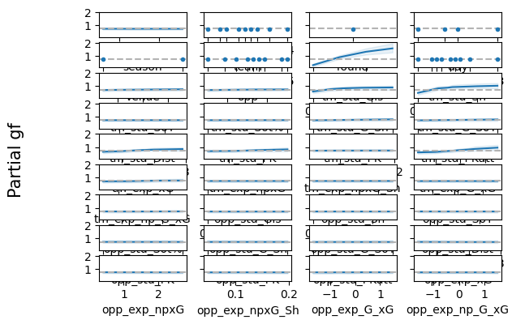
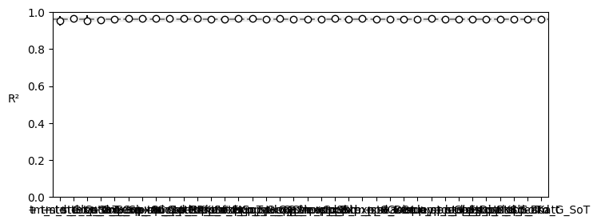

import pandas as pd
import numpy as np
import pymc as pm
import pymc_bart as pmb
import arviz as az
RANDOM_SEED = 139an exploration of team shooting performance in the NWSL
read in data, drop nas and code categories as numerics to make it work with BAYES and define features and target variable
df = pd.read_csv("shooting.csv")
#remove nas
df = df.dropna().copy()
df['season'] = pd.to_numeric(df["season"], errors= 'coerce')
df['gf'] = pd.to_numeric(df['gf'], errors= 'coerce')
# Select all object and category columns
#cat_cols = df.select_dtypes(['object', 'category']).columns
cat_cols = ['team', 'round', 'day', 'venue', 'result', 'opp', 'date', 'time']
# Apply cat.codes to all of them
df[cat_cols] = df[cat_cols].apply(lambda x: x.astype('category').cat.codes)
#make everything else numeric
df[df.columns.difference(cat_cols)] = df[df.columns.difference(cat_cols)].apply(pd.to_numeric, errors='coerce')
# how many seasons are we working with
df['season'].unique()array([2025, 2024, 2023, 2021, 2019])# Train on everything before 2025, test on 2025
train_df = df[df['season'] < 2025].copy()
infer_df = df[df['season'] == 2025].copy()
# Force 'gf' to numeric and drop any games missing 'gf' in the training set
train_df['gf'] = pd.to_numeric(train_df['gf'], errors='coerce')
train_df = train_df.dropna(subset=['gf'])
train_target = train_df["gf"].astype(int)
# CRITICAL FIX: Only select features known BEFORE the match starts!
# If you include match stats like 'sh' or 'xg', 2025 will be NaNs and the model will crash.
pre_match_features = ['team', 'opp', 'venue', 'round', 'day']
train_features = train_df[pre_match_features]
infer_features = infer_df[pre_match_features]
# Just to be 100% safe, fill any accidental blank categories with -1
train_features = train_features.fillna(-1)
infer_features = infer_features.fillna(-1)define bart. use a poisson distribution for goal scored because that is the most commonly used one for soccer goals.
with pm.Model() as nwsl_model:
X_data = pm.Data("X_data", train_features)
y_data = pm.Data("y_data", train_target)
#start by defining BART prior
mu_bart = pmb.BART("mu_bart", X_data, y_data, m=50)
lam = pm.math.exp(mu_bart)
y_obs = pm.Poisson('y_obs', mu = lam, observed = y_data)
trace_nwsl = pm.sample(random_seed= RANDOM_SEED)Multiprocess sampling (4 chains in 4 jobs)
PGBART: [mu_bart]
Progress Draw Speed Elapsed Remaining
───────────────────────────────────────────────
Progress Draw Speed Elapsed Remaining
──────────────────────────────────────────────────────────────────────────────────────
━━━━━━━━━━━━━━━━━━━━━━━━━━━━━━━━━━━━━━━━ 0 0.00 draws/s 0:00:00 -:--:--
Progress Draw Speed Elapsed Remaining
──────────────────────────────────────────────────────────────────────────────────────
━━━━━━━━━━━━━━━━━━━━━━━━━━━━━━━━━━━━━━━━ 0 0.00 draws/s 0:00:00 -:--:--
━━━━━━━━━━━━━━━━━━━━━━━━━━━━━━━━━━━━━━━━ 0 0.00 draws/s 0:00:00 -:--:--
Progress Draw Speed Elapsed Remaining
──────────────────────────────────────────────────────────────────────────────────────
━━━━━━━━━━━━━━━━━━━━━━━━━━━━━━━━━━━━━━━━ 0 0.00 draws/s 0:00:00 -:--:--
━━━━━━━━━━━━━━━━━━━━━━━━━━━━━━━━━━━━━━━━ 0 0.00 draws/s 0:00:00 -:--:--
━━━━━━━━━━━━━━━━━━━━━━━━━━━━━━━━━━━━━━━━ 0 0.00 draws/s 0:00:00 -:--:--
Progress Draw Speed Elapsed Remaining
──────────────────────────────────────────────────────────────────────────────────────
━━━━━━━━━━━━━━━━━━━━━━━━━━━━━━━━━━━━━━━━ 0 0.00 draws/s 0:00:00 -:--:--
━━━━━━━━━━━━━━━━━━━━━━━━━━━━━━━━━━━━━━━━ 0 0.00 draws/s 0:00:00 -:--:--
━━━━━━━━━━━━━━━━━━━━━━━━━━━━━━━━━━━━━━━━ 0 0.00 draws/s 0:00:00 -:--:--
━━━━━━━━━━━━━━━━━━━━━━━━━━━━━━━━━━━━━━━━ 0 0.00 draws/s 0:00:00 -:--:--
Progress Draw Speed Elapsed Remaining
──────────────────────────────────────────────────────────────────────────────────────
━━━━━━━━━━━━━━━━━━━━━━━━━━━━━━━━━━━━━━━━ 0 0.00 draws/s 0:00:00 -:--:--
━━━━━━━━━━━━━━━━━━━━━━━━━━━━━━━━━━━━━━━━ 0 0.00 draws/s 0:00:00 -:--:--
━━━━━━━━━━━━━━━━━━━━━━━━━━━━━━━━━━━━━━━━ 0 0.00 draws/s 0:00:00 -:--:--
━━━━━━━━━━━━━━━━━━━━━━━━━━━━━━━━━━━━━━━━ 0 0.00 draws/s 0:00:00 -:--:--
Progress Draw Speed Elapsed Remaining
──────────────────────────────────────────────────────────────────────────────────────
━━━━━━━━━━━━━━━━━━━━━━━━━━━━━━━━━━━━━━━━ 0 0.00 draws/s 0:00:00 -:--:--
━━━━━━━━━━━━━━━━━━━━━━━━━━━━━━━━━━━━━━━━ 0 0.00 draws/s 0:00:00 -:--:--
━━━━━━━━━━━━━━━━━━━━━━━━━━━━━━━━━━━━━━━━ 0 0.00 draws/s 0:00:00 -:--:--
━━━━━━━━━━━━━━━━━━━━━━━━━━━━━━━━━━━━━━━━ 0 0.00 draws/s 0:00:00 -:--:--
Progress Draw Speed Elapsed Remaining
──────────────────────────────────────────────────────────────────────────────────────
━━━━━━━━━━━━━━━━━━━━━━━━━━━━━━━━━━━━━━━━ 0 0.00 draws/s 0:00:00 -:--:--
━━━━━━━━━━━━━━━━━━━━━━━━━━━━━━━━━━━━━━━━ 0 0.00 draws/s 0:00:00 -:--:--
━━━━━━━━━━━━━━━━━━━━━━━━━━━━━━━━━━━━━━━━ 0 0.00 draws/s 0:00:00 -:--:--
━━━━━━━━━━━━━━━━━━━━━━━━━━━━━━━━━━━━━━━━ 0 0.00 draws/s 0:00:00 -:--:--
Progress Draw Speed Elapsed Remaining
──────────────────────────────────────────────────────────────────────────────────────
━━━━━━━━━━━━━━━━━━━━━━━━━━━━━━━━━━━━━━━━ 0 0.00 draws/s 0:00:00 -:--:--
━━━━━━━━━━━━━━━━━━━━━━━━━━━━━━━━━━━━━━━━ 0 0.00 draws/s 0:00:00 -:--:--
━━━━━━━━━━━━━━━━━━━━━━━━━━━━━━━━━━━━━━━━ 0 0.00 draws/s 0:00:00 -:--:--
━━━━━━━━━━━━━━━━━━━━━━━━━━━━━━━━━━━━━━━━ 0 0.00 draws/s 0:00:00 -:--:--
Progress Draw Speed Elapsed Remaining
──────────────────────────────────────────────────────────────────────────────────────
━━━━━━━━━━━━━━━━━━━━━━━━━━━━━━━━━━━━━━━━ 0 0.00 draws/s 0:00:00 -:--:--
━━━━━━━━━━━━━━━━━━━━━━━━━━━━━━━━━━━━━━━━ 0 0.00 draws/s 0:00:00 -:--:--
━━━━━━━━━━━━━━━━━━━━━━━━━━━━━━━━━━━━━━━━ 0 0.00 draws/s 0:00:00 -:--:--
━━━━━━━━━━━━━━━━━━━━━━━━━━━━━━━━━━━━━━━━ 0 0.00 draws/s 0:00:00 -:--:--
Progress Draw Speed Elapsed Remaining
──────────────────────────────────────────────────────────────────────────────────────
━━━━━━━━━━━━━━━━━━━━━━━━━━━━━━━━━━━━━━━━ 0 0.00 draws/s 0:00:00 -:--:--
━━━━━━━━━━━━━━━━━━━━━━━━━━━━━━━━━━━━━━━━ 0 0.00 draws/s 0:00:00 -:--:--
━━━━━━━━━━━━━━━━━━━━━━━━━━━━━━━━━━━━━━━━ 0 0.00 draws/s 0:00:00 -:--:--
━━━━━━━━━━━━━━━━━━━━━━━━━━━━━━━━━━━━━━━━ 0 0.00 draws/s 0:00:00 -:--:--
Progress Draw Speed Elapsed Remaining
──────────────────────────────────────────────────────────────────────────────────────
━━━━━━━━━━━━━━━━━━━━━━━━━━━━━━━━━━━━━━━━ 0 0.00 draws/s 0:00:00 -:--:--
━━━━━━━━━━━━━━━━━━━━━━━━━━━━━━━━━━━━━━━━ 0 0.00 draws/s 0:00:00 -:--:--
━━━━━━━━━━━━━━━━━━━━━━━━━━━━━━━━━━━━━━━━ 0 0.00 draws/s 0:00:00 -:--:--
━━━━━━━━━━━━━━━━━━━━━━━━━━━━━━━━━━━━━━━━ 0 0.00 draws/s 0:00:00 -:--:--
Progress Draw Speed Elapsed Remaining
──────────────────────────────────────────────────────────────────────────────────────
━━━━━━━━━━━━━━━━━━━━━━━━━━━━━━━━━━━━━━━━ 0 0.00 draws/s 0:00:00 -:--:--
━━━━━━━━━━━━━━━━━━━━━━━━━━━━━━━━━━━━━━━━ 0 0.00 draws/s 0:00:00 -:--:--
━━━━━━━━━━━━━━━━━━━━━━━━━━━━━━━━━━━━━━━━ 0 0.00 draws/s 0:00:00 -:--:--
━━━━━━━━━━━━━━━━━━━━━━━━━━━━━━━━━━━━━━━━ 0 0.00 draws/s 0:00:00 -:--:--
Progress Draw Speed Elapsed Remaining
──────────────────────────────────────────────────────────────────────────────────────
━━━━━━━━━━━━━━━━━━━━━━━━━━━━━━━━━━━━━━━━ 0 0.00 draws/s 0:00:00 -:--:--
━━━━━━━━━━━━━━━━━━━━━━━━━━━━━━━━━━━━━━━━ 0 0.00 draws/s 0:00:00 -:--:--
━━━━━━━━━━━━━━━━━━━━━━━━━━━━━━━━━━━━━━━━ 0 0.00 draws/s 0:00:00 -:--:--
━━━━━━━━━━━━━━━━━━━━━━━━━━━━━━━━━━━━━━━━ 0 0.00 draws/s 0:00:00 -:--:--
Progress Draw Speed Elapsed Remaining
──────────────────────────────────────────────────────────────────────────────────────
━━━━━━━━━━━━━━━━━━━━━━━━━━━━━━━━━━━━━━━━ 0 0.00 draws/s 0:00:01 -:--:--
━━━━━━━━━━━━━━━━━━━━━━━━━━━━━━━━━━━━━━━━ 0 0.00 draws/s 0:00:01 -:--:--
━━━━━━━━━━━━━━━━━━━━━━━━━━━━━━━━━━━━━━━━ 0 0.00 draws/s 0:00:01 -:--:--
━━━━━━━━━━━━━━━━━━━━━━━━━━━━━━━━━━━━━━━━ 0 0.00 draws/s 0:00:01 -:--:--
Progress Draw Speed Elapsed Remaining
──────────────────────────────────────────────────────────────────────────────────────
━━━━━━━━━━━━━━━━━━━━━━━━━━━━━━━━━━━━━━━━ 0 0.00 draws/s 0:00:01 -:--:--
━━━━━━━━━━━━━━━━━━━━━━━━━━━━━━━━━━━━━━━━ 0 0.00 draws/s 0:00:01 -:--:--
━━━━━━━━━━━━━━━━━━━━━━━━━━━━━━━━━━━━━━━━ 0 0.00 draws/s 0:00:01 -:--:--
━━━━━━━━━━━━━━━━━━━━━━━━━━━━━━━━━━━━━━━━ 0 0.00 draws/s 0:00:01 -:--:--
Progress Draw Speed Elapsed Remaining
──────────────────────────────────────────────────────────────────────────────────────
━━━━━━━━━━━━━━━━━━━━━━━━━━━━━━━━━━━━━━━━ 0 0.00 draws/s 0:00:01 -:--:--
━━━━━━━━━━━━━━━━━━━━━━━━━━━━━━━━━━━━━━━━ 0 0.00 draws/s 0:00:01 -:--:--
━━━━━━━━━━━━━━━━━━━━━━━━━━━━━━━━━━━━━━━━ 0 0.00 draws/s 0:00:01 -:--:--
━━━━━━━━━━━━━━━━━━━━━━━━━━━━━━━━━━━━━━━━ 0 0.00 draws/s 0:00:01 -:--:--
Progress Draw Speed Elapsed Remaining
──────────────────────────────────────────────────────────────────────────────────────
━━━━━━━━━━━━━━━━━━━━━━━━━━━━━━━━━━━━━━━━ 0 0.00 draws/s 0:00:01 -:--:--
━━━━━━━━━━━━━━━━━━━━━━━━━━━━━━━━━━━━━━━━ 0 0.00 draws/s 0:00:01 -:--:--
━━━━━━━━━━━━━━━━━━━━━━━━━━━━━━━━━━━━━━━━ 0 0.00 draws/s 0:00:01 -:--:--
━━━━━━━━━━━━━━━━━━━━━━━━━━━━━━━━━━━━━━━━ 0 0.00 draws/s 0:00:01 -:--:--
Progress Draw Speed Elapsed Remaining
──────────────────────────────────────────────────────────────────────────────────────
━━━━━━━━━━━━━━━━━━━━━━━━━━━━━━━━━━━━━━━━ 7 4.68 draws/s 0:00:01 0:00:25
━━━━━━━━━━━━━━━━━━━━━━━━━━━━━━━━━━━━━━━━ 11 7.31 draws/s 0:00:01 0:00:20
━━━━━━━━━━━━━━━━━━━━━━━━━━━━━━━━━━━━━━━━ 11 7.37 draws/s 0:00:01 0:00:19
━━━━━━━━━━━━━━━━━━━━━━━━━━━━━━━━━━━━━━━━ 10 6.67 draws/s 0:00:01 0:00:22
Progress Draw Speed Elapsed Remaining
───────────────────────────────────────────────────────────────────────────────────────
━━━━━━━━━━━━━━━━━━━━━━━━━━━━━━━━━━━━━━━━ 16 9.92 draws/s 0:00:01 0:00:26
━━━━━━━━━━━━━━━━━━━━━━━━━━━━━━━━━━━━━━━━ 22 13.68 draws/s 0:00:01 0:00:20
━━━━━━━━━━━━━━━━━━━━━━━━━━━━━━━━━━━━━━━━ 22 13.77 draws/s 0:00:01 0:00:19
━━━━━━━━━━━━━━━━━━━━━━━━━━━━━━━━━━━━━━━━ 20 12.47 draws/s 0:00:01 0:00:21
Progress Draw Speed Elapsed Remaining
───────────────────────────────────────────────────────────────────────────────────────
╸━━━━━━━━━━━━━━━━━━━━━━━━━━━━━━━━━━━━━━━ 26 15.11 draws/s 0:00:01 0:00:24
╸━━━━━━━━━━━━━━━━━━━━━━━━━━━━━━━━━━━━━━━ 33 19.20 draws/s 0:00:01 0:00:20
╸━━━━━━━━━━━━━━━━━━━━━━━━━━━━━━━━━━━━━━━ 33 19.26 draws/s 0:00:01 0:00:20
╸━━━━━━━━━━━━━━━━━━━━━━━━━━━━━━━━━━━━━━━ 31 18.16 draws/s 0:00:01 0:00:20
Progress Draw Speed Elapsed Remaining
───────────────────────────────────────────────────────────────────────────────────────
╸━━━━━━━━━━━━━━━━━━━━━━━━━━━━━━━━━━━━━━━ 37 20.30 draws/s 0:00:01 0:00:22
╸━━━━━━━━━━━━━━━━━━━━━━━━━━━━━━━━━━━━━━━ 42 23.14 draws/s 0:00:01 0:00:20
╸━━━━━━━━━━━━━━━━━━━━━━━━━━━━━━━━━━━━━━━ 43 23.64 draws/s 0:00:01 0:00:20
╸━━━━━━━━━━━━━━━━━━━━━━━━━━━━━━━━━━━━━━━ 41 22.58 draws/s 0:00:01 0:00:21
Progress Draw Speed Elapsed Remaining
───────────────────────────────────────────────────────────────────────────────────────
╸━━━━━━━━━━━━━━━━━━━━━━━━━━━━━━━━━━━━━━━ 47 24.32 draws/s 0:00:01 0:00:22
━╺━━━━━━━━━━━━━━━━━━━━━━━━━━━━━━━━━━━━━━ 52 27.01 draws/s 0:00:01 0:00:20
━╺━━━━━━━━━━━━━━━━━━━━━━━━━━━━━━━━━━━━━━ 53 27.49 draws/s 0:00:01 0:00:20
━╺━━━━━━━━━━━━━━━━━━━━━━━━━━━━━━━━━━━━━━ 52 27.07 draws/s 0:00:01 0:00:20
Progress Draw Speed Elapsed Remaining
───────────────────────────────────────────────────────────────────────────────────────
━╺━━━━━━━━━━━━━━━━━━━━━━━━━━━━━━━━━━━━━━ 58 28.48 draws/s 0:00:02 0:00:21
━╺━━━━━━━━━━━━━━━━━━━━━━━━━━━━━━━━━━━━━━ 62 30.63 draws/s 0:00:02 0:00:20
━╺━━━━━━━━━━━━━━━━━━━━━━━━━━━━━━━━━━━━━━ 63 31.10 draws/s 0:00:02 0:00:20
━╺━━━━━━━━━━━━━━━━━━━━━━━━━━━━━━━━━━━━━━ 62 30.53 draws/s 0:00:02 0:00:20
Progress Draw Speed Elapsed Remaining
───────────────────────────────────────────────────────────────────────────────────────
━╺━━━━━━━━━━━━━━━━━━━━━━━━━━━━━━━━━━━━━━ 68 31.87 draws/s 0:00:02 0:00:21
━╺━━━━━━━━━━━━━━━━━━━━━━━━━━━━━━━━━━━━━━ 72 33.74 draws/s 0:00:02 0:00:20
━╺━━━━━━━━━━━━━━━━━━━━━━━━━━━━━━━━━━━━━━ 73 34.27 draws/s 0:00:02 0:00:20
━╺━━━━━━━━━━━━━━━━━━━━━━━━━━━━━━━━━━━━━━ 71 33.35 draws/s 0:00:02 0:00:20
Progress Draw Speed Elapsed Remaining
───────────────────────────────────────────────────────────────────────────────────────
━╸━━━━━━━━━━━━━━━━━━━━━━━━━━━━━━━━━━━━━━ 79 35.06 draws/s 0:00:02 0:00:21
━╸━━━━━━━━━━━━━━━━━━━━━━━━━━━━━━━━━━━━━━ 82 36.55 draws/s 0:00:02 0:00:20
━╸━━━━━━━━━━━━━━━━━━━━━━━━━━━━━━━━━━━━━━ 83 37.01 draws/s 0:00:02 0:00:20
━╸━━━━━━━━━━━━━━━━━━━━━━━━━━━━━━━━━━━━━━ 81 36.19 draws/s 0:00:02 0:00:21
Progress Draw Speed Elapsed Remaining
───────────────────────────────────────────────────────────────────────────────────────
━╸━━━━━━━━━━━━━━━━━━━━━━━━━━━━━━━━━━━━━━ 88 37.28 draws/s 0:00:02 0:00:21
━╸━━━━━━━━━━━━━━━━━━━━━━━━━━━━━━━━━━━━━━ 93 39.43 draws/s 0:00:02 0:00:20
━╸━━━━━━━━━━━━━━━━━━━━━━━━━━━━━━━━━━━━━━ 93 39.59 draws/s 0:00:02 0:00:20
━╸━━━━━━━━━━━━━━━━━━━━━━━━━━━━━━━━━━━━━━ 91 38.65 draws/s 0:00:02 0:00:21
Progress Draw Speed Elapsed Remaining
───────────────────────────────────────────────────────────────────────────────────────
━╸━━━━━━━━━━━━━━━━━━━━━━━━━━━━━━━━━━━━━━ 99 40.21 draws/s 0:00:02 0:00:21
━━╺━━━━━━━━━━━━━━━━━━━━━━━━━━━━━━━━━━━━━ 101 41.08 draws/s 0:00:02 0:00:20
━━╺━━━━━━━━━━━━━━━━━━━━━━━━━━━━━━━━━━━━━ 105 42.66 draws/s 0:00:02 0:00:20
━━╺━━━━━━━━━━━━━━━━━━━━━━━━━━━━━━━━━━━━━ 101 41.05 draws/s 0:00:02 0:00:21
Progress Draw Speed Elapsed Remaining
───────────────────────────────────────────────────────────────────────────────────────
━━╺━━━━━━━━━━━━━━━━━━━━━━━━━━━━━━━━━━━━━ 109 42.47 draws/s 0:00:02 0:00:21
━━╺━━━━━━━━━━━━━━━━━━━━━━━━━━━━━━━━━━━━━ 112 43.65 draws/s 0:00:02 0:00:20
━━╺━━━━━━━━━━━━━━━━━━━━━━━━━━━━━━━━━━━━━ 115 44.66 draws/s 0:00:02 0:00:20
━━╺━━━━━━━━━━━━━━━━━━━━━━━━━━━━━━━━━━━━━ 110 42.88 draws/s 0:00:02 0:00:21
Progress Draw Speed Elapsed Remaining
───────────────────────────────────────────────────────────────────────────────────────
━━╺━━━━━━━━━━━━━━━━━━━━━━━━━━━━━━━━━━━━━ 119 44.39 draws/s 0:00:02 0:00:21
━━╺━━━━━━━━━━━━━━━━━━━━━━━━━━━━━━━━━━━━━ 122 45.53 draws/s 0:00:02 0:00:20
━━╸━━━━━━━━━━━━━━━━━━━━━━━━━━━━━━━━━━━━━ 125 46.69 draws/s 0:00:02 0:00:20
━━╺━━━━━━━━━━━━━━━━━━━━━━━━━━━━━━━━━━━━━ 120 44.80 draws/s 0:00:02 0:00:21
Progress Draw Speed Elapsed Remaining
───────────────────────────────────────────────────────────────────────────────────────
━━╸━━━━━━━━━━━━━━━━━━━━━━━━━━━━━━━━━━━━━ 130 46.47 draws/s 0:00:02 0:00:20
━━╸━━━━━━━━━━━━━━━━━━━━━━━━━━━━━━━━━━━━━ 134 47.99 draws/s 0:00:02 0:00:20
━━╸━━━━━━━━━━━━━━━━━━━━━━━━━━━━━━━━━━━━━ 135 48.37 draws/s 0:00:02 0:00:20
━━╸━━━━━━━━━━━━━━━━━━━━━━━━━━━━━━━━━━━━━ 130 46.59 draws/s 0:00:02 0:00:21
Progress Draw Speed Elapsed Remaining
───────────────────────────────────────────────────────────────────────────────────────
━━╸━━━━━━━━━━━━━━━━━━━━━━━━━━━━━━━━━━━━━ 134 46.95 draws/s 0:00:02 0:00:21
━━╸━━━━━━━━━━━━━━━━━━━━━━━━━━━━━━━━━━━━━ 138 47.47 draws/s 0:00:02 0:00:21
━━╸━━━━━━━━━━━━━━━━━━━━━━━━━━━━━━━━━━━━━ 139 48.81 draws/s 0:00:02 0:00:20
━━╸━━━━━━━━━━━━━━━━━━━━━━━━━━━━━━━━━━━━━ 134 47.04 draws/s 0:00:02 0:00:21
Progress Draw Speed Elapsed Remaining
───────────────────────────────────────────────────────────────────────────────────────
━━╸━━━━━━━━━━━━━━━━━━━━━━━━━━━━━━━━━━━━━ 140 46.75 draws/s 0:00:03 0:00:22
━━╸━━━━━━━━━━━━━━━━━━━━━━━━━━━━━━━━━━━━━ 144 47.86 draws/s 0:00:03 0:00:21
━━╸━━━━━━━━━━━━━━━━━━━━━━━━━━━━━━━━━━━━━ 144 47.99 draws/s 0:00:03 0:00:21
━━╸━━━━━━━━━━━━━━━━━━━━━━━━━━━━━━━━━━━━━ 140 46.59 draws/s 0:00:03 0:00:22
Progress Draw Speed Elapsed Remaining
───────────────────────────────────────────────────────────────────────────────────────
━━╸━━━━━━━━━━━━━━━━━━━━━━━━━━━━━━━━━━━━━ 148 47.54 draws/s 0:00:03 0:00:22
━━━╺━━━━━━━━━━━━━━━━━━━━━━━━━━━━━━━━━━━━ 153 49.09 draws/s 0:00:03 0:00:21
━━━╺━━━━━━━━━━━━━━━━━━━━━━━━━━━━━━━━━━━━ 153 49.10 draws/s 0:00:03 0:00:21
━━╸━━━━━━━━━━━━━━━━━━━━━━━━━━━━━━━━━━━━━ 148 47.60 draws/s 0:00:03 0:00:22
Progress Draw Speed Elapsed Remaining
───────────────────────────────────────────────────────────────────────────────────────
━━━╺━━━━━━━━━━━━━━━━━━━━━━━━━━━━━━━━━━━━ 157 48.71 draws/s 0:00:03 0:00:22
━━━╺━━━━━━━━━━━━━━━━━━━━━━━━━━━━━━━━━━━━ 161 50.00 draws/s 0:00:03 0:00:21
━━━╺━━━━━━━━━━━━━━━━━━━━━━━━━━━━━━━━━━━━ 160 49.82 draws/s 0:00:03 0:00:21
━━━╺━━━━━━━━━━━━━━━━━━━━━━━━━━━━━━━━━━━━ 156 48.56 draws/s 0:00:03 0:00:22
Progress Draw Speed Elapsed Remaining
───────────────────────────────────────────────────────────────────────────────────────
━━━╺━━━━━━━━━━━━━━━━━━━━━━━━━━━━━━━━━━━━ 166 49.89 draws/s 0:00:03 0:00:22
━━━╺━━━━━━━━━━━━━━━━━━━━━━━━━━━━━━━━━━━━ 169 50.80 draws/s 0:00:03 0:00:21
━━━╺━━━━━━━━━━━━━━━━━━━━━━━━━━━━━━━━━━━━ 168 50.69 draws/s 0:00:03 0:00:21
━━━╺━━━━━━━━━━━━━━━━━━━━━━━━━━━━━━━━━━━━ 164 49.37 draws/s 0:00:03 0:00:22
Progress Draw Speed Elapsed Remaining
───────────────────────────────────────────────────────────────────────────────────────
━━━╸━━━━━━━━━━━━━━━━━━━━━━━━━━━━━━━━━━━━ 176 51.28 draws/s 0:00:03 0:00:21
━━━╸━━━━━━━━━━━━━━━━━━━━━━━━━━━━━━━━━━━━ 179 52.34 draws/s 0:00:03 0:00:21
━━━╸━━━━━━━━━━━━━━━━━━━━━━━━━━━━━━━━━━━━ 177 51.65 draws/s 0:00:03 0:00:21
━━━╸━━━━━━━━━━━━━━━━━━━━━━━━━━━━━━━━━━━━ 175 51.07 draws/s 0:00:03 0:00:22
Progress Draw Speed Elapsed Remaining
───────────────────────────────────────────────────────────────────────────────────────
━━━╸━━━━━━━━━━━━━━━━━━━━━━━━━━━━━━━━━━━━ 185 52.40 draws/s 0:00:03 0:00:21
━━━╸━━━━━━━━━━━━━━━━━━━━━━━━━━━━━━━━━━━━ 188 53.18 draws/s 0:00:03 0:00:21
━━━╸━━━━━━━━━━━━━━━━━━━━━━━━━━━━━━━━━━━━ 187 53.00 draws/s 0:00:03 0:00:21
━━━╸━━━━━━━━━━━━━━━━━━━━━━━━━━━━━━━━━━━━ 185 52.36 draws/s 0:00:03 0:00:22
Progress Draw Speed Elapsed Remaining
───────────────────────────────────────────────────────────────────────────────────────
━━━╸━━━━━━━━━━━━━━━━━━━━━━━━━━━━━━━━━━━━ 194 53.28 draws/s 0:00:03 0:00:21
━━━╸━━━━━━━━━━━━━━━━━━━━━━━━━━━━━━━━━━━━ 197 54.13 draws/s 0:00:03 0:00:21
━━━╸━━━━━━━━━━━━━━━━━━━━━━━━━━━━━━━━━━━━ 197 54.05 draws/s 0:00:03 0:00:21
━━━╸━━━━━━━━━━━━━━━━━━━━━━━━━━━━━━━━━━━━ 196 53.81 draws/s 0:00:03 0:00:21
Progress Draw Speed Elapsed Remaining
───────────────────────────────────────────────────────────────────────────────────────
━━━━╺━━━━━━━━━━━━━━━━━━━━━━━━━━━━━━━━━━━ 204 54.44 draws/s 0:00:03 0:00:21
━━━━╺━━━━━━━━━━━━━━━━━━━━━━━━━━━━━━━━━━━ 207 55.19 draws/s 0:00:03 0:00:21
━━━━╺━━━━━━━━━━━━━━━━━━━━━━━━━━━━━━━━━━━ 207 55.32 draws/s 0:00:03 0:00:21
━━━━╺━━━━━━━━━━━━━━━━━━━━━━━━━━━━━━━━━━━ 206 54.90 draws/s 0:00:03 0:00:21
Progress Draw Speed Elapsed Remaining
───────────────────────────────────────────────────────────────────────────────────────
━━━━╺━━━━━━━━━━━━━━━━━━━━━━━━━━━━━━━━━━━ 214 55.50 draws/s 0:00:03 0:00:21
━━━━╺━━━━━━━━━━━━━━━━━━━━━━━━━━━━━━━━━━━ 217 56.24 draws/s 0:00:03 0:00:21
━━━━╺━━━━━━━━━━━━━━━━━━━━━━━━━━━━━━━━━━━ 218 56.49 draws/s 0:00:03 0:00:21
━━━━╺━━━━━━━━━━━━━━━━━━━━━━━━━━━━━━━━━━━ 215 55.78 draws/s 0:00:03 0:00:21
Progress Draw Speed Elapsed Remaining
───────────────────────────────────────────────────────────────────────────────────────
━━━━╺━━━━━━━━━━━━━━━━━━━━━━━━━━━━━━━━━━━ 224 56.38 draws/s 0:00:03 0:00:21
━━━━╸━━━━━━━━━━━━━━━━━━━━━━━━━━━━━━━━━━━ 227 57.17 draws/s 0:00:03 0:00:21
━━━━╸━━━━━━━━━━━━━━━━━━━━━━━━━━━━━━━━━━━ 229 57.69 draws/s 0:00:03 0:00:20
━━━━╸━━━━━━━━━━━━━━━━━━━━━━━━━━━━━━━━━━━ 225 56.77 draws/s 0:00:03 0:00:21
Progress Draw Speed Elapsed Remaining
───────────────────────────────────────────────────────────────────────────────────────
━━━━╸━━━━━━━━━━━━━━━━━━━━━━━━━━━━━━━━━━━ 231 56.70 draws/s 0:00:04 0:00:21
━━━━╸━━━━━━━━━━━━━━━━━━━━━━━━━━━━━━━━━━━ 235 57.62 draws/s 0:00:04 0:00:21
━━━━╸━━━━━━━━━━━━━━━━━━━━━━━━━━━━━━━━━━━ 237 58.15 draws/s 0:00:04 0:00:20
━━━━╸━━━━━━━━━━━━━━━━━━━━━━━━━━━━━━━━━━━ 233 57.24 draws/s 0:00:04 0:00:21
Progress Draw Speed Elapsed Remaining
───────────────────────────────────────────────────────────────────────────────────────
━━━━╸━━━━━━━━━━━━━━━━━━━━━━━━━━━━━━━━━━━ 240 57.29 draws/s 0:00:04 0:00:21
━━━━╸━━━━━━━━━━━━━━━━━━━━━━━━━━━━━━━━━━━ 245 58.56 draws/s 0:00:04 0:00:20
━━━━╸━━━━━━━━━━━━━━━━━━━━━━━━━━━━━━━━━━━ 248 59.36 draws/s 0:00:04 0:00:20
━━━━╸━━━━━━━━━━━━━━━━━━━━━━━━━━━━━━━━━━━ 245 58.56 draws/s 0:00:04 0:00:21
Progress Draw Speed Elapsed Remaining
───────────────────────────────────────────────────────────────────────────────────────
━━━━╸━━━━━━━━━━━━━━━━━━━━━━━━━━━━━━━━━━━ 248 57.78 draws/s 0:00:04 0:00:21
━━━━━╺━━━━━━━━━━━━━━━━━━━━━━━━━━━━━━━━━━ 256 59.66 draws/s 0:00:04 0:00:20
━━━━━╺━━━━━━━━━━━━━━━━━━━━━━━━━━━━━━━━━━ 258 60.14 draws/s 0:00:04 0:00:20
━━━━━╺━━━━━━━━━━━━━━━━━━━━━━━━━━━━━━━━━━ 254 59.31 draws/s 0:00:04 0:00:20
Progress Draw Speed Elapsed Remaining
───────────────────────────────────────────────────────────────────────────────────────
━━━━━╺━━━━━━━━━━━━━━━━━━━━━━━━━━━━━━━━━━ 259 58.89 draws/s 0:00:04 0:00:21
━━━━━╺━━━━━━━━━━━━━━━━━━━━━━━━━━━━━━━━━━ 266 60.54 draws/s 0:00:04 0:00:20
━━━━━╺━━━━━━━━━━━━━━━━━━━━━━━━━━━━━━━━━━ 267 60.79 draws/s 0:00:04 0:00:20
━━━━━╺━━━━━━━━━━━━━━━━━━━━━━━━━━━━━━━━━━ 263 59.90 draws/s 0:00:04 0:00:20
Progress Draw Speed Elapsed Remaining
───────────────────────────────────────────────────────────────────────────────────────
━━━━━╺━━━━━━━━━━━━━━━━━━━━━━━━━━━━━━━━━━ 269 59.78 draws/s 0:00:04 0:00:20
━━━━━╺━━━━━━━━━━━━━━━━━━━━━━━━━━━━━━━━━━ 274 60.87 draws/s 0:00:04 0:00:20
━━━━━╸━━━━━━━━━━━━━━━━━━━━━━━━━━━━━━━━━━ 278 61.70 draws/s 0:00:04 0:00:20
━━━━━╺━━━━━━━━━━━━━━━━━━━━━━━━━━━━━━━━━━ 272 60.59 draws/s 0:00:04 0:00:20
Progress Draw Speed Elapsed Remaining
───────────────────────────────────────────────────────────────────────────────────────
━━━━━╸━━━━━━━━━━━━━━━━━━━━━━━━━━━━━━━━━━ 278 60.30 draws/s 0:00:04 0:00:20
━━━━━╸━━━━━━━━━━━━━━━━━━━━━━━━━━━━━━━━━━ 282 61.14 draws/s 0:00:04 0:00:20
━━━━━╸━━━━━━━━━━━━━━━━━━━━━━━━━━━━━━━━━━ 286 62.15 draws/s 0:00:04 0:00:20
━━━━━╸━━━━━━━━━━━━━━━━━━━━━━━━━━━━━━━━━━ 281 60.94 draws/s 0:00:04 0:00:20
Progress Draw Speed Elapsed Remaining
───────────────────────────────────────────────────────────────────────────────────────
━━━━━╸━━━━━━━━━━━━━━━━━━━━━━━━━━━━━━━━━━ 289 61.18 draws/s 0:00:04 0:00:20
━━━━━╸━━━━━━━━━━━━━━━━━━━━━━━━━━━━━━━━━━ 290 61.49 draws/s 0:00:04 0:00:20
━━━━━╸━━━━━━━━━━━━━━━━━━━━━━━━━━━━━━━━━━ 297 62.95 draws/s 0:00:04 0:00:20
━━━━━╸━━━━━━━━━━━━━━━━━━━━━━━━━━━━━━━━━━ 289 61.21 draws/s 0:00:04 0:00:20
Progress Draw Speed Elapsed Remaining
───────────────────────────────────────────────────────────────────────────────────────
━━━━━╸━━━━━━━━━━━━━━━━━━━━━━━━━━━━━━━━━━ 298 61.78 draws/s 0:00:04 0:00:20
━━━━━╸━━━━━━━━━━━━━━━━━━━━━━━━━━━━━━━━━━ 299 61.96 draws/s 0:00:04 0:00:20
━━━━━━╺━━━━━━━━━━━━━━━━━━━━━━━━━━━━━━━━━ 306 63.54 draws/s 0:00:04 0:00:19
━━━━━╸━━━━━━━━━━━━━━━━━━━━━━━━━━━━━━━━━━ 299 61.96 draws/s 0:00:04 0:00:20
Progress Draw Speed Elapsed Remaining
───────────────────────────────────────────────────────────────────────────────────────
━━━━━━╺━━━━━━━━━━━━━━━━━━━━━━━━━━━━━━━━━ 308 62.39 draws/s 0:00:04 0:00:20
━━━━━━╺━━━━━━━━━━━━━━━━━━━━━━━━━━━━━━━━━ 309 62.66 draws/s 0:00:04 0:00:20
━━━━━━╺━━━━━━━━━━━━━━━━━━━━━━━━━━━━━━━━━ 317 64.32 draws/s 0:00:04 0:00:19
━━━━━━╺━━━━━━━━━━━━━━━━━━━━━━━━━━━━━━━━━ 308 62.51 draws/s 0:00:04 0:00:20
Progress Draw Speed Elapsed Remaining
───────────────────────────────────────────────────────────────────────────────────────
━━━━━━╺━━━━━━━━━━━━━━━━━━━━━━━━━━━━━━━━━ 318 63.16 draws/s 0:00:05 0:00:20
━━━━━━╺━━━━━━━━━━━━━━━━━━━━━━━━━━━━━━━━━ 320 63.50 draws/s 0:00:05 0:00:20
━━━━━━╸━━━━━━━━━━━━━━━━━━━━━━━━━━━━━━━━━ 326 64.78 draws/s 0:00:05 0:00:19
━━━━━━╺━━━━━━━━━━━━━━━━━━━━━━━━━━━━━━━━━ 317 62.92 draws/s 0:00:05 0:00:20
Progress Draw Speed Elapsed Remaining
───────────────────────────────────────────────────────────────────────────────────────
━━━━━━╸━━━━━━━━━━━━━━━━━━━━━━━━━━━━━━━━━ 329 63.92 draws/s 0:00:05 0:00:19
━━━━━━╸━━━━━━━━━━━━━━━━━━━━━━━━━━━━━━━━━ 329 63.93 draws/s 0:00:05 0:00:20
━━━━━━╸━━━━━━━━━━━━━━━━━━━━━━━━━━━━━━━━━ 336 65.31 draws/s 0:00:05 0:00:19
━━━━━━╸━━━━━━━━━━━━━━━━━━━━━━━━━━━━━━━━━ 328 63.72 draws/s 0:00:05 0:00:20
Progress Draw Speed Elapsed Remaining
───────────────────────────────────────────────────────────────────────────────────────
━━━━━━╸━━━━━━━━━━━━━━━━━━━━━━━━━━━━━━━━━ 338 64.28 draws/s 0:00:05 0:00:19
━━━━━━╸━━━━━━━━━━━━━━━━━━━━━━━━━━━━━━━━━ 337 64.26 draws/s 0:00:05 0:00:19
━━━━━━╸━━━━━━━━━━━━━━━━━━━━━━━━━━━━━━━━━ 345 65.77 draws/s 0:00:05 0:00:19
━━━━━━╸━━━━━━━━━━━━━━━━━━━━━━━━━━━━━━━━━ 335 63.84 draws/s 0:00:05 0:00:20
Progress Draw Speed Elapsed Remaining
───────────────────────────────────────────────────────────────────────────────────────
━━━━━━╸━━━━━━━━━━━━━━━━━━━━━━━━━━━━━━━━━ 349 65.10 draws/s 0:00:05 0:00:19
━━━━━━╸━━━━━━━━━━━━━━━━━━━━━━━━━━━━━━━━━ 348 64.79 draws/s 0:00:05 0:00:19
━━━━━━━╺━━━━━━━━━━━━━━━━━━━━━━━━━━━━━━━━ 355 66.12 draws/s 0:00:05 0:00:19
━━━━━━╸━━━━━━━━━━━━━━━━━━━━━━━━━━━━━━━━━ 345 64.32 draws/s 0:00:05 0:00:20
Progress Draw Speed Elapsed Remaining
───────────────────────────────────────────────────────────────────────────────────────
━━━━━━━╺━━━━━━━━━━━━━━━━━━━━━━━━━━━━━━━━ 360 65.68 draws/s 0:00:05 0:00:19
━━━━━━━╺━━━━━━━━━━━━━━━━━━━━━━━━━━━━━━━━ 357 65.19 draws/s 0:00:05 0:00:19
━━━━━━━╺━━━━━━━━━━━━━━━━━━━━━━━━━━━━━━━━ 366 66.80 draws/s 0:00:05 0:00:19
━━━━━━━╺━━━━━━━━━━━━━━━━━━━━━━━━━━━━━━━━ 355 64.85 draws/s 0:00:05 0:00:19
Progress Draw Speed Elapsed Remaining
───────────────────────────────────────────────────────────────────────────────────────
━━━━━━━╺━━━━━━━━━━━━━━━━━━━━━━━━━━━━━━━━ 370 66.17 draws/s 0:00:05 0:00:19
━━━━━━━╺━━━━━━━━━━━━━━━━━━━━━━━━━━━━━━━━ 368 65.83 draws/s 0:00:05 0:00:19
━━━━━━━╺━━━━━━━━━━━━━━━━━━━━━━━━━━━━━━━━ 374 67.05 draws/s 0:00:05 0:00:19
━━━━━━━╺━━━━━━━━━━━━━━━━━━━━━━━━━━━━━━━━ 365 65.37 draws/s 0:00:05 0:00:19
Progress Draw Speed Elapsed Remaining
───────────────────────────────────────────────────────────────────────────────────────
━━━━━━━╸━━━━━━━━━━━━━━━━━━━━━━━━━━━━━━━━ 379 66.56 draws/s 0:00:05 0:00:19
━━━━━━━╸━━━━━━━━━━━━━━━━━━━━━━━━━━━━━━━━ 378 66.32 draws/s 0:00:05 0:00:19
━━━━━━━╸━━━━━━━━━━━━━━━━━━━━━━━━━━━━━━━━ 385 67.61 draws/s 0:00:05 0:00:19
━━━━━━━╸━━━━━━━━━━━━━━━━━━━━━━━━━━━━━━━━ 375 65.97 draws/s 0:00:05 0:00:19
Progress Draw Speed Elapsed Remaining
───────────────────────────────────────────────────────────────────────────────────────
━━━━━━━╸━━━━━━━━━━━━━━━━━━━━━━━━━━━━━━━━ 390 67.17 draws/s 0:00:05 0:00:19
━━━━━━━╸━━━━━━━━━━━━━━━━━━━━━━━━━━━━━━━━ 387 66.67 draws/s 0:00:05 0:00:19
━━━━━━━╸━━━━━━━━━━━━━━━━━━━━━━━━━━━━━━━━ 393 67.74 draws/s 0:00:05 0:00:19
━━━━━━━╸━━━━━━━━━━━━━━━━━━━━━━━━━━━━━━━━ 385 66.36 draws/s 0:00:05 0:00:19
Progress Draw Speed Elapsed Remaining
───────────────────────────────────────────────────────────────────────────────────────
━━━━━━━━╺━━━━━━━━━━━━━━━━━━━━━━━━━━━━━━━ 400 67.66 draws/s 0:00:05 0:00:19
━━━━━━━╸━━━━━━━━━━━━━━━━━━━━━━━━━━━━━━━━ 397 67.13 draws/s 0:00:05 0:00:19
━━━━━━━━╺━━━━━━━━━━━━━━━━━━━━━━━━━━━━━━━ 402 67.97 draws/s 0:00:05 0:00:18
━━━━━━━╸━━━━━━━━━━━━━━━━━━━━━━━━━━━━━━━━ 396 67.00 draws/s 0:00:05 0:00:19
Progress Draw Speed Elapsed Remaining
───────────────────────────────────────────────────────────────────────────────────────
━━━━━━━━╺━━━━━━━━━━━━━━━━━━━━━━━━━━━━━━━ 409 68.01 draws/s 0:00:06 0:00:18
━━━━━━━━╺━━━━━━━━━━━━━━━━━━━━━━━━━━━━━━━ 407 67.63 draws/s 0:00:06 0:00:19
━━━━━━━━╺━━━━━━━━━━━━━━━━━━━━━━━━━━━━━━━ 411 68.34 draws/s 0:00:06 0:00:18
━━━━━━━━╺━━━━━━━━━━━━━━━━━━━━━━━━━━━━━━━ 405 67.29 draws/s 0:00:06 0:00:19
Progress Draw Speed Elapsed Remaining
───────────────────────────────────────────────────────────────────────────────────────
━━━━━━━━╺━━━━━━━━━━━━━━━━━━━━━━━━━━━━━━━ 420 68.49 draws/s 0:00:06 0:00:18
━━━━━━━━╺━━━━━━━━━━━━━━━━━━━━━━━━━━━━━━━ 417 68.02 draws/s 0:00:06 0:00:18
━━━━━━━━╺━━━━━━━━━━━━━━━━━━━━━━━━━━━━━━━ 421 68.71 draws/s 0:00:06 0:00:18
━━━━━━━━╺━━━━━━━━━━━━━━━━━━━━━━━━━━━━━━━ 414 67.66 draws/s 0:00:06 0:00:19
Progress Draw Speed Elapsed Remaining
───────────────────────────────────────────────────────────────────────────────────────
━━━━━━━━╸━━━━━━━━━━━━━━━━━━━━━━━━━━━━━━━ 430 68.99 draws/s 0:00:06 0:00:18
━━━━━━━━╸━━━━━━━━━━━━━━━━━━━━━━━━━━━━━━━ 427 68.45 draws/s 0:00:06 0:00:18
━━━━━━━━╸━━━━━━━━━━━━━━━━━━━━━━━━━━━━━━━ 432 69.23 draws/s 0:00:06 0:00:18
━━━━━━━━╺━━━━━━━━━━━━━━━━━━━━━━━━━━━━━━━ 423 67.89 draws/s 0:00:06 0:00:19
Progress Draw Speed Elapsed Remaining
───────────────────────────────────────────────────────────────────────────────────────
━━━━━━━━╸━━━━━━━━━━━━━━━━━━━━━━━━━━━━━━━ 434 68.94 draws/s 0:00:06 0:00:18
━━━━━━━━╸━━━━━━━━━━━━━━━━━━━━━━━━━━━━━━━ 432 68.03 draws/s 0:00:06 0:00:18
━━━━━━━━╸━━━━━━━━━━━━━━━━━━━━━━━━━━━━━━━ 435 68.90 draws/s 0:00:06 0:00:18
━━━━━━━━╸━━━━━━━━━━━━━━━━━━━━━━━━━━━━━━━ 428 67.96 draws/s 0:00:06 0:00:19
Progress Draw Speed Elapsed Remaining
───────────────────────────────────────────────────────────────────────────────────────
━━━━━━━━╸━━━━━━━━━━━━━━━━━━━━━━━━━━━━━━━ 441 68.35 draws/s 0:00:06 0:00:18
━━━━━━━━╸━━━━━━━━━━━━━━━━━━━━━━━━━━━━━━━ 438 67.94 draws/s 0:00:06 0:00:19
━━━━━━━━╸━━━━━━━━━━━━━━━━━━━━━━━━━━━━━━━ 441 68.41 draws/s 0:00:06 0:00:18
━━━━━━━━╸━━━━━━━━━━━━━━━━━━━━━━━━━━━━━━━ 433 67.18 draws/s 0:00:06 0:00:19
Progress Draw Speed Elapsed Remaining
───────────────────────────────────────────────────────────────────────────────────────
━━━━━━━━╸━━━━━━━━━━━━━━━━━━━━━━━━━━━━━━━ 449 68.41 draws/s 0:00:06 0:00:18
━━━━━━━━╸━━━━━━━━━━━━━━━━━━━━━━━━━━━━━━━ 447 68.17 draws/s 0:00:06 0:00:18
━━━━━━━━╸━━━━━━━━━━━━━━━━━━━━━━━━━━━━━━━ 449 68.42 draws/s 0:00:06 0:00:18
━━━━━━━━╸━━━━━━━━━━━━━━━━━━━━━━━━━━━━━━━ 442 67.35 draws/s 0:00:06 0:00:19
Progress Draw Speed Elapsed Remaining
───────────────────────────────────────────────────────────────────────────────────────
━━━━━━━━━╺━━━━━━━━━━━━━━━━━━━━━━━━━━━━━━ 458 68.66 draws/s 0:00:06 0:00:18
━━━━━━━━━╺━━━━━━━━━━━━━━━━━━━━━━━━━━━━━━ 456 68.44 draws/s 0:00:06 0:00:18
━━━━━━━━━╺━━━━━━━━━━━━━━━━━━━━━━━━━━━━━━ 458 68.65 draws/s 0:00:06 0:00:18
━━━━━━━━━╺━━━━━━━━━━━━━━━━━━━━━━━━━━━━━━ 450 67.51 draws/s 0:00:06 0:00:19
Progress Draw Speed Elapsed Remaining
───────────────────────────────────────────────────────────────────────────────────────
━━━━━━━━━╺━━━━━━━━━━━━━━━━━━━━━━━━━━━━━━ 467 68.88 draws/s 0:00:06 0:00:18
━━━━━━━━━╺━━━━━━━━━━━━━━━━━━━━━━━━━━━━━━ 467 68.83 draws/s 0:00:06 0:00:18
━━━━━━━━━╺━━━━━━━━━━━━━━━━━━━━━━━━━━━━━━ 468 69.05 draws/s 0:00:06 0:00:18
━━━━━━━━━╺━━━━━━━━━━━━━━━━━━━━━━━━━━━━━━ 459 67.77 draws/s 0:00:06 0:00:19
Progress Draw Speed Elapsed Remaining
───────────────────────────────────────────────────────────────────────────────────────
━━━━━━━━━╸━━━━━━━━━━━━━━━━━━━━━━━━━━━━━━ 476 69.10 draws/s 0:00:06 0:00:18
━━━━━━━━━╸━━━━━━━━━━━━━━━━━━━━━━━━━━━━━━ 476 69.09 draws/s 0:00:06 0:00:18
━━━━━━━━━╸━━━━━━━━━━━━━━━━━━━━━━━━━━━━━━ 479 69.53 draws/s 0:00:06 0:00:18
━━━━━━━━━╺━━━━━━━━━━━━━━━━━━━━━━━━━━━━━━ 468 68.06 draws/s 0:00:06 0:00:18
Progress Draw Speed Elapsed Remaining
───────────────────────────────────────────────────────────────────────────────────────
━━━━━━━━━╸━━━━━━━━━━━━━━━━━━━━━━━━━━━━━━ 486 69.47 draws/s 0:00:06 0:00:18
━━━━━━━━━╸━━━━━━━━━━━━━━━━━━━━━━━━━━━━━━ 486 69.48 draws/s 0:00:06 0:00:18
━━━━━━━━━╸━━━━━━━━━━━━━━━━━━━━━━━━━━━━━━ 487 69.73 draws/s 0:00:06 0:00:18
━━━━━━━━━╸━━━━━━━━━━━━━━━━━━━━━━━━━━━━━━ 478 68.45 draws/s 0:00:06 0:00:18
Progress Draw Speed Elapsed Remaining
───────────────────────────────────────────────────────────────────────────────────────
━━━━━━━━━╸━━━━━━━━━━━━━━━━━━━━━━━━━━━━━━ 495 69.70 draws/s 0:00:07 0:00:18
━━━━━━━━━╸━━━━━━━━━━━━━━━━━━━━━━━━━━━━━━ 495 69.70 draws/s 0:00:07 0:00:18
━━━━━━━━━╸━━━━━━━━━━━━━━━━━━━━━━━━━━━━━━ 496 69.93 draws/s 0:00:07 0:00:18
━━━━━━━━━╸━━━━━━━━━━━━━━━━━━━━━━━━━━━━━━ 488 68.78 draws/s 0:00:07 0:00:18
Progress Draw Speed Elapsed Remaining
───────────────────────────────────────────────────────────────────────────────────────
━━━━━━━━━━╺━━━━━━━━━━━━━━━━━━━━━━━━━━━━━ 504 69.91 draws/s 0:00:07 0:00:18
━━━━━━━━━━╺━━━━━━━━━━━━━━━━━━━━━━━━━━━━━ 506 70.22 draws/s 0:00:07 0:00:18
━━━━━━━━━━╺━━━━━━━━━━━━━━━━━━━━━━━━━━━━━ 506 70.25 draws/s 0:00:07 0:00:18
━━━━━━━━━╸━━━━━━━━━━━━━━━━━━━━━━━━━━━━━━ 497 69.05 draws/s 0:00:07 0:00:18
Progress Draw Speed Elapsed Remaining
───────────────────────────────────────────────────────────────────────────────────────
━━━━━━━━━━╺━━━━━━━━━━━━━━━━━━━━━━━━━━━━━ 515 70.35 draws/s 0:00:07 0:00:18
━━━━━━━━━━╺━━━━━━━━━━━━━━━━━━━━━━━━━━━━━ 515 70.42 draws/s 0:00:07 0:00:18
━━━━━━━━━━╺━━━━━━━━━━━━━━━━━━━━━━━━━━━━━ 516 70.59 draws/s 0:00:07 0:00:18
━━━━━━━━━━╺━━━━━━━━━━━━━━━━━━━━━━━━━━━━━ 506 69.17 draws/s 0:00:07 0:00:18
Progress Draw Speed Elapsed Remaining
───────────────────────────────────────────────────────────────────────────────────────
━━━━━━━━━━╸━━━━━━━━━━━━━━━━━━━━━━━━━━━━━ 525 70.70 draws/s 0:00:07 0:00:17
━━━━━━━━━━╺━━━━━━━━━━━━━━━━━━━━━━━━━━━━━ 524 70.60 draws/s 0:00:07 0:00:17
━━━━━━━━━━╺━━━━━━━━━━━━━━━━━━━━━━━━━━━━━ 524 70.66 draws/s 0:00:07 0:00:17
━━━━━━━━━━╺━━━━━━━━━━━━━━━━━━━━━━━━━━━━━ 516 69.56 draws/s 0:00:07 0:00:18
Progress Draw Speed Elapsed Remaining
───────────────────────────────────────────────────────────────────────────────────────
━━━━━━━━━━╸━━━━━━━━━━━━━━━━━━━━━━━━━━━━━ 533 70.83 draws/s 0:00:07 0:00:17
━━━━━━━━━━╸━━━━━━━━━━━━━━━━━━━━━━━━━━━━━ 533 70.77 draws/s 0:00:07 0:00:17
━━━━━━━━━━╸━━━━━━━━━━━━━━━━━━━━━━━━━━━━━ 534 70.96 draws/s 0:00:07 0:00:17
━━━━━━━━━━╸━━━━━━━━━━━━━━━━━━━━━━━━━━━━━ 525 69.79 draws/s 0:00:07 0:00:18
Progress Draw Speed Elapsed Remaining
───────────────────────────────────────────────────────────────────────────────────────
━━━━━━━━━━╸━━━━━━━━━━━━━━━━━━━━━━━━━━━━━ 544 71.20 draws/s 0:00:07 0:00:17
━━━━━━━━━━╸━━━━━━━━━━━━━━━━━━━━━━━━━━━━━ 542 70.98 draws/s 0:00:07 0:00:17
━━━━━━━━━━╸━━━━━━━━━━━━━━━━━━━━━━━━━━━━━ 544 71.24 draws/s 0:00:07 0:00:17
━━━━━━━━━━╸━━━━━━━━━━━━━━━━━━━━━━━━━━━━━ 534 69.97 draws/s 0:00:07 0:00:18
Progress Draw Speed Elapsed Remaining
───────────────────────────────────────────────────────────────────────────────────────
━━━━━━━━━━━╺━━━━━━━━━━━━━━━━━━━━━━━━━━━━ 553 71.36 draws/s 0:00:07 0:00:17
━━━━━━━━━━━╺━━━━━━━━━━━━━━━━━━━━━━━━━━━━ 551 71.16 draws/s 0:00:07 0:00:17
━━━━━━━━━━━╺━━━━━━━━━━━━━━━━━━━━━━━━━━━━ 554 71.58 draws/s 0:00:07 0:00:17
━━━━━━━━━━╸━━━━━━━━━━━━━━━━━━━━━━━━━━━━━ 545 70.38 draws/s 0:00:07 0:00:17
Progress Draw Speed Elapsed Remaining
───────────────────────────────────────────────────────────────────────────────────────
━━━━━━━━━━━╺━━━━━━━━━━━━━━━━━━━━━━━━━━━━ 562 71.58 draws/s 0:00:07 0:00:17
━━━━━━━━━━━╺━━━━━━━━━━━━━━━━━━━━━━━━━━━━ 560 71.33 draws/s 0:00:07 0:00:17
━━━━━━━━━━━╺━━━━━━━━━━━━━━━━━━━━━━━━━━━━ 563 71.72 draws/s 0:00:07 0:00:17
━━━━━━━━━━━╺━━━━━━━━━━━━━━━━━━━━━━━━━━━━ 554 70.57 draws/s 0:00:07 0:00:17
Progress Draw Speed Elapsed Remaining
───────────────────────────────────────────────────────────────────────────────────────
━━━━━━━━━━━╺━━━━━━━━━━━━━━━━━━━━━━━━━━━━ 572 71.84 draws/s 0:00:07 0:00:17
━━━━━━━━━━━╺━━━━━━━━━━━━━━━━━━━━━━━━━━━━ 570 71.62 draws/s 0:00:07 0:00:17
━━━━━━━━━━━╺━━━━━━━━━━━━━━━━━━━━━━━━━━━━ 573 71.99 draws/s 0:00:07 0:00:17
━━━━━━━━━━━╺━━━━━━━━━━━━━━━━━━━━━━━━━━━━ 561 70.60 draws/s 0:00:07 0:00:17
Progress Draw Speed Elapsed Remaining
───────────────────────────────────────────────────────────────────────────────────────
━━━━━━━━━━━╸━━━━━━━━━━━━━━━━━━━━━━━━━━━━ 580 71.95 draws/s 0:00:08 0:00:17
━━━━━━━━━━━╸━━━━━━━━━━━━━━━━━━━━━━━━━━━━ 579 71.81 draws/s 0:00:08 0:00:17
━━━━━━━━━━━╸━━━━━━━━━━━━━━━━━━━━━━━━━━━━ 580 71.95 draws/s 0:00:08 0:00:17
━━━━━━━━━━━╺━━━━━━━━━━━━━━━━━━━━━━━━━━━━ 571 70.80 draws/s 0:00:08 0:00:17
Progress Draw Speed Elapsed Remaining
───────────────────────────────────────────────────────────────────────────────────────
━━━━━━━━━━━╸━━━━━━━━━━━━━━━━━━━━━━━━━━━━ 591 72.26 draws/s 0:00:08 0:00:17
━━━━━━━━━━━╸━━━━━━━━━━━━━━━━━━━━━━━━━━━━ 589 72.07 draws/s 0:00:08 0:00:17
━━━━━━━━━━━╸━━━━━━━━━━━━━━━━━━━━━━━━━━━━ 590 72.18 draws/s 0:00:08 0:00:17
━━━━━━━━━━━╸━━━━━━━━━━━━━━━━━━━━━━━━━━━━ 580 70.99 draws/s 0:00:08 0:00:17
Progress Draw Speed Elapsed Remaining
───────────────────────────────────────────────────────────────────────────────────────
━━━━━━━━━━━━╺━━━━━━━━━━━━━━━━━━━━━━━━━━━ 600 72.48 draws/s 0:00:08 0:00:17
━━━━━━━━━━━╸━━━━━━━━━━━━━━━━━━━━━━━━━━━━ 598 72.22 draws/s 0:00:08 0:00:17
━━━━━━━━━━━━╺━━━━━━━━━━━━━━━━━━━━━━━━━━━ 600 72.45 draws/s 0:00:08 0:00:17
━━━━━━━━━━━╸━━━━━━━━━━━━━━━━━━━━━━━━━━━━ 591 71.34 draws/s 0:00:08 0:00:17
Progress Draw Speed Elapsed Remaining
───────────────────────────────────────────────────────────────────────────────────────
━━━━━━━━━━━━╺━━━━━━━━━━━━━━━━━━━━━━━━━━━ 610 72.69 draws/s 0:00:08 0:00:16
━━━━━━━━━━━━╺━━━━━━━━━━━━━━━━━━━━━━━━━━━ 606 72.28 draws/s 0:00:08 0:00:17
━━━━━━━━━━━━╺━━━━━━━━━━━━━━━━━━━━━━━━━━━ 609 72.60 draws/s 0:00:08 0:00:16
━━━━━━━━━━━╸━━━━━━━━━━━━━━━━━━━━━━━━━━━━ 599 71.48 draws/s 0:00:08 0:00:17
Progress Draw Speed Elapsed Remaining
───────────────────────────────────────────────────────────────────────────────────────
━━━━━━━━━━━━╺━━━━━━━━━━━━━━━━━━━━━━━━━━━ 620 72.90 draws/s 0:00:08 0:00:16
━━━━━━━━━━━━╺━━━━━━━━━━━━━━━━━━━━━━━━━━━ 616 72.45 draws/s 0:00:08 0:00:16
━━━━━━━━━━━━╺━━━━━━━━━━━━━━━━━━━━━━━━━━━ 618 72.77 draws/s 0:00:08 0:00:16
━━━━━━━━━━━━╺━━━━━━━━━━━━━━━━━━━━━━━━━━━ 609 71.68 draws/s 0:00:08 0:00:17
Progress Draw Speed Elapsed Remaining
───────────────────────────────────────────────────────────────────────────────────────
━━━━━━━━━━━━╸━━━━━━━━━━━━━━━━━━━━━━━━━━━ 629 73.06 draws/s 0:00:08 0:00:16
━━━━━━━━━━━━╸━━━━━━━━━━━━━━━━━━━━━━━━━━━ 625 72.58 draws/s 0:00:08 0:00:16
━━━━━━━━━━━━╸━━━━━━━━━━━━━━━━━━━━━━━━━━━ 628 72.98 draws/s 0:00:08 0:00:16
━━━━━━━━━━━━╺━━━━━━━━━━━━━━━━━━━━━━━━━━━ 618 71.84 draws/s 0:00:08 0:00:17
Progress Draw Speed Elapsed Remaining
───────────────────────────────────────────────────────────────────────────────────────
━━━━━━━━━━━━╸━━━━━━━━━━━━━━━━━━━━━━━━━━━ 638 73.13 draws/s 0:00:08 0:00:16
━━━━━━━━━━━━╸━━━━━━━━━━━━━━━━━━━━━━━━━━━ 634 72.68 draws/s 0:00:08 0:00:16
━━━━━━━━━━━━╸━━━━━━━━━━━━━━━━━━━━━━━━━━━ 638 73.19 draws/s 0:00:08 0:00:16
━━━━━━━━━━━━╸━━━━━━━━━━━━━━━━━━━━━━━━━━━ 628 72.05 draws/s 0:00:08 0:00:17
Progress Draw Speed Elapsed Remaining
───────────────────────────────────────────────────────────────────────────────────────
━━━━━━━━━━━━╸━━━━━━━━━━━━━━━━━━━━━━━━━━━ 647 73.25 draws/s 0:00:08 0:00:16
━━━━━━━━━━━━╸━━━━━━━━━━━━━━━━━━━━━━━━━━━ 642 72.71 draws/s 0:00:08 0:00:16
━━━━━━━━━━━━╸━━━━━━━━━━━━━━━━━━━━━━━━━━━ 648 73.39 draws/s 0:00:08 0:00:16
━━━━━━━━━━━━╸━━━━━━━━━━━━━━━━━━━━━━━━━━━ 637 72.13 draws/s 0:00:08 0:00:16
Progress Draw Speed Elapsed Remaining
───────────────────────────────────────────────────────────────────────────────────────
━━━━━━━━━━━━━╺━━━━━━━━━━━━━━━━━━━━━━━━━━ 655 73.35 draws/s 0:00:08 0:00:16
━━━━━━━━━━━━━╺━━━━━━━━━━━━━━━━━━━━━━━━━━ 651 72.85 draws/s 0:00:08 0:00:16
━━━━━━━━━━━━━╺━━━━━━━━━━━━━━━━━━━━━━━━━━ 657 73.53 draws/s 0:00:08 0:00:16
━━━━━━━━━━━━╸━━━━━━━━━━━━━━━━━━━━━━━━━━━ 647 72.44 draws/s 0:00:08 0:00:16
Progress Draw Speed Elapsed Remaining
───────────────────────────────────────────────────────────────────────────────────────
━━━━━━━━━━━━━╺━━━━━━━━━━━━━━━━━━━━━━━━━━ 666 73.61 draws/s 0:00:09 0:00:16
━━━━━━━━━━━━━╺━━━━━━━━━━━━━━━━━━━━━━━━━━ 660 73.01 draws/s 0:00:09 0:00:16
━━━━━━━━━━━━━╺━━━━━━━━━━━━━━━━━━━━━━━━━━ 667 73.79 draws/s 0:00:09 0:00:16
━━━━━━━━━━━━━╺━━━━━━━━━━━━━━━━━━━━━━━━━━ 657 72.62 draws/s 0:00:09 0:00:16
Progress Draw Speed Elapsed Remaining
───────────────────────────────────────────────────────────────────────────────────────
━━━━━━━━━━━━━╸━━━━━━━━━━━━━━━━━━━━━━━━━━ 676 73.85 draws/s 0:00:09 0:00:16
━━━━━━━━━━━━━╺━━━━━━━━━━━━━━━━━━━━━━━━━━ 670 73.17 draws/s 0:00:09 0:00:16
━━━━━━━━━━━━━╸━━━━━━━━━━━━━━━━━━━━━━━━━━ 677 73.95 draws/s 0:00:09 0:00:16
━━━━━━━━━━━━━╺━━━━━━━━━━━━━━━━━━━━━━━━━━ 666 72.76 draws/s 0:00:09 0:00:16
Progress Draw Speed Elapsed Remaining
───────────────────────────────────────────────────────────────────────────────────────
━━━━━━━━━━━━━╸━━━━━━━━━━━━━━━━━━━━━━━━━━ 685 73.96 draws/s 0:00:09 0:00:16
━━━━━━━━━━━━━╸━━━━━━━━━━━━━━━━━━━━━━━━━━ 679 73.31 draws/s 0:00:09 0:00:16
━━━━━━━━━━━━━╸━━━━━━━━━━━━━━━━━━━━━━━━━━ 687 74.12 draws/s 0:00:09 0:00:16
━━━━━━━━━━━━━╸━━━━━━━━━━━━━━━━━━━━━━━━━━ 675 72.85 draws/s 0:00:09 0:00:16
Progress Draw Speed Elapsed Remaining
───────────────────────────────────────────────────────────────────────────────────────
━━━━━━━━━━━━━╸━━━━━━━━━━━━━━━━━━━━━━━━━━ 695 74.11 draws/s 0:00:09 0:00:15
━━━━━━━━━━━━━╸━━━━━━━━━━━━━━━━━━━━━━━━━━ 688 73.39 draws/s 0:00:09 0:00:16
━━━━━━━━━━━━━╸━━━━━━━━━━━━━━━━━━━━━━━━━━ 696 74.30 draws/s 0:00:09 0:00:15
━━━━━━━━━━━━━╸━━━━━━━━━━━━━━━━━━━━━━━━━━ 685 73.08 draws/s 0:00:09 0:00:16
Progress Draw Speed Elapsed Remaining
───────────────────────────────────────────────────────────────────────────────────────
━━━━━━━━━━━━━━╺━━━━━━━━━━━━━━━━━━━━━━━━━ 702 74.07 draws/s 0:00:09 0:00:15
━━━━━━━━━━━━━╸━━━━━━━━━━━━━━━━━━━━━━━━━━ 697 73.56 draws/s 0:00:09 0:00:16
━━━━━━━━━━━━━━╺━━━━━━━━━━━━━━━━━━━━━━━━━ 706 74.47 draws/s 0:00:09 0:00:15
━━━━━━━━━━━━━╸━━━━━━━━━━━━━━━━━━━━━━━━━━ 694 73.21 draws/s 0:00:09 0:00:16
Progress Draw Speed Elapsed Remaining
───────────────────────────────────────────────────────────────────────────────────────
━━━━━━━━━━━━━━╺━━━━━━━━━━━━━━━━━━━━━━━━━ 713 74.30 draws/s 0:00:09 0:00:15
━━━━━━━━━━━━━━╺━━━━━━━━━━━━━━━━━━━━━━━━━ 706 73.62 draws/s 0:00:09 0:00:16
━━━━━━━━━━━━━━╺━━━━━━━━━━━━━━━━━━━━━━━━━ 715 74.53 draws/s 0:00:09 0:00:15
━━━━━━━━━━━━━━╺━━━━━━━━━━━━━━━━━━━━━━━━━ 703 73.32 draws/s 0:00:09 0:00:16
Progress Draw Speed Elapsed Remaining
───────────────────────────────────────────────────────────────────────────────────────
━━━━━━━━━━━━━━╺━━━━━━━━━━━━━━━━━━━━━━━━━ 721 74.37 draws/s 0:00:09 0:00:15
━━━━━━━━━━━━━━╺━━━━━━━━━━━━━━━━━━━━━━━━━ 715 73.84 draws/s 0:00:09 0:00:15
━━━━━━━━━━━━━━╺━━━━━━━━━━━━━━━━━━━━━━━━━ 723 74.62 draws/s 0:00:09 0:00:15
━━━━━━━━━━━━━━╺━━━━━━━━━━━━━━━━━━━━━━━━━ 712 73.46 draws/s 0:00:09 0:00:16
Progress Draw Speed Elapsed Remaining
───────────────────────────────────────────────────────────────────────────────────────
━━━━━━━━━━━━━━╸━━━━━━━━━━━━━━━━━━━━━━━━━ 731 74.57 draws/s 0:00:09 0:00:15
━━━━━━━━━━━━━━╸━━━━━━━━━━━━━━━━━━━━━━━━━ 725 73.98 draws/s 0:00:09 0:00:15
━━━━━━━━━━━━━━╸━━━━━━━━━━━━━━━━━━━━━━━━━ 733 74.82 draws/s 0:00:09 0:00:15
━━━━━━━━━━━━━━╺━━━━━━━━━━━━━━━━━━━━━━━━━ 721 73.58 draws/s 0:00:09 0:00:15
Progress Draw Speed Elapsed Remaining
───────────────────────────────────────────────────────────────────────────────────────
━━━━━━━━━━━━━━╸━━━━━━━━━━━━━━━━━━━━━━━━━ 741 74.75 draws/s 0:00:09 0:00:15
━━━━━━━━━━━━━━╸━━━━━━━━━━━━━━━━━━━━━━━━━ 734 74.07 draws/s 0:00:09 0:00:15
━━━━━━━━━━━━━━╸━━━━━━━━━━━━━━━━━━━━━━━━━ 742 74.90 draws/s 0:00:09 0:00:15
━━━━━━━━━━━━━━╸━━━━━━━━━━━━━━━━━━━━━━━━━ 732 73.87 draws/s 0:00:09 0:00:15
Progress Draw Speed Elapsed Remaining
───────────────────────────────────────────────────────────────────────────────────────
━━━━━━━━━━━━━━╸━━━━━━━━━━━━━━━━━━━━━━━━━ 745 74.36 draws/s 0:00:10 0:00:15
━━━━━━━━━━━━━━╸━━━━━━━━━━━━━━━━━━━━━━━━━ 737 73.76 draws/s 0:00:10 0:00:15
━━━━━━━━━━━━━━╸━━━━━━━━━━━━━━━━━━━━━━━━━ 746 74.51 draws/s 0:00:10 0:00:15
━━━━━━━━━━━━━━╸━━━━━━━━━━━━━━━━━━━━━━━━━ 735 73.41 draws/s 0:00:10 0:00:15
Progress Draw Speed Elapsed Remaining
───────────────────────────────────────────────────────────────────────────────────────
━━━━━━━━━━━━━━━╺━━━━━━━━━━━━━━━━━━━━━━━━ 751 74.06 draws/s 0:00:10 0:00:15
━━━━━━━━━━━━━━╸━━━━━━━━━━━━━━━━━━━━━━━━━ 744 73.46 draws/s 0:00:10 0:00:15
━━━━━━━━━━━━━━━╺━━━━━━━━━━━━━━━━━━━━━━━━ 753 74.30 draws/s 0:00:10 0:00:15
━━━━━━━━━━━━━━╸━━━━━━━━━━━━━━━━━━━━━━━━━ 742 73.31 draws/s 0:00:10 0:00:15
Progress Draw Speed Elapsed Remaining
───────────────────────────────────────────────────────────────────────────────────────
━━━━━━━━━━━━━━━╺━━━━━━━━━━━━━━━━━━━━━━━━ 759 74.06 draws/s 0:00:10 0:00:15
━━━━━━━━━━━━━━━╺━━━━━━━━━━━━━━━━━━━━━━━━ 753 73.53 draws/s 0:00:10 0:00:15
━━━━━━━━━━━━━━━╺━━━━━━━━━━━━━━━━━━━━━━━━ 762 74.35 draws/s 0:00:10 0:00:15
━━━━━━━━━━━━━━━╺━━━━━━━━━━━━━━━━━━━━━━━━ 752 73.42 draws/s 0:00:10 0:00:15
Progress Draw Speed Elapsed Remaining
───────────────────────────────────────────────────────────────────────────────────────
━━━━━━━━━━━━━━━╺━━━━━━━━━━━━━━━━━━━━━━━━ 766 74.01 draws/s 0:00:10 0:00:15
━━━━━━━━━━━━━━━╺━━━━━━━━━━━━━━━━━━━━━━━━ 760 73.42 draws/s 0:00:10 0:00:15
━━━━━━━━━━━━━━━╺━━━━━━━━━━━━━━━━━━━━━━━━ 769 74.28 draws/s 0:00:10 0:00:15
━━━━━━━━━━━━━━━╺━━━━━━━━━━━━━━━━━━━━━━━━ 760 73.38 draws/s 0:00:10 0:00:15
Progress Draw Speed Elapsed Remaining
───────────────────────────────────────────────────────────────────────────────────────
━━━━━━━━━━━━━━━╸━━━━━━━━━━━━━━━━━━━━━━━━ 777 74.19 draws/s 0:00:10 0:00:15
━━━━━━━━━━━━━━━╺━━━━━━━━━━━━━━━━━━━━━━━━ 769 73.51 draws/s 0:00:10 0:00:15
━━━━━━━━━━━━━━━╸━━━━━━━━━━━━━━━━━━━━━━━━ 779 74.44 draws/s 0:00:10 0:00:15
━━━━━━━━━━━━━━━╺━━━━━━━━━━━━━━━━━━━━━━━━ 768 73.37 draws/s 0:00:10 0:00:15
Progress Draw Speed Elapsed Remaining
───────────────────────────────────────────────────────────────────────────────────────
━━━━━━━━━━━━━━━╸━━━━━━━━━━━━━━━━━━━━━━━━ 786 74.30 draws/s 0:00:10 0:00:15
━━━━━━━━━━━━━━━╸━━━━━━━━━━━━━━━━━━━━━━━━ 778 73.57 draws/s 0:00:10 0:00:15
━━━━━━━━━━━━━━━╸━━━━━━━━━━━━━━━━━━━━━━━━ 789 74.59 draws/s 0:00:10 0:00:15
━━━━━━━━━━━━━━━╸━━━━━━━━━━━━━━━━━━━━━━━━ 777 73.47 draws/s 0:00:10 0:00:15
Progress Draw Speed Elapsed Remaining
───────────────────────────────────────────────────────────────────────────────────────
━━━━━━━━━━━━━━━╸━━━━━━━━━━━━━━━━━━━━━━━━ 795 74.36 draws/s 0:00:10 0:00:15
━━━━━━━━━━━━━━━╸━━━━━━━━━━━━━━━━━━━━━━━━ 787 73.68 draws/s 0:00:10 0:00:15
━━━━━━━━━━━━━━━╸━━━━━━━━━━━━━━━━━━━━━━━━ 797 74.59 draws/s 0:00:10 0:00:15
━━━━━━━━━━━━━━━╸━━━━━━━━━━━━━━━━━━━━━━━━ 785 73.49 draws/s 0:00:10 0:00:15
Progress Draw Speed Elapsed Remaining
───────────────────────────────────────────────────────────────────────────────────────
━━━━━━━━━━━━━━━━╺━━━━━━━━━━━━━━━━━━━━━━━ 804 74.42 draws/s 0:00:10 0:00:14
━━━━━━━━━━━━━━━╸━━━━━━━━━━━━━━━━━━━━━━━━ 798 73.88 draws/s 0:00:10 0:00:15
━━━━━━━━━━━━━━━━╺━━━━━━━━━━━━━━━━━━━━━━━ 807 74.77 draws/s 0:00:10 0:00:14
━━━━━━━━━━━━━━━╸━━━━━━━━━━━━━━━━━━━━━━━━ 795 73.60 draws/s 0:00:10 0:00:15
Progress Draw Speed Elapsed Remaining
───────────────────────────────────────────────────────────────────────────────────────
━━━━━━━━━━━━━━━━╺━━━━━━━━━━━━━━━━━━━━━━━ 814 74.60 draws/s 0:00:10 0:00:14
━━━━━━━━━━━━━━━━╺━━━━━━━━━━━━━━━━━━━━━━━ 808 74.08 draws/s 0:00:10 0:00:15
━━━━━━━━━━━━━━━━╺━━━━━━━━━━━━━━━━━━━━━━━ 817 74.96 draws/s 0:00:10 0:00:14
━━━━━━━━━━━━━━━━╺━━━━━━━━━━━━━━━━━━━━━━━ 804 73.70 draws/s 0:00:10 0:00:15
Progress Draw Speed Elapsed Remaining
───────────────────────────────────────────────────────────────────────────────────────
━━━━━━━━━━━━━━━━╺━━━━━━━━━━━━━━━━━━━━━━━ 823 74.73 draws/s 0:00:11 0:00:14
━━━━━━━━━━━━━━━━╺━━━━━━━━━━━━━━━━━━━━━━━ 816 74.11 draws/s 0:00:11 0:00:14
━━━━━━━━━━━━━━━━╸━━━━━━━━━━━━━━━━━━━━━━━ 826 74.99 draws/s 0:00:11 0:00:14
━━━━━━━━━━━━━━━━╺━━━━━━━━━━━━━━━━━━━━━━━ 812 73.76 draws/s 0:00:11 0:00:15
Progress Draw Speed Elapsed Remaining
───────────────────────────────────────────────────────────────────────────────────────
━━━━━━━━━━━━━━━━╸━━━━━━━━━━━━━━━━━━━━━━━ 833 74.87 draws/s 0:00:11 0:00:14
━━━━━━━━━━━━━━━━╸━━━━━━━━━━━━━━━━━━━━━━━ 826 74.29 draws/s 0:00:11 0:00:14
━━━━━━━━━━━━━━━━╸━━━━━━━━━━━━━━━━━━━━━━━ 835 75.07 draws/s 0:00:11 0:00:14
━━━━━━━━━━━━━━━━╺━━━━━━━━━━━━━━━━━━━━━━━ 822 73.94 draws/s 0:00:11 0:00:14
Progress Draw Speed Elapsed Remaining
───────────────────────────────────────────────────────────────────────────────────────
━━━━━━━━━━━━━━━━╸━━━━━━━━━━━━━━━━━━━━━━━ 841 74.91 draws/s 0:00:11 0:00:14
━━━━━━━━━━━━━━━━╸━━━━━━━━━━━━━━━━━━━━━━━ 835 74.38 draws/s 0:00:11 0:00:14
━━━━━━━━━━━━━━━━╸━━━━━━━━━━━━━━━━━━━━━━━ 843 75.14 draws/s 0:00:11 0:00:14
━━━━━━━━━━━━━━━━╸━━━━━━━━━━━━━━━━━━━━━━━ 830 73.95 draws/s 0:00:11 0:00:14
Progress Draw Speed Elapsed Remaining
───────────────────────────────────────────────────────────────────────────────────────
━━━━━━━━━━━━━━━━━╺━━━━━━━━━━━━━━━━━━━━━━ 850 74.99 draws/s 0:00:11 0:00:14
━━━━━━━━━━━━━━━━╸━━━━━━━━━━━━━━━━━━━━━━━ 843 74.36 draws/s 0:00:11 0:00:14
━━━━━━━━━━━━━━━━━╺━━━━━━━━━━━━━━━━━━━━━━ 852 75.21 draws/s 0:00:11 0:00:14
━━━━━━━━━━━━━━━━╸━━━━━━━━━━━━━━━━━━━━━━━ 839 74.02 draws/s 0:00:11 0:00:14
Progress Draw Speed Elapsed Remaining
───────────────────────────────────────────────────────────────────────────────────────
━━━━━━━━━━━━━━━━━╺━━━━━━━━━━━━━━━━━━━━━━ 859 75.01 draws/s 0:00:11 0:00:14
━━━━━━━━━━━━━━━━━╺━━━━━━━━━━━━━━━━━━━━━━ 852 74.39 draws/s 0:00:11 0:00:14
━━━━━━━━━━━━━━━━━╺━━━━━━━━━━━━━━━━━━━━━━ 861 75.21 draws/s 0:00:11 0:00:14
━━━━━━━━━━━━━━━━╸━━━━━━━━━━━━━━━━━━━━━━━ 848 74.07 draws/s 0:00:11 0:00:14
Progress Draw Speed Elapsed Remaining
───────────────────────────────────────────────────────────────────────────────────────
━━━━━━━━━━━━━━━━━╺━━━━━━━━━━━━━━━━━━━━━━ 868 75.08 draws/s 0:00:11 0:00:14
━━━━━━━━━━━━━━━━━╺━━━━━━━━━━━━━━━━━━━━━━ 860 74.40 draws/s 0:00:11 0:00:14
━━━━━━━━━━━━━━━━━╺━━━━━━━━━━━━━━━━━━━━━━ 871 75.36 draws/s 0:00:11 0:00:14
━━━━━━━━━━━━━━━━━╺━━━━━━━━━━━━━━━━━━━━━━ 857 74.16 draws/s 0:00:11 0:00:14
Progress Draw Speed Elapsed Remaining
───────────────────────────────────────────────────────────────────────────────────────
━━━━━━━━━━━━━━━━━╸━━━━━━━━━━━━━━━━━━━━━━ 877 75.17 draws/s 0:00:11 0:00:14
━━━━━━━━━━━━━━━━━╺━━━━━━━━━━━━━━━━━━━━━━ 870 74.57 draws/s 0:00:11 0:00:14
━━━━━━━━━━━━━━━━━╸━━━━━━━━━━━━━━━━━━━━━━ 882 75.62 draws/s 0:00:11 0:00:14
━━━━━━━━━━━━━━━━━╺━━━━━━━━━━━━━━━━━━━━━━ 866 74.22 draws/s 0:00:11 0:00:14
Progress Draw Speed Elapsed Remaining
───────────────────────────────────────────────────────────────────────────────────────
━━━━━━━━━━━━━━━━━╸━━━━━━━━━━━━━━━━━━━━━━ 887 75.38 draws/s 0:00:11 0:00:13
━━━━━━━━━━━━━━━━━╸━━━━━━━━━━━━━━━━━━━━━━ 880 74.72 draws/s 0:00:11 0:00:14
━━━━━━━━━━━━━━━━━╸━━━━━━━━━━━━━━━━━━━━━━ 892 75.76 draws/s 0:00:11 0:00:13
━━━━━━━━━━━━━━━━━╺━━━━━━━━━━━━━━━━━━━━━━ 874 74.28 draws/s 0:00:11 0:00:14
Progress Draw Speed Elapsed Remaining
───────────────────────────────────────────────────────────────────────────────────────
━━━━━━━━━━━━━━━━━╸━━━━━━━━━━━━━━━━━━━━━━ 898 75.57 draws/s 0:00:11 0:00:13
━━━━━━━━━━━━━━━━━╸━━━━━━━━━━━━━━━━━━━━━━ 889 74.80 draws/s 0:00:11 0:00:14
━━━━━━━━━━━━━━━━━━╺━━━━━━━━━━━━━━━━━━━━━ 902 75.93 draws/s 0:00:11 0:00:13
━━━━━━━━━━━━━━━━━╸━━━━━━━━━━━━━━━━━━━━━━ 884 74.39 draws/s 0:00:11 0:00:14
Progress Draw Speed Elapsed Remaining
───────────────────────────────────────────────────────────────────────────────────────
━━━━━━━━━━━━━━━━━━╺━━━━━━━━━━━━━━━━━━━━━ 904 75.48 draws/s 0:00:11 0:00:13
━━━━━━━━━━━━━━━━━╸━━━━━━━━━━━━━━━━━━━━━━ 898 74.97 draws/s 0:00:11 0:00:13
━━━━━━━━━━━━━━━━━━╺━━━━━━━━━━━━━━━━━━━━━ 913 76.18 draws/s 0:00:11 0:00:13
━━━━━━━━━━━━━━━━━╸━━━━━━━━━━━━━━━━━━━━━━ 895 74.67 draws/s 0:00:11 0:00:14
Progress Draw Speed Elapsed Remaining
───────────────────────────────────────────────────────────────────────────────────────
━━━━━━━━━━━━━━━━━━╺━━━━━━━━━━━━━━━━━━━━━ 914 75.57 draws/s 0:00:12 0:00:13
━━━━━━━━━━━━━━━━━━╺━━━━━━━━━━━━━━━━━━━━━ 907 75.01 draws/s 0:00:12 0:00:13
━━━━━━━━━━━━━━━━━━╺━━━━━━━━━━━━━━━━━━━━━ 924 76.43 draws/s 0:00:12 0:00:13
━━━━━━━━━━━━━━━━━━╺━━━━━━━━━━━━━━━━━━━━━ 903 74.71 draws/s 0:00:12 0:00:13
Progress Draw Speed Elapsed Remaining
───────────────────────────────────────────────────────────────────────────────────────
━━━━━━━━━━━━━━━━━━╺━━━━━━━━━━━━━━━━━━━━━ 923 75.68 draws/s 0:00:12 0:00:13
━━━━━━━━━━━━━━━━━━╺━━━━━━━━━━━━━━━━━━━━━ 916 75.08 draws/s 0:00:12 0:00:13
━━━━━━━━━━━━━━━━━━╸━━━━━━━━━━━━━━━━━━━━━ 934 76.59 draws/s 0:00:12 0:00:13
━━━━━━━━━━━━━━━━━━╺━━━━━━━━━━━━━━━━━━━━━ 913 74.84 draws/s 0:00:12 0:00:13
Progress Draw Speed Elapsed Remaining
───────────────────────────────────────────────────────────────────────────────────────
━━━━━━━━━━━━━━━━━━╸━━━━━━━━━━━━━━━━━━━━━ 932 75.74 draws/s 0:00:12 0:00:13
━━━━━━━━━━━━━━━━━━╸━━━━━━━━━━━━━━━━━━━━━ 925 75.13 draws/s 0:00:12 0:00:13
━━━━━━━━━━━━━━━━━━╸━━━━━━━━━━━━━━━━━━━━━ 944 76.69 draws/s 0:00:12 0:00:13
━━━━━━━━━━━━━━━━━━╺━━━━━━━━━━━━━━━━━━━━━ 922 74.89 draws/s 0:00:12 0:00:13
Progress Draw Speed Elapsed Remaining
───────────────────────────────────────────────────────────────────────────────────────
━━━━━━━━━━━━━━━━━━╸━━━━━━━━━━━━━━━━━━━━━ 941 75.77 draws/s 0:00:12 0:00:13
━━━━━━━━━━━━━━━━━━╸━━━━━━━━━━━━━━━━━━━━━ 934 75.25 draws/s 0:00:12 0:00:13
━━━━━━━━━━━━━━━━━━━╺━━━━━━━━━━━━━━━━━━━━ 952 76.71 draws/s 0:00:12 0:00:13
━━━━━━━━━━━━━━━━━━╸━━━━━━━━━━━━━━━━━━━━━ 930 74.97 draws/s 0:00:12 0:00:13
Progress Draw Speed Elapsed Remaining
───────────────────────────────────────────────────────────────────────────────────────
━━━━━━━━━━━━━━━━━━━╺━━━━━━━━━━━━━━━━━━━━ 950 75.87 draws/s 0:00:12 0:00:13
━━━━━━━━━━━━━━━━━━╸━━━━━━━━━━━━━━━━━━━━━ 943 75.29 draws/s 0:00:12 0:00:13
━━━━━━━━━━━━━━━━━━━╺━━━━━━━━━━━━━━━━━━━━ 961 76.74 draws/s 0:00:12 0:00:13
━━━━━━━━━━━━━━━━━━╸━━━━━━━━━━━━━━━━━━━━━ 941 75.13 draws/s 0:00:12 0:00:13
Progress Draw Speed Elapsed Remaining
───────────────────────────────────────────────────────────────────────────────────────
━━━━━━━━━━━━━━━━━━━╺━━━━━━━━━━━━━━━━━━━━ 959 75.88 draws/s 0:00:12 0:00:13
━━━━━━━━━━━━━━━━━━━╺━━━━━━━━━━━━━━━━━━━━ 952 75.38 draws/s 0:00:12 0:00:13
━━━━━━━━━━━━━━━━━━━╺━━━━━━━━━━━━━━━━━━━━ 970 76.78 draws/s 0:00:12 0:00:12
━━━━━━━━━━━━━━━━━━╸━━━━━━━━━━━━━━━━━━━━━ 949 75.15 draws/s 0:00:12 0:00:13
Progress Draw Speed Elapsed Remaining
───────────────────────────────────────────────────────────────────────────────────────
━━━━━━━━━━━━━━━━━━━╺━━━━━━━━━━━━━━━━━━━━ 968 75.96 draws/s 0:00:12 0:00:13
━━━━━━━━━━━━━━━━━━━╺━━━━━━━━━━━━━━━━━━━━ 960 75.41 draws/s 0:00:12 0:00:13
━━━━━━━━━━━━━━━━━━━╸━━━━━━━━━━━━━━━━━━━━ 981 76.98 draws/s 0:00:12 0:00:12
━━━━━━━━━━━━━━━━━━━╺━━━━━━━━━━━━━━━━━━━━ 959 75.29 draws/s 0:00:12 0:00:13
Progress Draw Speed Elapsed Remaining
───────────────────────────────────────────────────────────────────────────────────────
━━━━━━━━━━━━━━━━━━━╸━━━━━━━━━━━━━━━━━━━━ 977 76.07 draws/s 0:00:12 0:00:12
━━━━━━━━━━━━━━━━━━━╺━━━━━━━━━━━━━━━━━━━━ 969 75.44 draws/s 0:00:12 0:00:13
━━━━━━━━━━━━━━━━━━━╸━━━━━━━━━━━━━━━━━━━━ 990 77.05 draws/s 0:00:12 0:00:12
━━━━━━━━━━━━━━━━━━━╺━━━━━━━━━━━━━━━━━━━━ 970 75.49 draws/s 0:00:12 0:00:13
Progress Draw Speed Elapsed Remaining
───────────────────────────────────────────────────────────────────────────────────────
━━━━━━━━━━━━━━━━━━━╸━━━━━━━━━━━━━━━━━━━━ 986 76.08 draws/s 0:00:12 0:00:12
━━━━━━━━━━━━━━━━━━━╸━━━━━━━━━━━━━━━━━━━━ 977 75.46 draws/s 0:00:12 0:00:13
━━━━━━━━━━━━━━━━━━━╸━━━━━━━━━━━━━━━━━━━━ 999 77.13 draws/s 0:00:12 0:00:12
━━━━━━━━━━━━━━━━━━━╸━━━━━━━━━━━━━━━━━━━━ 980 75.63 draws/s 0:00:12 0:00:13
Progress Draw Speed Elapsed Remaining
───────────────────────────────────────────────────────────────────────────────────────
━━━━━━━━━━━━━━━━━━━╸━━━━━━━━━━━━━━━━━━━━ 995 76.18 draws/s 0:00:13 0:00:12
━━━━━━━━━━━━━━━━━━━╸━━━━━━━━━━━━━━━━━━━━ 986 75.48 draws/s 0:00:13 0:00:13
━━━━━━━━━━━━━━━━━━━━╺━━━━━━━━━━━━━━━━━━━ 1000 77.13 draws/s 0:00:13 0:00:12
━━━━━━━━━━━━━━━━━━━╸━━━━━━━━━━━━━━━━━━━━ 989 75.72 draws/s 0:00:13 0:00:12
Progress Draw Speed Elapsed Remaining
───────────────────────────────────────────────────────────────────────────────────────
━━━━━━━━━━━━━━━━━━━━╺━━━━━━━━━━━━━━━━━━━ 1000 76.21 draws/s 0:00:13 0:00:12
━━━━━━━━━━━━━━━━━━━╸━━━━━━━━━━━━━━━━━━━━ 996 75.59 draws/s 0:00:13 0:00:12
━━━━━━━━━━━━━━━━━━━━╺━━━━━━━━━━━━━━━━━━━ 1000 77.13 draws/s 0:00:13 0:00:12
━━━━━━━━━━━━━━━━━━━╸━━━━━━━━━━━━━━━━━━━━ 999 75.83 draws/s 0:00:13 0:00:12
Progress Draw Speed Elapsed Remaining
───────────────────────────────────────────────────────────────────────────────────────
━━━━━━━━━━━━━━━━━━━━╺━━━━━━━━━━━━━━━━━━━ 1000 76.21 draws/s 0:00:13 0:00:12
━━━━━━━━━━━━━━━━━━━━╺━━━━━━━━━━━━━━━━━━━ 1000 75.66 draws/s 0:00:13 0:00:12
━━━━━━━━━━━━━━━━━━━━╺━━━━━━━━━━━━━━━━━━━ 1000 77.13 draws/s 0:00:13 0:00:12
━━━━━━━━━━━━━━━━━━━━╺━━━━━━━━━━━━━━━━━━━ 1000 75.84 draws/s 0:00:13 0:00:12
Progress Draw Speed Elapsed Remaining
───────────────────────────────────────────────────────────────────────────────────────
━━━━━━━━━━━━━━━━━━━━╺━━━━━━━━━━━━━━━━━━━ 1000 76.21 draws/s 0:00:13 0:00:12
━━━━━━━━━━━━━━━━━━━━╺━━━━━━━━━━━━━━━━━━━ 1000 75.66 draws/s 0:00:13 0:00:12
━━━━━━━━━━━━━━━━━━━━╺━━━━━━━━━━━━━━━━━━━ 1000 77.13 draws/s 0:00:13 0:00:12
━━━━━━━━━━━━━━━━━━━━╺━━━━━━━━━━━━━━━━━━━ 1000 75.84 draws/s 0:00:13 0:00:12
Progress Draw Speed Elapsed Remaining
───────────────────────────────────────────────────────────────────────────────────────
━━━━━━━━━━━━━━━━━━━━╺━━━━━━━━━━━━━━━━━━━ 1000 76.21 draws/s 0:00:13 0:00:12
━━━━━━━━━━━━━━━━━━━━╺━━━━━━━━━━━━━━━━━━━ 1000 75.66 draws/s 0:00:13 0:00:12
━━━━━━━━━━━━━━━━━━━━╺━━━━━━━━━━━━━━━━━━━ 1000 77.13 draws/s 0:00:13 0:00:12
━━━━━━━━━━━━━━━━━━━━╺━━━━━━━━━━━━━━━━━━━ 1000 75.84 draws/s 0:00:13 0:00:12
Progress Draw Speed Elapsed Remaining
───────────────────────────────────────────────────────────────────────────────────────
━━━━━━━━━━━━━━━━━━━━╺━━━━━━━━━━━━━━━━━━━ 1000 76.21 draws/s 0:00:13 0:00:12
━━━━━━━━━━━━━━━━━━━━╺━━━━━━━━━━━━━━━━━━━ 1000 75.66 draws/s 0:00:13 0:00:12
━━━━━━━━━━━━━━━━━━━━╺━━━━━━━━━━━━━━━━━━━ 1000 77.13 draws/s 0:00:13 0:00:12
━━━━━━━━━━━━━━━━━━━━╺━━━━━━━━━━━━━━━━━━━ 1000 75.84 draws/s 0:00:13 0:00:12
Progress Draw Speed Elapsed Remaining
───────────────────────────────────────────────────────────────────────────────────────
━━━━━━━━━━━━━━━━━━━━╺━━━━━━━━━━━━━━━━━━━ 1000 76.21 draws/s 0:00:13 0:00:12
━━━━━━━━━━━━━━━━━━━━╺━━━━━━━━━━━━━━━━━━━ 1000 75.66 draws/s 0:00:13 0:00:12
━━━━━━━━━━━━━━━━━━━━╺━━━━━━━━━━━━━━━━━━━ 1000 77.13 draws/s 0:00:13 0:00:12
━━━━━━━━━━━━━━━━━━━━╺━━━━━━━━━━━━━━━━━━━ 1000 75.84 draws/s 0:00:13 0:00:12
Progress Draw Speed Elapsed Remaining
───────────────────────────────────────────────────────────────────────────────────────
━━━━━━━━━━━━━━━━━━━━╺━━━━━━━━━━━━━━━━━━━ 1000 76.21 draws/s 0:00:13 0:00:12
━━━━━━━━━━━━━━━━━━━━╺━━━━━━━━━━━━━━━━━━━ 1000 75.66 draws/s 0:00:13 0:00:12
━━━━━━━━━━━━━━━━━━━━╺━━━━━━━━━━━━━━━━━━━ 1000 77.13 draws/s 0:00:13 0:00:12
━━━━━━━━━━━━━━━━━━━━╺━━━━━━━━━━━━━━━━━━━ 1000 75.84 draws/s 0:00:13 0:00:12
Progress Draw Speed Elapsed Remaining
───────────────────────────────────────────────────────────────────────────────────────
━━━━━━━━━━━━━━━━━━━━╺━━━━━━━━━━━━━━━━━━━ 1000 76.21 draws/s 0:00:13 0:00:12
━━━━━━━━━━━━━━━━━━━━╺━━━━━━━━━━━━━━━━━━━ 1000 75.66 draws/s 0:00:13 0:00:12
━━━━━━━━━━━━━━━━━━━━╺━━━━━━━━━━━━━━━━━━━ 1000 77.13 draws/s 0:00:13 0:00:12
━━━━━━━━━━━━━━━━━━━━╺━━━━━━━━━━━━━━━━━━━ 1000 75.84 draws/s 0:00:13 0:00:12
Progress Draw Speed Elapsed Remaining
───────────────────────────────────────────────────────────────────────────────────────
━━━━━━━━━━━━━━━━━━━━╺━━━━━━━━━━━━━━━━━━━ 1000 76.21 draws/s 0:00:14 0:00:12
━━━━━━━━━━━━━━━━━━━━╺━━━━━━━━━━━━━━━━━━━ 1000 75.66 draws/s 0:00:14 0:00:12
━━━━━━━━━━━━━━━━━━━━╺━━━━━━━━━━━━━━━━━━━ 1000 77.13 draws/s 0:00:14 0:00:12
━━━━━━━━━━━━━━━━━━━━╺━━━━━━━━━━━━━━━━━━━ 1000 75.84 draws/s 0:00:14 0:00:12
Progress Draw Speed Elapsed Remaining
───────────────────────────────────────────────────────────────────────────────────────
━━━━━━━━━━━━━━━━━━━━╺━━━━━━━━━━━━━━━━━━━ 1000 76.21 draws/s 0:00:14 0:00:12
━━━━━━━━━━━━━━━━━━━━╺━━━━━━━━━━━━━━━━━━━ 1000 75.66 draws/s 0:00:14 0:00:12
━━━━━━━━━━━━━━━━━━━━╺━━━━━━━━━━━━━━━━━━━ 1000 77.13 draws/s 0:00:14 0:00:12
━━━━━━━━━━━━━━━━━━━━╺━━━━━━━━━━━━━━━━━━━ 1000 75.84 draws/s 0:00:14 0:00:12
Progress Draw Speed Elapsed Remaining
───────────────────────────────────────────────────────────────────────────────────────
━━━━━━━━━━━━━━━━━━━━╺━━━━━━━━━━━━━━━━━━━ 1000 76.21 draws/s 0:00:14 0:00:12
━━━━━━━━━━━━━━━━━━━━╺━━━━━━━━━━━━━━━━━━━ 1000 75.66 draws/s 0:00:14 0:00:12
━━━━━━━━━━━━━━━━━━━━╺━━━━━━━━━━━━━━━━━━━ 1000 77.13 draws/s 0:00:14 0:00:12
━━━━━━━━━━━━━━━━━━━━╺━━━━━━━━━━━━━━━━━━━ 1000 75.84 draws/s 0:00:14 0:00:12
Progress Draw Speed Elapsed Remaining
───────────────────────────────────────────────────────────────────────────────────────
━━━━━━━━━━━━━━━━━━━━╺━━━━━━━━━━━━━━━━━━━ 1000 76.21 draws/s 0:00:14 0:00:12
━━━━━━━━━━━━━━━━━━━━╺━━━━━━━━━━━━━━━━━━━ 1000 75.66 draws/s 0:00:14 0:00:12
━━━━━━━━━━━━━━━━━━━━╺━━━━━━━━━━━━━━━━━━━ 1000 77.13 draws/s 0:00:14 0:00:12
━━━━━━━━━━━━━━━━━━━━╺━━━━━━━━━━━━━━━━━━━ 1000 75.84 draws/s 0:00:14 0:00:12
Progress Draw Speed Elapsed Remaining
───────────────────────────────────────────────────────────────────────────────────────
━━━━━━━━━━━━━━━━━━━━╺━━━━━━━━━━━━━━━━━━━ 1000 76.21 draws/s 0:00:14 0:00:12
━━━━━━━━━━━━━━━━━━━━╺━━━━━━━━━━━━━━━━━━━ 1000 75.66 draws/s 0:00:14 0:00:12
━━━━━━━━━━━━━━━━━━━━╺━━━━━━━━━━━━━━━━━━━ 1000 77.13 draws/s 0:00:14 0:00:12
━━━━━━━━━━━━━━━━━━━━╺━━━━━━━━━━━━━━━━━━━ 1000 75.84 draws/s 0:00:14 0:00:12
Progress Draw Speed Elapsed Remaining
───────────────────────────────────────────────────────────────────────────────────────
━━━━━━━━━━━━━━━━━━━━╺━━━━━━━━━━━━━━━━━━━ 1000 76.21 draws/s 0:00:14 0:00:12
━━━━━━━━━━━━━━━━━━━━╺━━━━━━━━━━━━━━━━━━━ 1000 75.66 draws/s 0:00:14 0:00:12
━━━━━━━━━━━━━━━━━━━━╺━━━━━━━━━━━━━━━━━━━ 1000 77.13 draws/s 0:00:14 0:00:12
━━━━━━━━━━━━━━━━━━━━╺━━━━━━━━━━━━━━━━━━━ 1000 75.84 draws/s 0:00:14 0:00:12
Progress Draw Speed Elapsed Remaining
───────────────────────────────────────────────────────────────────────────────────────
━━━━━━━━━━━━━━━━━━━━╺━━━━━━━━━━━━━━━━━━━ 1000 76.21 draws/s 0:00:14 0:00:12
━━━━━━━━━━━━━━━━━━━━╺━━━━━━━━━━━━━━━━━━━ 1000 75.66 draws/s 0:00:14 0:00:12
━━━━━━━━━━━━━━━━━━━━╺━━━━━━━━━━━━━━━━━━━ 1000 77.13 draws/s 0:00:14 0:00:12
━━━━━━━━━━━━━━━━━━━━╺━━━━━━━━━━━━━━━━━━━ 1000 75.84 draws/s 0:00:14 0:00:12
Progress Draw Speed Elapsed Remaining
───────────────────────────────────────────────────────────────────────────────────────
━━━━━━━━━━━━━━━━━━━━╺━━━━━━━━━━━━━━━━━━━ 1000 76.21 draws/s 0:00:14 0:00:12
━━━━━━━━━━━━━━━━━━━━╺━━━━━━━━━━━━━━━━━━━ 1000 75.66 draws/s 0:00:14 0:00:12
━━━━━━━━━━━━━━━━━━━━╺━━━━━━━━━━━━━━━━━━━ 1000 77.13 draws/s 0:00:14 0:00:12
━━━━━━━━━━━━━━━━━━━━╺━━━━━━━━━━━━━━━━━━━ 1000 75.84 draws/s 0:00:14 0:00:12
Progress Draw Speed Elapsed Remaining
───────────────────────────────────────────────────────────────────────────────────────
━━━━━━━━━━━━━━━━━━━━╺━━━━━━━━━━━━━━━━━━━ 1000 76.21 draws/s 0:00:14 0:00:12
━━━━━━━━━━━━━━━━━━━━╺━━━━━━━━━━━━━━━━━━━ 1000 75.66 draws/s 0:00:14 0:00:12
━━━━━━━━━━━━━━━━━━━━╺━━━━━━━━━━━━━━━━━━━ 1000 77.13 draws/s 0:00:14 0:00:12
━━━━━━━━━━━━━━━━━━━━╺━━━━━━━━━━━━━━━━━━━ 1000 75.84 draws/s 0:00:14 0:00:12
Progress Draw Speed Elapsed Remaining
───────────────────────────────────────────────────────────────────────────────────────
━━━━━━━━━━━━━━━━━━━━╺━━━━━━━━━━━━━━━━━━━ 1000 76.21 draws/s 0:00:15 0:00:12
━━━━━━━━━━━━━━━━━━━━╺━━━━━━━━━━━━━━━━━━━ 1000 75.66 draws/s 0:00:15 0:00:12
━━━━━━━━━━━━━━━━━━━━╺━━━━━━━━━━━━━━━━━━━ 1000 77.13 draws/s 0:00:15 0:00:12
━━━━━━━━━━━━━━━━━━━━╺━━━━━━━━━━━━━━━━━━━ 1000 75.84 draws/s 0:00:15 0:00:12
Progress Draw Speed Elapsed Remaining
───────────────────────────────────────────────────────────────────────────────────────
━━━━━━━━━━━━━━━━━━━━╺━━━━━━━━━━━━━━━━━━━ 1000 76.21 draws/s 0:00:15 0:00:12
━━━━━━━━━━━━━━━━━━━━╺━━━━━━━━━━━━━━━━━━━ 1000 75.66 draws/s 0:00:15 0:00:12
━━━━━━━━━━━━━━━━━━━━╺━━━━━━━━━━━━━━━━━━━ 1000 77.13 draws/s 0:00:15 0:00:12
━━━━━━━━━━━━━━━━━━━━╺━━━━━━━━━━━━━━━━━━━ 1000 75.84 draws/s 0:00:15 0:00:12
Progress Draw Speed Elapsed Remaining
───────────────────────────────────────────────────────────────────────────────────────
━━━━━━━━━━━━━━━━━━━━╺━━━━━━━━━━━━━━━━━━━ 1000 76.21 draws/s 0:00:15 0:00:12
━━━━━━━━━━━━━━━━━━━━╺━━━━━━━━━━━━━━━━━━━ 1000 75.66 draws/s 0:00:15 0:00:12
━━━━━━━━━━━━━━━━━━━━╺━━━━━━━━━━━━━━━━━━━ 1000 77.13 draws/s 0:00:15 0:00:12
━━━━━━━━━━━━━━━━━━━━╺━━━━━━━━━━━━━━━━━━━ 1000 75.84 draws/s 0:00:15 0:00:12
Progress Draw Speed Elapsed Remaining
───────────────────────────────────────────────────────────────────────────────────────
━━━━━━━━━━━━━━━━━━━━╺━━━━━━━━━━━━━━━━━━━ 1000 76.21 draws/s 0:00:15 0:00:12
━━━━━━━━━━━━━━━━━━━━╺━━━━━━━━━━━━━━━━━━━ 1000 75.66 draws/s 0:00:15 0:00:12
━━━━━━━━━━━━━━━━━━━━╺━━━━━━━━━━━━━━━━━━━ 1000 77.13 draws/s 0:00:15 0:00:12
━━━━━━━━━━━━━━━━━━━━╺━━━━━━━━━━━━━━━━━━━ 1000 75.84 draws/s 0:00:15 0:00:12
Progress Draw Speed Elapsed Remaining
───────────────────────────────────────────────────────────────────────────────────────
━━━━━━━━━━━━━━━━━━━━╺━━━━━━━━━━━━━━━━━━━ 1000 76.21 draws/s 0:00:15 0:00:12
━━━━━━━━━━━━━━━━━━━━╺━━━━━━━━━━━━━━━━━━━ 1000 75.66 draws/s 0:00:15 0:00:12
━━━━━━━━━━━━━━━━━━━━╺━━━━━━━━━━━━━━━━━━━ 1000 77.13 draws/s 0:00:15 0:00:12
━━━━━━━━━━━━━━━━━━━━╺━━━━━━━━━━━━━━━━━━━ 1000 75.84 draws/s 0:00:15 0:00:12
Progress Draw Speed Elapsed Remaining
───────────────────────────────────────────────────────────────────────────────────────
━━━━━━━━━━━━━━━━━━━━╺━━━━━━━━━━━━━━━━━━━ 1000 76.21 draws/s 0:00:15 0:00:12
━━━━━━━━━━━━━━━━━━━━╺━━━━━━━━━━━━━━━━━━━ 1000 75.66 draws/s 0:00:15 0:00:12
━━━━━━━━━━━━━━━━━━━━╺━━━━━━━━━━━━━━━━━━━ 1000 77.13 draws/s 0:00:15 0:00:12
━━━━━━━━━━━━━━━━━━━━╺━━━━━━━━━━━━━━━━━━━ 1000 75.84 draws/s 0:00:15 0:00:12
Progress Draw Speed Elapsed Remaining
───────────────────────────────────────────────────────────────────────────────────────
━━━━━━━━━━━━━━━━━━━━╺━━━━━━━━━━━━━━━━━━━ 1000 76.21 draws/s 0:00:15 0:00:12
━━━━━━━━━━━━━━━━━━━━╺━━━━━━━━━━━━━━━━━━━ 1000 75.66 draws/s 0:00:15 0:00:12
━━━━━━━━━━━━━━━━━━━━╺━━━━━━━━━━━━━━━━━━━ 1000 77.13 draws/s 0:00:15 0:00:12
━━━━━━━━━━━━━━━━━━━━╺━━━━━━━━━━━━━━━━━━━ 1000 75.84 draws/s 0:00:15 0:00:12
Progress Draw Speed Elapsed Remaining
───────────────────────────────────────────────────────────────────────────────────────
━━━━━━━━━━━━━━━━━━━━╺━━━━━━━━━━━━━━━━━━━ 1000 76.21 draws/s 0:00:15 0:00:12
━━━━━━━━━━━━━━━━━━━━╺━━━━━━━━━━━━━━━━━━━ 1000 75.66 draws/s 0:00:15 0:00:12
━━━━━━━━━━━━━━━━━━━━╺━━━━━━━━━━━━━━━━━━━ 1000 77.13 draws/s 0:00:15 0:00:12
━━━━━━━━━━━━━━━━━━━━╺━━━━━━━━━━━━━━━━━━━ 1000 75.84 draws/s 0:00:15 0:00:12
Progress Draw Speed Elapsed Remaining
───────────────────────────────────────────────────────────────────────────────────────
━━━━━━━━━━━━━━━━━━━━╺━━━━━━━━━━━━━━━━━━━ 1000 76.21 draws/s 0:00:15 0:00:12
━━━━━━━━━━━━━━━━━━━━╺━━━━━━━━━━━━━━━━━━━ 1000 75.66 draws/s 0:00:15 0:00:12
━━━━━━━━━━━━━━━━━━━━╺━━━━━━━━━━━━━━━━━━━ 1000 77.13 draws/s 0:00:15 0:00:12
━━━━━━━━━━━━━━━━━━━━╺━━━━━━━━━━━━━━━━━━━ 1000 75.84 draws/s 0:00:15 0:00:12
Progress Draw Speed Elapsed Remaining
───────────────────────────────────────────────────────────────────────────────────────
━━━━━━━━━━━━━━━━━━━━╺━━━━━━━━━━━━━━━━━━━ 1000 76.21 draws/s 0:00:15 0:00:12
━━━━━━━━━━━━━━━━━━━━╺━━━━━━━━━━━━━━━━━━━ 1000 75.66 draws/s 0:00:15 0:00:12
━━━━━━━━━━━━━━━━━━━━╺━━━━━━━━━━━━━━━━━━━ 1001 62.62 draws/s 0:00:15 0:00:15
━━━━━━━━━━━━━━━━━━━━╺━━━━━━━━━━━━━━━━━━━ 1000 75.84 draws/s 0:00:15 0:00:12
Progress Draw Speed Elapsed Remaining
───────────────────────────────────────────────────────────────────────────────────────
━━━━━━━━━━━━━━━━━━━━╺━━━━━━━━━━━━━━━━━━━ 1008 62.63 draws/s 0:00:16 0:00:15
━━━━━━━━━━━━━━━━━━━━╺━━━━━━━━━━━━━━━━━━━ 1008 62.63 draws/s 0:00:16 0:00:15
━━━━━━━━━━━━━━━━━━━━╺━━━━━━━━━━━━━━━━━━━ 1008 62.65 draws/s 0:00:16 0:00:15
━━━━━━━━━━━━━━━━━━━━╺━━━━━━━━━━━━━━━━━━━ 1007 62.61 draws/s 0:00:16 0:00:15
Progress Draw Speed Elapsed Remaining
───────────────────────────────────────────────────────────────────────────────────────
━━━━━━━━━━━━━━━━━━━━╺━━━━━━━━━━━━━━━━━━━ 1017 62.77 draws/s 0:00:16 0:00:15
━━━━━━━━━━━━━━━━━━━━╺━━━━━━━━━━━━━━━━━━━ 1016 62.74 draws/s 0:00:16 0:00:15
━━━━━━━━━━━━━━━━━━━━╺━━━━━━━━━━━━━━━━━━━ 1016 62.76 draws/s 0:00:16 0:00:15
━━━━━━━━━━━━━━━━━━━━╺━━━━━━━━━━━━━━━━━━━ 1016 62.73 draws/s 0:00:16 0:00:15
Progress Draw Speed Elapsed Remaining
───────────────────────────────────────────────────────────────────────────────────────
━━━━━━━━━━━━━━━━━━━━╺━━━━━━━━━━━━━━━━━━━ 1024 62.88 draws/s 0:00:16 0:00:15
━━━━━━━━━━━━━━━━━━━━╺━━━━━━━━━━━━━━━━━━━ 1023 62.79 draws/s 0:00:16 0:00:15
━━━━━━━━━━━━━━━━━━━━╺━━━━━━━━━━━━━━━━━━━ 1023 62.84 draws/s 0:00:16 0:00:15
━━━━━━━━━━━━━━━━━━━━╺━━━━━━━━━━━━━━━━━━━ 1024 62.90 draws/s 0:00:16 0:00:15
Progress Draw Speed Elapsed Remaining
───────────────────────────────────────────────────────────────────────────────────────
━━━━━━━━━━━━━━━━━━━━╸━━━━━━━━━━━━━━━━━━━ 1028 62.64 draws/s 0:00:16 0:00:15
━━━━━━━━━━━━━━━━━━━━╸━━━━━━━━━━━━━━━━━━━ 1027 62.59 draws/s 0:00:16 0:00:15
━━━━━━━━━━━━━━━━━━━━╸━━━━━━━━━━━━━━━━━━━ 1027 62.59 draws/s 0:00:16 0:00:15
━━━━━━━━━━━━━━━━━━━━╸━━━━━━━━━━━━━━━━━━━ 1028 62.65 draws/s 0:00:16 0:00:15
Progress Draw Speed Elapsed Remaining
───────────────────────────────────────────────────────────────────────────────────────
━━━━━━━━━━━━━━━━━━━━╸━━━━━━━━━━━━━━━━━━━ 1036 62.74 draws/s 0:00:16 0:00:15
━━━━━━━━━━━━━━━━━━━━╸━━━━━━━━━━━━━━━━━━━ 1036 62.73 draws/s 0:00:16 0:00:15
━━━━━━━━━━━━━━━━━━━━╸━━━━━━━━━━━━━━━━━━━ 1035 62.68 draws/s 0:00:16 0:00:15
━━━━━━━━━━━━━━━━━━━━╸━━━━━━━━━━━━━━━━━━━ 1035 62.71 draws/s 0:00:16 0:00:15
Progress Draw Speed Elapsed Remaining
───────────────────────────────────────────────────────────────────────────────────────
━━━━━━━━━━━━━━━━━━━━╸━━━━━━━━━━━━━━━━━━━ 1045 62.84 draws/s 0:00:16 0:00:15
━━━━━━━━━━━━━━━━━━━━╸━━━━━━━━━━━━━━━━━━━ 1045 62.84 draws/s 0:00:16 0:00:15
━━━━━━━━━━━━━━━━━━━━╸━━━━━━━━━━━━━━━━━━━ 1044 62.79 draws/s 0:00:16 0:00:15
━━━━━━━━━━━━━━━━━━━━╸━━━━━━━━━━━━━━━━━━━ 1044 62.80 draws/s 0:00:16 0:00:15
Progress Draw Speed Elapsed Remaining
───────────────────────────────────────────────────────────────────────────────────────
━━━━━━━━━━━━━━━━━━━━━╺━━━━━━━━━━━━━━━━━━ 1054 62.97 draws/s 0:00:16 0:00:14
━━━━━━━━━━━━━━━━━━━━━╺━━━━━━━━━━━━━━━━━━ 1053 62.93 draws/s 0:00:16 0:00:15
━━━━━━━━━━━━━━━━━━━━━╺━━━━━━━━━━━━━━━━━━ 1052 62.88 draws/s 0:00:16 0:00:15
━━━━━━━━━━━━━━━━━━━━━╺━━━━━━━━━━━━━━━━━━ 1053 62.94 draws/s 0:00:16 0:00:15
Progress Draw Speed Elapsed Remaining
───────────────────────────────────────────────────────────────────────────────────────
━━━━━━━━━━━━━━━━━━━━━╺━━━━━━━━━━━━━━━━━━ 1062 63.04 draws/s 0:00:16 0:00:14
━━━━━━━━━━━━━━━━━━━━━╺━━━━━━━━━━━━━━━━━━ 1062 63.05 draws/s 0:00:16 0:00:14
━━━━━━━━━━━━━━━━━━━━━╺━━━━━━━━━━━━━━━━━━ 1060 62.92 draws/s 0:00:16 0:00:14
━━━━━━━━━━━━━━━━━━━━━╺━━━━━━━━━━━━━━━━━━ 1061 63.02 draws/s 0:00:16 0:00:14
Progress Draw Speed Elapsed Remaining
───────────────────────────────────────────────────────────────────────────────────────
━━━━━━━━━━━━━━━━━━━━━╺━━━━━━━━━━━━━━━━━━ 1071 63.17 draws/s 0:00:16 0:00:14
━━━━━━━━━━━━━━━━━━━━━╺━━━━━━━━━━━━━━━━━━ 1070 63.14 draws/s 0:00:16 0:00:14
━━━━━━━━━━━━━━━━━━━━━╺━━━━━━━━━━━━━━━━━━ 1068 63.01 draws/s 0:00:16 0:00:14
━━━━━━━━━━━━━━━━━━━━━╺━━━━━━━━━━━━━━━━━━ 1069 63.08 draws/s 0:00:16 0:00:14
Progress Draw Speed Elapsed Remaining
───────────────────────────────────────────────────────────────────────────────────────
━━━━━━━━━━━━━━━━━━━━━╸━━━━━━━━━━━━━━━━━━ 1079 63.25 draws/s 0:00:17 0:00:14
━━━━━━━━━━━━━━━━━━━━━╸━━━━━━━━━━━━━━━━━━ 1078 63.22 draws/s 0:00:17 0:00:14
━━━━━━━━━━━━━━━━━━━━━╸━━━━━━━━━━━━━━━━━━ 1077 63.14 draws/s 0:00:17 0:00:14
━━━━━━━━━━━━━━━━━━━━━╸━━━━━━━━━━━━━━━━━━ 1078 63.21 draws/s 0:00:17 0:00:14
Progress Draw Speed Elapsed Remaining
───────────────────────────────────────────────────────────────────────────────────────
━━━━━━━━━━━━━━━━━━━━━╸━━━━━━━━━━━━━━━━━━ 1085 63.32 draws/s 0:00:17 0:00:14
━━━━━━━━━━━━━━━━━━━━━╸━━━━━━━━━━━━━━━━━━ 1084 63.28 draws/s 0:00:17 0:00:14
━━━━━━━━━━━━━━━━━━━━━╸━━━━━━━━━━━━━━━━━━ 1082 63.17 draws/s 0:00:17 0:00:14
━━━━━━━━━━━━━━━━━━━━━╸━━━━━━━━━━━━━━━━━━ 1084 63.28 draws/s 0:00:17 0:00:14
Progress Draw Speed Elapsed Remaining
───────────────────────────────────────────────────────────────────────────────────────
━━━━━━━━━━━━━━━━━━━━━╸━━━━━━━━━━━━━━━━━━ 1090 63.10 draws/s 0:00:17 0:00:14
━━━━━━━━━━━━━━━━━━━━━╸━━━━━━━━━━━━━━━━━━ 1089 63.07 draws/s 0:00:17 0:00:14
━━━━━━━━━━━━━━━━━━━━━╸━━━━━━━━━━━━━━━━━━ 1086 62.90 draws/s 0:00:17 0:00:14
━━━━━━━━━━━━━━━━━━━━━╸━━━━━━━━━━━━━━━━━━ 1089 63.04 draws/s 0:00:17 0:00:14
Progress Draw Speed Elapsed Remaining
───────────────────────────────────────────────────────────────────────────────────────
━━━━━━━━━━━━━━━━━━━━━╸━━━━━━━━━━━━━━━━━━ 1097 63.11 draws/s 0:00:17 0:00:14
━━━━━━━━━━━━━━━━━━━━━╸━━━━━━━━━━━━━━━━━━ 1096 63.11 draws/s 0:00:17 0:00:14
━━━━━━━━━━━━━━━━━━━━━╸━━━━━━━━━━━━━━━━━━ 1094 63.00 draws/s 0:00:17 0:00:14
━━━━━━━━━━━━━━━━━━━━━╸━━━━━━━━━━━━━━━━━━ 1096 63.13 draws/s 0:00:17 0:00:14
Progress Draw Speed Elapsed Remaining
───────────────────────────────────────────────────────────────────────────────────────
━━━━━━━━━━━━━━━━━━━━━━╺━━━━━━━━━━━━━━━━━ 1101 62.72 draws/s 0:00:17 0:00:14
━━━━━━━━━━━━━━━━━━━━━━╺━━━━━━━━━━━━━━━━━ 1100 62.72 draws/s 0:00:17 0:00:14
━━━━━━━━━━━━━━━━━━━━━╸━━━━━━━━━━━━━━━━━━ 1099 62.64 draws/s 0:00:17 0:00:14
━━━━━━━━━━━━━━━━━━━━━━╺━━━━━━━━━━━━━━━━━ 1100 62.77 draws/s 0:00:17 0:00:14
Progress Draw Speed Elapsed Remaining
───────────────────────────────────────────────────────────────────────────────────────
━━━━━━━━━━━━━━━━━━━━━━╺━━━━━━━━━━━━━━━━━ 1106 62.61 draws/s 0:00:17 0:00:14
━━━━━━━━━━━━━━━━━━━━━━╺━━━━━━━━━━━━━━━━━ 1105 62.58 draws/s 0:00:17 0:00:14
━━━━━━━━━━━━━━━━━━━━━━╺━━━━━━━━━━━━━━━━━ 1104 62.53 draws/s 0:00:17 0:00:14
━━━━━━━━━━━━━━━━━━━━━━╺━━━━━━━━━━━━━━━━━ 1105 62.57 draws/s 0:00:17 0:00:14
Progress Draw Speed Elapsed Remaining
───────────────────────────────────────────────────────────────────────────────────────
━━━━━━━━━━━━━━━━━━━━━━╺━━━━━━━━━━━━━━━━━ 1114 62.63 draws/s 0:00:17 0:00:14
━━━━━━━━━━━━━━━━━━━━━━╺━━━━━━━━━━━━━━━━━ 1113 62.60 draws/s 0:00:17 0:00:14
━━━━━━━━━━━━━━━━━━━━━━╺━━━━━━━━━━━━━━━━━ 1113 62.59 draws/s 0:00:17 0:00:14
━━━━━━━━━━━━━━━━━━━━━━╺━━━━━━━━━━━━━━━━━ 1113 62.60 draws/s 0:00:17 0:00:14
Progress Draw Speed Elapsed Remaining
───────────────────────────────────────────────────────────────────────────────────────
━━━━━━━━━━━━━━━━━━━━━━╺━━━━━━━━━━━━━━━━━ 1118 62.48 draws/s 0:00:17 0:00:14
━━━━━━━━━━━━━━━━━━━━━━╺━━━━━━━━━━━━━━━━━ 1117 62.44 draws/s 0:00:17 0:00:14
━━━━━━━━━━━━━━━━━━━━━━╺━━━━━━━━━━━━━━━━━ 1117 62.44 draws/s 0:00:17 0:00:14
━━━━━━━━━━━━━━━━━━━━━━╺━━━━━━━━━━━━━━━━━ 1117 62.45 draws/s 0:00:17 0:00:14
Progress Draw Speed Elapsed Remaining
───────────────────────────────────────────────────────────────────────────────────────
━━━━━━━━━━━━━━━━━━━━━━╺━━━━━━━━━━━━━━━━━ 1124 62.44 draws/s 0:00:18 0:00:14
━━━━━━━━━━━━━━━━━━━━━━╺━━━━━━━━━━━━━━━━━ 1123 62.40 draws/s 0:00:18 0:00:14
━━━━━━━━━━━━━━━━━━━━━━╺━━━━━━━━━━━━━━━━━ 1123 62.39 draws/s 0:00:18 0:00:14
━━━━━━━━━━━━━━━━━━━━━━╺━━━━━━━━━━━━━━━━━ 1124 62.44 draws/s 0:00:18 0:00:14
Progress Draw Speed Elapsed Remaining
───────────────────────────────────────────────────────────────────────────────────────
━━━━━━━━━━━━━━━━━━━━━━╸━━━━━━━━━━━━━━━━━ 1131 62.48 draws/s 0:00:18 0:00:14
━━━━━━━━━━━━━━━━━━━━━━╸━━━━━━━━━━━━━━━━━ 1131 62.46 draws/s 0:00:18 0:00:14
━━━━━━━━━━━━━━━━━━━━━━╸━━━━━━━━━━━━━━━━━ 1130 62.43 draws/s 0:00:18 0:00:14
━━━━━━━━━━━━━━━━━━━━━━╸━━━━━━━━━━━━━━━━━ 1131 62.49 draws/s 0:00:18 0:00:14
Progress Draw Speed Elapsed Remaining
───────────────────────────────────────────────────────────────────────────────────────
━━━━━━━━━━━━━━━━━━━━━━╸━━━━━━━━━━━━━━━━━ 1138 62.50 draws/s 0:00:18 0:00:14
━━━━━━━━━━━━━━━━━━━━━━╸━━━━━━━━━━━━━━━━━ 1138 62.49 draws/s 0:00:18 0:00:14
━━━━━━━━━━━━━━━━━━━━━━╸━━━━━━━━━━━━━━━━━ 1137 62.43 draws/s 0:00:18 0:00:14
━━━━━━━━━━━━━━━━━━━━━━╸━━━━━━━━━━━━━━━━━ 1139 62.52 draws/s 0:00:18 0:00:14
Progress Draw Speed Elapsed Remaining
───────────────────────────────────────────────────────────────────────────────────────
━━━━━━━━━━━━━━━━━━━━━━╸━━━━━━━━━━━━━━━━━ 1146 62.55 draws/s 0:00:18 0:00:14
━━━━━━━━━━━━━━━━━━━━━━╸━━━━━━━━━━━━━━━━━ 1147 62.59 draws/s 0:00:18 0:00:14
━━━━━━━━━━━━━━━━━━━━━━╸━━━━━━━━━━━━━━━━━ 1144 62.46 draws/s 0:00:18 0:00:14
━━━━━━━━━━━━━━━━━━━━━━╸━━━━━━━━━━━━━━━━━ 1146 62.55 draws/s 0:00:18 0:00:14
Progress Draw Speed Elapsed Remaining
───────────────────────────────────────────────────────────────────────────────────────
━━━━━━━━━━━━━━━━━━━━━━━╺━━━━━━━━━━━━━━━━ 1155 62.65 draws/s 0:00:18 0:00:13
━━━━━━━━━━━━━━━━━━━━━━━╺━━━━━━━━━━━━━━━━ 1156 62.73 draws/s 0:00:18 0:00:13
━━━━━━━━━━━━━━━━━━━━━━━╺━━━━━━━━━━━━━━━━ 1154 62.62 draws/s 0:00:18 0:00:13
━━━━━━━━━━━━━━━━━━━━━━━╺━━━━━━━━━━━━━━━━ 1154 62.63 draws/s 0:00:18 0:00:13
Progress Draw Speed Elapsed Remaining
───────────────────────────────────────────────────────────────────────────────────────
━━━━━━━━━━━━━━━━━━━━━━━╺━━━━━━━━━━━━━━━━ 1157 62.65 draws/s 0:00:18 0:00:13
━━━━━━━━━━━━━━━━━━━━━━━╺━━━━━━━━━━━━━━━━ 1159 62.77 draws/s 0:00:18 0:00:13
━━━━━━━━━━━━━━━━━━━━━━━╺━━━━━━━━━━━━━━━━ 1157 62.67 draws/s 0:00:18 0:00:13
━━━━━━━━━━━━━━━━━━━━━━━╺━━━━━━━━━━━━━━━━ 1157 62.66 draws/s 0:00:18 0:00:13
Progress Draw Speed Elapsed Remaining
───────────────────────────────────────────────────────────────────────────────────────
━━━━━━━━━━━━━━━━━━━━━━━╺━━━━━━━━━━━━━━━━ 1159 62.16 draws/s 0:00:18 0:00:13
━━━━━━━━━━━━━━━━━━━━━━━╺━━━━━━━━━━━━━━━━ 1162 62.30 draws/s 0:00:18 0:00:13
━━━━━━━━━━━━━━━━━━━━━━━╺━━━━━━━━━━━━━━━━ 1159 62.17 draws/s 0:00:18 0:00:13
━━━━━━━━━━━━━━━━━━━━━━━╺━━━━━━━━━━━━━━━━ 1159 62.16 draws/s 0:00:18 0:00:13
Progress Draw Speed Elapsed Remaining
───────────────────────────────────────────────────────────────────────────────────────
━━━━━━━━━━━━━━━━━━━━━━━╺━━━━━━━━━━━━━━━━ 1167 62.23 draws/s 0:00:18 0:00:13
━━━━━━━━━━━━━━━━━━━━━━━╺━━━━━━━━━━━━━━━━ 1171 62.42 draws/s 0:00:18 0:00:13
━━━━━━━━━━━━━━━━━━━━━━━╺━━━━━━━━━━━━━━━━ 1168 62.29 draws/s 0:00:18 0:00:13
━━━━━━━━━━━━━━━━━━━━━━━╺━━━━━━━━━━━━━━━━ 1167 62.25 draws/s 0:00:18 0:00:13
Progress Draw Speed Elapsed Remaining
───────────────────────────────────────────────────────────────────────────────────────
━━━━━━━━━━━━━━━━━━━━━━━╺━━━━━━━━━━━━━━━━ 1174 62.27 draws/s 0:00:18 0:00:13
━━━━━━━━━━━━━━━━━━━━━━━╸━━━━━━━━━━━━━━━━ 1179 62.51 draws/s 0:00:18 0:00:13
━━━━━━━━━━━━━━━━━━━━━━━╸━━━━━━━━━━━━━━━━ 1175 62.32 draws/s 0:00:18 0:00:13
━━━━━━━━━━━━━━━━━━━━━━━╸━━━━━━━━━━━━━━━━ 1177 62.39 draws/s 0:00:18 0:00:13
Progress Draw Speed Elapsed Remaining
───────────────────────────────────────────────────────────────────────────────────────
━━━━━━━━━━━━━━━━━━━━━━━╸━━━━━━━━━━━━━━━━ 1183 62.37 draws/s 0:00:18 0:00:13
━━━━━━━━━━━━━━━━━━━━━━━╸━━━━━━━━━━━━━━━━ 1187 62.58 draws/s 0:00:18 0:00:13
━━━━━━━━━━━━━━━━━━━━━━━╸━━━━━━━━━━━━━━━━ 1183 62.38 draws/s 0:00:18 0:00:13
━━━━━━━━━━━━━━━━━━━━━━━╸━━━━━━━━━━━━━━━━ 1185 62.50 draws/s 0:00:18 0:00:13
Progress Draw Speed Elapsed Remaining
───────────────────────────────────────────────────────────────────────────────────────
━━━━━━━━━━━━━━━━━━━━━━━╸━━━━━━━━━━━━━━━━ 1193 62.53 draws/s 0:00:19 0:00:13
━━━━━━━━━━━━━━━━━━━━━━━╸━━━━━━━━━━━━━━━━ 1195 62.66 draws/s 0:00:19 0:00:13
━━━━━━━━━━━━━━━━━━━━━━━╸━━━━━━━━━━━━━━━━ 1192 62.48 draws/s 0:00:19 0:00:13
━━━━━━━━━━━━━━━━━━━━━━━╸━━━━━━━━━━━━━━━━ 1194 62.61 draws/s 0:00:19 0:00:13
Progress Draw Speed Elapsed Remaining
───────────────────────────────────────────────────────────────────────────────────────
━━━━━━━━━━━━━━━━━━━━━━━━╺━━━━━━━━━━━━━━━ 1201 62.61 draws/s 0:00:19 0:00:13
━━━━━━━━━━━━━━━━━━━━━━━━╺━━━━━━━━━━━━━━━ 1203 62.74 draws/s 0:00:19 0:00:13
━━━━━━━━━━━━━━━━━━━━━━━━╺━━━━━━━━━━━━━━━ 1200 62.57 draws/s 0:00:19 0:00:13
━━━━━━━━━━━━━━━━━━━━━━━━╺━━━━━━━━━━━━━━━ 1202 62.68 draws/s 0:00:19 0:00:13
Progress Draw Speed Elapsed Remaining
───────────────────────────────────────────────────────────────────────────────────────
━━━━━━━━━━━━━━━━━━━━━━━━╺━━━━━━━━━━━━━━━ 1209 62.68 draws/s 0:00:19 0:00:13
━━━━━━━━━━━━━━━━━━━━━━━━╺━━━━━━━━━━━━━━━ 1212 62.83 draws/s 0:00:19 0:00:13
━━━━━━━━━━━━━━━━━━━━━━━━╺━━━━━━━━━━━━━━━ 1209 62.67 draws/s 0:00:19 0:00:13
━━━━━━━━━━━━━━━━━━━━━━━━╺━━━━━━━━━━━━━━━ 1210 62.76 draws/s 0:00:19 0:00:13
Progress Draw Speed Elapsed Remaining
───────────────────────────────────────────────────────────────────────────────────────
━━━━━━━━━━━━━━━━━━━━━━━━╺━━━━━━━━━━━━━━━ 1218 62.79 draws/s 0:00:19 0:00:13
━━━━━━━━━━━━━━━━━━━━━━━━╺━━━━━━━━━━━━━━━ 1221 62.95 draws/s 0:00:19 0:00:13
━━━━━━━━━━━━━━━━━━━━━━━━╺━━━━━━━━━━━━━━━ 1217 62.77 draws/s 0:00:19 0:00:13
━━━━━━━━━━━━━━━━━━━━━━━━╺━━━━━━━━━━━━━━━ 1219 62.84 draws/s 0:00:19 0:00:13
Progress Draw Speed Elapsed Remaining
───────────────────────────────────────────────────────────────────────────────────────
━━━━━━━━━━━━━━━━━━━━━━━━╸━━━━━━━━━━━━━━━ 1226 62.85 draws/s 0:00:19 0:00:13
━━━━━━━━━━━━━━━━━━━━━━━━╸━━━━━━━━━━━━━━━ 1229 63.04 draws/s 0:00:19 0:00:12
━━━━━━━━━━━━━━━━━━━━━━━━╸━━━━━━━━━━━━━━━ 1226 62.87 draws/s 0:00:19 0:00:13
━━━━━━━━━━━━━━━━━━━━━━━━╸━━━━━━━━━━━━━━━ 1228 62.96 draws/s 0:00:19 0:00:12
Progress Draw Speed Elapsed Remaining
───────────────────────────────────────────────────────────────────────────────────────
━━━━━━━━━━━━━━━━━━━━━━━━╸━━━━━━━━━━━━━━━ 1234 62.93 draws/s 0:00:19 0:00:12
━━━━━━━━━━━━━━━━━━━━━━━━╸━━━━━━━━━━━━━━━ 1238 63.12 draws/s 0:00:19 0:00:12
━━━━━━━━━━━━━━━━━━━━━━━━╸━━━━━━━━━━━━━━━ 1235 62.98 draws/s 0:00:19 0:00:12
━━━━━━━━━━━━━━━━━━━━━━━━╸━━━━━━━━━━━━━━━ 1236 63.03 draws/s 0:00:19 0:00:12
Progress Draw Speed Elapsed Remaining
───────────────────────────────────────────────────────────────────────────────────────
━━━━━━━━━━━━━━━━━━━━━━━━╸━━━━━━━━━━━━━━━ 1242 62.99 draws/s 0:00:19 0:00:12
━━━━━━━━━━━━━━━━━━━━━━━━╸━━━━━━━━━━━━━━━ 1247 63.22 draws/s 0:00:19 0:00:12
━━━━━━━━━━━━━━━━━━━━━━━━╸━━━━━━━━━━━━━━━ 1243 63.04 draws/s 0:00:19 0:00:12
━━━━━━━━━━━━━━━━━━━━━━━━╸━━━━━━━━━━━━━━━ 1245 63.14 draws/s 0:00:19 0:00:12
Progress Draw Speed Elapsed Remaining
───────────────────────────────────────────────────────────────────────────────────────
━━━━━━━━━━━━━━━━━━━━━━━━╸━━━━━━━━━━━━━━━ 1245 63.02 draws/s 0:00:19 0:00:12
━━━━━━━━━━━━━━━━━━━━━━━━━╺━━━━━━━━━━━━━━ 1250 63.26 draws/s 0:00:19 0:00:12
━━━━━━━━━━━━━━━━━━━━━━━━╸━━━━━━━━━━━━━━━ 1246 63.07 draws/s 0:00:19 0:00:12
━━━━━━━━━━━━━━━━━━━━━━━━╸━━━━━━━━━━━━━━━ 1247 63.16 draws/s 0:00:19 0:00:12
Progress Draw Speed Elapsed Remaining
───────────────────────────────────────────────────────────────────────────────────────
━━━━━━━━━━━━━━━━━━━━━━━━━╺━━━━━━━━━━━━━━ 1253 62.84 draws/s 0:00:19 0:00:12
━━━━━━━━━━━━━━━━━━━━━━━━━╺━━━━━━━━━━━━━━ 1257 63.06 draws/s 0:00:19 0:00:12
━━━━━━━━━━━━━━━━━━━━━━━━━╺━━━━━━━━━━━━━━ 1254 62.92 draws/s 0:00:19 0:00:12
━━━━━━━━━━━━━━━━━━━━━━━━━╺━━━━━━━━━━━━━━ 1255 62.94 draws/s 0:00:19 0:00:12
Progress Draw Speed Elapsed Remaining
───────────────────────────────────────────────────────────────────────────────────────
━━━━━━━━━━━━━━━━━━━━━━━━━╺━━━━━━━━━━━━━━ 1261 62.92 draws/s 0:00:20 0:00:12
━━━━━━━━━━━━━━━━━━━━━━━━━╺━━━━━━━━━━━━━━ 1265 63.14 draws/s 0:00:20 0:00:12
━━━━━━━━━━━━━━━━━━━━━━━━━╺━━━━━━━━━━━━━━ 1263 63.02 draws/s 0:00:20 0:00:12
━━━━━━━━━━━━━━━━━━━━━━━━━╺━━━━━━━━━━━━━━ 1264 63.06 draws/s 0:00:20 0:00:12
Progress Draw Speed Elapsed Remaining
───────────────────────────────────────────────────────────────────────────────────────
━━━━━━━━━━━━━━━━━━━━━━━━━╺━━━━━━━━━━━━━━ 1269 63.00 draws/s 0:00:20 0:00:12
━━━━━━━━━━━━━━━━━━━━━━━━━╺━━━━━━━━━━━━━━ 1273 63.18 draws/s 0:00:20 0:00:12
━━━━━━━━━━━━━━━━━━━━━━━━━╺━━━━━━━━━━━━━━ 1272 63.12 draws/s 0:00:20 0:00:12
━━━━━━━━━━━━━━━━━━━━━━━━━╺━━━━━━━━━━━━━━ 1272 63.14 draws/s 0:00:20 0:00:12
Progress Draw Speed Elapsed Remaining
───────────────────────────────────────────────────────────────────────────────────────
━━━━━━━━━━━━━━━━━━━━━━━━━╸━━━━━━━━━━━━━━ 1277 63.05 draws/s 0:00:20 0:00:12
━━━━━━━━━━━━━━━━━━━━━━━━━╸━━━━━━━━━━━━━━ 1279 63.17 draws/s 0:00:20 0:00:12
━━━━━━━━━━━━━━━━━━━━━━━━━╸━━━━━━━━━━━━━━ 1279 63.15 draws/s 0:00:20 0:00:12
━━━━━━━━━━━━━━━━━━━━━━━━━╸━━━━━━━━━━━━━━ 1280 63.18 draws/s 0:00:20 0:00:12
Progress Draw Speed Elapsed Remaining
───────────────────────────────────────────────────────────────────────────────────────
━━━━━━━━━━━━━━━━━━━━━━━━━╸━━━━━━━━━━━━━━ 1285 63.10 draws/s 0:00:20 0:00:12
━━━━━━━━━━━━━━━━━━━━━━━━━╸━━━━━━━━━━━━━━ 1287 63.22 draws/s 0:00:20 0:00:12
━━━━━━━━━━━━━━━━━━━━━━━━━╸━━━━━━━━━━━━━━ 1286 63.17 draws/s 0:00:20 0:00:12
━━━━━━━━━━━━━━━━━━━━━━━━━╸━━━━━━━━━━━━━━ 1288 63.27 draws/s 0:00:20 0:00:12
Progress Draw Speed Elapsed Remaining
───────────────────────────────────────────────────────────────────────────────────────
━━━━━━━━━━━━━━━━━━━━━━━━━╸━━━━━━━━━━━━━━ 1292 63.13 draws/s 0:00:20 0:00:12
━━━━━━━━━━━━━━━━━━━━━━━━━╸━━━━━━━━━━━━━━ 1295 63.29 draws/s 0:00:20 0:00:12
━━━━━━━━━━━━━━━━━━━━━━━━━╸━━━━━━━━━━━━━━ 1294 63.24 draws/s 0:00:20 0:00:12
━━━━━━━━━━━━━━━━━━━━━━━━━╸━━━━━━━━━━━━━━ 1296 63.30 draws/s 0:00:20 0:00:12
Progress Draw Speed Elapsed Remaining
───────────────────────────────────────────────────────────────────────────────────────
━━━━━━━━━━━━━━━━━━━━━━━━━━╺━━━━━━━━━━━━━ 1300 63.16 draws/s 0:00:20 0:00:12
━━━━━━━━━━━━━━━━━━━━━━━━━━╺━━━━━━━━━━━━━ 1303 63.33 draws/s 0:00:20 0:00:11
━━━━━━━━━━━━━━━━━━━━━━━━━━╺━━━━━━━━━━━━━ 1302 63.28 draws/s 0:00:20 0:00:12
━━━━━━━━━━━━━━━━━━━━━━━━━━╺━━━━━━━━━━━━━ 1304 63.36 draws/s 0:00:20 0:00:11
Progress Draw Speed Elapsed Remaining
───────────────────────────────────────────────────────────────────────────────────────
━━━━━━━━━━━━━━━━━━━━━━━━━━╺━━━━━━━━━━━━━ 1308 63.24 draws/s 0:00:20 0:00:11
━━━━━━━━━━━━━━━━━━━━━━━━━━╺━━━━━━━━━━━━━ 1312 63.45 draws/s 0:00:20 0:00:11
━━━━━━━━━━━━━━━━━━━━━━━━━━╺━━━━━━━━━━━━━ 1310 63.36 draws/s 0:00:20 0:00:11
━━━━━━━━━━━━━━━━━━━━━━━━━━╺━━━━━━━━━━━━━ 1311 63.39 draws/s 0:00:20 0:00:11
Progress Draw Speed Elapsed Remaining
───────────────────────────────────────────────────────────────────────────────────────
━━━━━━━━━━━━━━━━━━━━━━━━━━╺━━━━━━━━━━━━━ 1318 63.37 draws/s 0:00:20 0:00:11
━━━━━━━━━━━━━━━━━━━━━━━━━━╺━━━━━━━━━━━━━ 1321 63.54 draws/s 0:00:20 0:00:11
━━━━━━━━━━━━━━━━━━━━━━━━━━╺━━━━━━━━━━━━━ 1319 63.45 draws/s 0:00:20 0:00:11
━━━━━━━━━━━━━━━━━━━━━━━━━━╺━━━━━━━━━━━━━ 1319 63.43 draws/s 0:00:20 0:00:11
Progress Draw Speed Elapsed Remaining
───────────────────────────────────────────────────────────────────────────────────────
━━━━━━━━━━━━━━━━━━━━━━━━━━╸━━━━━━━━━━━━━ 1326 63.45 draws/s 0:00:20 0:00:11
━━━━━━━━━━━━━━━━━━━━━━━━━━╸━━━━━━━━━━━━━ 1329 63.60 draws/s 0:00:20 0:00:11
━━━━━━━━━━━━━━━━━━━━━━━━━━╸━━━━━━━━━━━━━ 1327 63.50 draws/s 0:00:20 0:00:11
━━━━━━━━━━━━━━━━━━━━━━━━━━╸━━━━━━━━━━━━━ 1326 63.48 draws/s 0:00:20 0:00:11
Progress Draw Speed Elapsed Remaining
───────────────────────────────────────────────────────────────────────────────────────
━━━━━━━━━━━━━━━━━━━━━━━━━━╸━━━━━━━━━━━━━ 1334 63.51 draws/s 0:00:21 0:00:11
━━━━━━━━━━━━━━━━━━━━━━━━━━╸━━━━━━━━━━━━━ 1337 63.64 draws/s 0:00:21 0:00:11
━━━━━━━━━━━━━━━━━━━━━━━━━━╸━━━━━━━━━━━━━ 1335 63.57 draws/s 0:00:21 0:00:11
━━━━━━━━━━━━━━━━━━━━━━━━━━╸━━━━━━━━━━━━━ 1335 63.55 draws/s 0:00:21 0:00:11
Progress Draw Speed Elapsed Remaining
───────────────────────────────────────────────────────────────────────────────────────
━━━━━━━━━━━━━━━━━━━━━━━━━━╸━━━━━━━━━━━━━ 1341 63.53 draws/s 0:00:21 0:00:11
━━━━━━━━━━━━━━━━━━━━━━━━━━╸━━━━━━━━━━━━━ 1343 63.61 draws/s 0:00:21 0:00:11
━━━━━━━━━━━━━━━━━━━━━━━━━━╸━━━━━━━━━━━━━ 1343 63.60 draws/s 0:00:21 0:00:11
━━━━━━━━━━━━━━━━━━━━━━━━━━╸━━━━━━━━━━━━━ 1342 63.58 draws/s 0:00:21 0:00:11
Progress Draw Speed Elapsed Remaining
───────────────────────────────────────────────────────────────────────────────────────
━━━━━━━━━━━━━━━━━━━━━━━━━━╸━━━━━━━━━━━━━ 1349 63.55 draws/s 0:00:21 0:00:11
━━━━━━━━━━━━━━━━━━━━━━━━━━━╺━━━━━━━━━━━━ 1352 63.69 draws/s 0:00:21 0:00:11
━━━━━━━━━━━━━━━━━━━━━━━━━━━╺━━━━━━━━━━━━ 1351 63.65 draws/s 0:00:21 0:00:11
━━━━━━━━━━━━━━━━━━━━━━━━━━━╺━━━━━━━━━━━━ 1351 63.65 draws/s 0:00:21 0:00:11
Progress Draw Speed Elapsed Remaining
───────────────────────────────────────────────────────────────────────────────────────
━━━━━━━━━━━━━━━━━━━━━━━━━━━╺━━━━━━━━━━━━ 1357 63.62 draws/s 0:00:21 0:00:11
━━━━━━━━━━━━━━━━━━━━━━━━━━━╺━━━━━━━━━━━━ 1359 63.72 draws/s 0:00:21 0:00:11
━━━━━━━━━━━━━━━━━━━━━━━━━━━╺━━━━━━━━━━━━ 1359 63.70 draws/s 0:00:21 0:00:11
━━━━━━━━━━━━━━━━━━━━━━━━━━━╺━━━━━━━━━━━━ 1360 63.75 draws/s 0:00:21 0:00:11
Progress Draw Speed Elapsed Remaining
───────────────────────────────────────────────────────────────────────────────────────
━━━━━━━━━━━━━━━━━━━━━━━━━━━╺━━━━━━━━━━━━ 1358 63.62 draws/s 0:00:21 0:00:11
━━━━━━━━━━━━━━━━━━━━━━━━━━━╺━━━━━━━━━━━━ 1361 63.74 draws/s 0:00:21 0:00:11
━━━━━━━━━━━━━━━━━━━━━━━━━━━╺━━━━━━━━━━━━ 1360 63.71 draws/s 0:00:21 0:00:11
━━━━━━━━━━━━━━━━━━━━━━━━━━━╺━━━━━━━━━━━━ 1361 63.77 draws/s 0:00:21 0:00:11
Progress Draw Speed Elapsed Remaining
───────────────────────────────────────────────────────────────────────────────────────
━━━━━━━━━━━━━━━━━━━━━━━━━━━╺━━━━━━━━━━━━ 1358 63.62 draws/s 0:00:21 0:00:11
━━━━━━━━━━━━━━━━━━━━━━━━━━━╺━━━━━━━━━━━━ 1361 63.74 draws/s 0:00:21 0:00:11
━━━━━━━━━━━━━━━━━━━━━━━━━━━╺━━━━━━━━━━━━ 1360 63.71 draws/s 0:00:21 0:00:11
━━━━━━━━━━━━━━━━━━━━━━━━━━━╺━━━━━━━━━━━━ 1361 63.77 draws/s 0:00:21 0:00:11
Progress Draw Speed Elapsed Remaining
───────────────────────────────────────────────────────────────────────────────────────
━━━━━━━━━━━━━━━━━━━━━━━━━━━╺━━━━━━━━━━━━ 1362 63.08 draws/s 0:00:21 0:00:11
━━━━━━━━━━━━━━━━━━━━━━━━━━━╺━━━━━━━━━━━━ 1365 63.19 draws/s 0:00:21 0:00:11
━━━━━━━━━━━━━━━━━━━━━━━━━━━╺━━━━━━━━━━━━ 1363 63.15 draws/s 0:00:21 0:00:11
━━━━━━━━━━━━━━━━━━━━━━━━━━━╺━━━━━━━━━━━━ 1365 63.03 draws/s 0:00:21 0:00:11
Progress Draw Speed Elapsed Remaining
───────────────────────────────────────────────────────────────────────────────────────
━━━━━━━━━━━━━━━━━━━━━━━━━━━╺━━━━━━━━━━━━ 1367 62.85 draws/s 0:00:21 0:00:11
━━━━━━━━━━━━━━━━━━━━━━━━━━━╺━━━━━━━━━━━━ 1370 62.95 draws/s 0:00:21 0:00:11
━━━━━━━━━━━━━━━━━━━━━━━━━━━╺━━━━━━━━━━━━ 1368 62.90 draws/s 0:00:21 0:00:11
━━━━━━━━━━━━━━━━━━━━━━━━━━━╺━━━━━━━━━━━━ 1371 62.99 draws/s 0:00:21 0:00:11
Progress Draw Speed Elapsed Remaining
───────────────────────────────────────────────────────────────────────────────────────
━━━━━━━━━━━━━━━━━━━━━━━━━━━╺━━━━━━━━━━━━ 1374 62.82 draws/s 0:00:21 0:00:11
━━━━━━━━━━━━━━━━━━━━━━━━━━━╸━━━━━━━━━━━━ 1377 62.94 draws/s 0:00:21 0:00:11
━━━━━━━━━━━━━━━━━━━━━━━━━━━╸━━━━━━━━━━━━ 1375 62.86 draws/s 0:00:21 0:00:11
━━━━━━━━━━━━━━━━━━━━━━━━━━━╸━━━━━━━━━━━━ 1377 62.97 draws/s 0:00:21 0:00:11
Progress Draw Speed Elapsed Remaining
───────────────────────────────────────────────────────────────────────────────────────
━━━━━━━━━━━━━━━━━━━━━━━━━━━╸━━━━━━━━━━━━ 1382 62.86 draws/s 0:00:21 0:00:11
━━━━━━━━━━━━━━━━━━━━━━━━━━━╸━━━━━━━━━━━━ 1385 63.00 draws/s 0:00:21 0:00:10
━━━━━━━━━━━━━━━━━━━━━━━━━━━╸━━━━━━━━━━━━ 1382 62.89 draws/s 0:00:21 0:00:11
━━━━━━━━━━━━━━━━━━━━━━━━━━━╸━━━━━━━━━━━━ 1385 63.03 draws/s 0:00:21 0:00:10
Progress Draw Speed Elapsed Remaining
───────────────────────────────────────────────────────────────────────────────────────
━━━━━━━━━━━━━━━━━━━━━━━━━━━╸━━━━━━━━━━━━ 1389 62.89 draws/s 0:00:22 0:00:10
━━━━━━━━━━━━━━━━━━━━━━━━━━━╸━━━━━━━━━━━━ 1393 63.05 draws/s 0:00:22 0:00:10
━━━━━━━━━━━━━━━━━━━━━━━━━━━╸━━━━━━━━━━━━ 1390 62.93 draws/s 0:00:22 0:00:10
━━━━━━━━━━━━━━━━━━━━━━━━━━━╸━━━━━━━━━━━━ 1394 63.10 draws/s 0:00:22 0:00:10
Progress Draw Speed Elapsed Remaining
───────────────────────────────────────────────────────────────────────────────────────
━━━━━━━━━━━━━━━━━━━━━━━━━━━╸━━━━━━━━━━━━ 1396 62.88 draws/s 0:00:22 0:00:10
━━━━━━━━━━━━━━━━━━━━━━━━━━━╸━━━━━━━━━━━━ 1399 63.04 draws/s 0:00:22 0:00:10
━━━━━━━━━━━━━━━━━━━━━━━━━━━╸━━━━━━━━━━━━ 1396 62.91 draws/s 0:00:22 0:00:10
━━━━━━━━━━━━━━━━━━━━━━━━━━━━╺━━━━━━━━━━━ 1400 63.06 draws/s 0:00:22 0:00:10
Progress Draw Speed Elapsed Remaining
───────────────────────────────────────────────────────────────────────────────────────
━━━━━━━━━━━━━━━━━━━━━━━━━━━━╺━━━━━━━━━━━ 1401 62.81 draws/s 0:00:22 0:00:10
━━━━━━━━━━━━━━━━━━━━━━━━━━━━╺━━━━━━━━━━━ 1404 62.97 draws/s 0:00:22 0:00:10
━━━━━━━━━━━━━━━━━━━━━━━━━━━━╺━━━━━━━━━━━ 1402 62.86 draws/s 0:00:22 0:00:10
━━━━━━━━━━━━━━━━━━━━━━━━━━━━╺━━━━━━━━━━━ 1405 63.00 draws/s 0:00:22 0:00:10
Progress Draw Speed Elapsed Remaining
───────────────────────────────────────────────────────────────────────────────────────
━━━━━━━━━━━━━━━━━━━━━━━━━━━━╺━━━━━━━━━━━ 1407 62.73 draws/s 0:00:22 0:00:10
━━━━━━━━━━━━━━━━━━━━━━━━━━━━╺━━━━━━━━━━━ 1410 62.92 draws/s 0:00:22 0:00:10
━━━━━━━━━━━━━━━━━━━━━━━━━━━━╺━━━━━━━━━━━ 1407 62.79 draws/s 0:00:22 0:00:10
━━━━━━━━━━━━━━━━━━━━━━━━━━━━╺━━━━━━━━━━━ 1411 62.96 draws/s 0:00:22 0:00:10
Progress Draw Speed Elapsed Remaining
───────────────────────────────────────────────────────────────────────────────────────
━━━━━━━━━━━━━━━━━━━━━━━━━━━━╺━━━━━━━━━━━ 1412 62.65 draws/s 0:00:22 0:00:10
━━━━━━━━━━━━━━━━━━━━━━━━━━━━╺━━━━━━━━━━━ 1416 62.83 draws/s 0:00:22 0:00:10
━━━━━━━━━━━━━━━━━━━━━━━━━━━━╺━━━━━━━━━━━ 1413 62.71 draws/s 0:00:22 0:00:10
━━━━━━━━━━━━━━━━━━━━━━━━━━━━╺━━━━━━━━━━━ 1417 62.88 draws/s 0:00:22 0:00:10
Progress Draw Speed Elapsed Remaining
───────────────────────────────────────────────────────────────────────────────────────
━━━━━━━━━━━━━━━━━━━━━━━━━━━━╺━━━━━━━━━━━ 1419 62.67 draws/s 0:00:22 0:00:10
━━━━━━━━━━━━━━━━━━━━━━━━━━━━╺━━━━━━━━━━━ 1423 62.83 draws/s 0:00:22 0:00:10
━━━━━━━━━━━━━━━━━━━━━━━━━━━━╺━━━━━━━━━━━ 1421 62.74 draws/s 0:00:22 0:00:10
━━━━━━━━━━━━━━━━━━━━━━━━━━━━╺━━━━━━━━━━━ 1424 62.90 draws/s 0:00:22 0:00:10
Progress Draw Speed Elapsed Remaining
───────────────────────────────────────────────────────────────────────────────────────
━━━━━━━━━━━━━━━━━━━━━━━━━━━━╸━━━━━━━━━━━ 1427 62.71 draws/s 0:00:22 0:00:10
━━━━━━━━━━━━━━━━━━━━━━━━━━━━╸━━━━━━━━━━━ 1430 62.88 draws/s 0:00:22 0:00:10
━━━━━━━━━━━━━━━━━━━━━━━━━━━━╸━━━━━━━━━━━ 1428 62.76 draws/s 0:00:22 0:00:10
━━━━━━━━━━━━━━━━━━━━━━━━━━━━╸━━━━━━━━━━━ 1431 62.92 draws/s 0:00:22 0:00:10
Progress Draw Speed Elapsed Remaining
───────────────────────────────────────────────────────────────────────────────────────
━━━━━━━━━━━━━━━━━━━━━━━━━━━━╸━━━━━━━━━━━ 1435 62.76 draws/s 0:00:22 0:00:10
━━━━━━━━━━━━━━━━━━━━━━━━━━━━╸━━━━━━━━━━━ 1438 62.92 draws/s 0:00:22 0:00:10
━━━━━━━━━━━━━━━━━━━━━━━━━━━━╸━━━━━━━━━━━ 1436 62.81 draws/s 0:00:22 0:00:10
━━━━━━━━━━━━━━━━━━━━━━━━━━━━╸━━━━━━━━━━━ 1439 62.97 draws/s 0:00:22 0:00:10
Progress Draw Speed Elapsed Remaining
───────────────────────────────────────────────────────────────────────────────────────
━━━━━━━━━━━━━━━━━━━━━━━━━━━━╸━━━━━━━━━━━ 1442 62.79 draws/s 0:00:22 0:00:10
━━━━━━━━━━━━━━━━━━━━━━━━━━━━╸━━━━━━━━━━━ 1445 62.95 draws/s 0:00:22 0:00:10
━━━━━━━━━━━━━━━━━━━━━━━━━━━━╸━━━━━━━━━━━ 1443 62.84 draws/s 0:00:22 0:00:10
━━━━━━━━━━━━━━━━━━━━━━━━━━━━╸━━━━━━━━━━━ 1446 62.96 draws/s 0:00:22 0:00:10
Progress Draw Speed Elapsed Remaining
───────────────────────────────────────────────────────────────────────────────────────
━━━━━━━━━━━━━━━━━━━━━━━━━━━━╸━━━━━━━━━━━ 1445 62.67 draws/s 0:00:23 0:00:10
━━━━━━━━━━━━━━━━━━━━━━━━━━━━╸━━━━━━━━━━━ 1449 62.82 draws/s 0:00:23 0:00:10
━━━━━━━━━━━━━━━━━━━━━━━━━━━━╸━━━━━━━━━━━ 1446 62.72 draws/s 0:00:23 0:00:10
━━━━━━━━━━━━━━━━━━━━━━━━━━━━╸━━━━━━━━━━━ 1449 62.83 draws/s 0:00:23 0:00:10
Progress Draw Speed Elapsed Remaining
───────────────────────────────────────────────────────────────────────────────────────
━━━━━━━━━━━━━━━━━━━━━━━━━━━━━╺━━━━━━━━━━ 1450 62.50 draws/s 0:00:23 0:00:10
━━━━━━━━━━━━━━━━━━━━━━━━━━━━━╺━━━━━━━━━━ 1455 62.73 draws/s 0:00:23 0:00:10
━━━━━━━━━━━━━━━━━━━━━━━━━━━━━╺━━━━━━━━━━ 1450 62.51 draws/s 0:00:23 0:00:10
━━━━━━━━━━━━━━━━━━━━━━━━━━━━━╺━━━━━━━━━━ 1454 62.68 draws/s 0:00:23 0:00:10
Progress Draw Speed Elapsed Remaining
───────────────────────────────────────────────────────────────────────────────────────
━━━━━━━━━━━━━━━━━━━━━━━━━━━━━╺━━━━━━━━━━ 1458 62.55 draws/s 0:00:23 0:00:10
━━━━━━━━━━━━━━━━━━━━━━━━━━━━━╺━━━━━━━━━━ 1464 62.80 draws/s 0:00:23 0:00:09
━━━━━━━━━━━━━━━━━━━━━━━━━━━━━╺━━━━━━━━━━ 1459 62.58 draws/s 0:00:23 0:00:09
━━━━━━━━━━━━━━━━━━━━━━━━━━━━━╺━━━━━━━━━━ 1463 62.75 draws/s 0:00:23 0:00:09
Progress Draw Speed Elapsed Remaining
───────────────────────────────────────────────────────────────────────────────────────
━━━━━━━━━━━━━━━━━━━━━━━━━━━━━╺━━━━━━━━━━ 1466 62.60 draws/s 0:00:23 0:00:09
━━━━━━━━━━━━━━━━━━━━━━━━━━━━━╺━━━━━━━━━━ 1472 62.86 draws/s 0:00:23 0:00:09
━━━━━━━━━━━━━━━━━━━━━━━━━━━━━╺━━━━━━━━━━ 1466 62.63 draws/s 0:00:23 0:00:09
━━━━━━━━━━━━━━━━━━━━━━━━━━━━━╺━━━━━━━━━━ 1471 62.81 draws/s 0:00:23 0:00:09
Progress Draw Speed Elapsed Remaining
───────────────────────────────────────────────────────────────────────────────────────
━━━━━━━━━━━━━━━━━━━━━━━━━━━━━╺━━━━━━━━━━ 1474 62.64 draws/s 0:00:23 0:00:09
━━━━━━━━━━━━━━━━━━━━━━━━━━━━━╸━━━━━━━━━━ 1480 62.90 draws/s 0:00:23 0:00:09
━━━━━━━━━━━━━━━━━━━━━━━━━━━━━╺━━━━━━━━━━ 1474 62.66 draws/s 0:00:23 0:00:09
━━━━━━━━━━━━━━━━━━━━━━━━━━━━━╸━━━━━━━━━━ 1479 62.86 draws/s 0:00:23 0:00:09
Progress Draw Speed Elapsed Remaining
───────────────────────────────────────────────────────────────────────────────────────
━━━━━━━━━━━━━━━━━━━━━━━━━━━━━╸━━━━━━━━━━ 1482 62.70 draws/s 0:00:23 0:00:09
━━━━━━━━━━━━━━━━━━━━━━━━━━━━━╸━━━━━━━━━━ 1488 62.98 draws/s 0:00:23 0:00:09
━━━━━━━━━━━━━━━━━━━━━━━━━━━━━╸━━━━━━━━━━ 1482 62.72 draws/s 0:00:23 0:00:09
━━━━━━━━━━━━━━━━━━━━━━━━━━━━━╸━━━━━━━━━━ 1488 62.96 draws/s 0:00:23 0:00:09
Progress Draw Speed Elapsed Remaining
───────────────────────────────────────────────────────────────────────────────────────
━━━━━━━━━━━━━━━━━━━━━━━━━━━━━╸━━━━━━━━━━ 1491 62.79 draws/s 0:00:23 0:00:09
━━━━━━━━━━━━━━━━━━━━━━━━━━━━━╸━━━━━━━━━━ 1497 63.05 draws/s 0:00:23 0:00:09
━━━━━━━━━━━━━━━━━━━━━━━━━━━━━╸━━━━━━━━━━ 1491 62.80 draws/s 0:00:23 0:00:09
━━━━━━━━━━━━━━━━━━━━━━━━━━━━━╸━━━━━━━━━━ 1496 63.01 draws/s 0:00:23 0:00:09
Progress Draw Speed Elapsed Remaining
───────────────────────────────────────────────────────────────────────────────────────
━━━━━━━━━━━━━━━━━━━━━━━━━━━━━╸━━━━━━━━━━ 1499 62.84 draws/s 0:00:23 0:00:09
━━━━━━━━━━━━━━━━━━━━━━━━━━━━━━╺━━━━━━━━━ 1505 63.10 draws/s 0:00:23 0:00:09
━━━━━━━━━━━━━━━━━━━━━━━━━━━━━╸━━━━━━━━━━ 1498 62.82 draws/s 0:00:23 0:00:09
━━━━━━━━━━━━━━━━━━━━━━━━━━━━━━╺━━━━━━━━━ 1504 63.06 draws/s 0:00:23 0:00:09
Progress Draw Speed Elapsed Remaining
───────────────────────────────────────────────────────────────────────────────────────
━━━━━━━━━━━━━━━━━━━━━━━━━━━━━━╺━━━━━━━━━ 1500 62.85 draws/s 0:00:23 0:00:09
━━━━━━━━━━━━━━━━━━━━━━━━━━━━━━╺━━━━━━━━━ 1506 63.12 draws/s 0:00:23 0:00:09
━━━━━━━━━━━━━━━━━━━━━━━━━━━━━━╺━━━━━━━━━ 1500 62.85 draws/s 0:00:23 0:00:09
━━━━━━━━━━━━━━━━━━━━━━━━━━━━━━╺━━━━━━━━━ 1505 63.07 draws/s 0:00:23 0:00:09
Progress Draw Speed Elapsed Remaining
───────────────────────────────────────────────────────────────────────────────────────
━━━━━━━━━━━━━━━━━━━━━━━━━━━━━━╺━━━━━━━━━ 1500 62.85 draws/s 0:00:24 0:00:09
━━━━━━━━━━━━━━━━━━━━━━━━━━━━━━╺━━━━━━━━━ 1506 63.12 draws/s 0:00:24 0:00:09
━━━━━━━━━━━━━━━━━━━━━━━━━━━━━━╺━━━━━━━━━ 1500 62.85 draws/s 0:00:24 0:00:09
━━━━━━━━━━━━━━━━━━━━━━━━━━━━━━╺━━━━━━━━━ 1505 63.07 draws/s 0:00:24 0:00:09
Progress Draw Speed Elapsed Remaining
───────────────────────────────────────────────────────────────────────────────────────
━━━━━━━━━━━━━━━━━━━━━━━━━━━━━━╺━━━━━━━━━ 1510 62.46 draws/s 0:00:24 0:00:09
━━━━━━━━━━━━━━━━━━━━━━━━━━━━━━╺━━━━━━━━━ 1516 62.73 draws/s 0:00:24 0:00:09
━━━━━━━━━━━━━━━━━━━━━━━━━━━━━━╺━━━━━━━━━ 1510 62.46 draws/s 0:00:24 0:00:09
━━━━━━━━━━━━━━━━━━━━━━━━━━━━━━╺━━━━━━━━━ 1515 62.68 draws/s 0:00:24 0:00:09
Progress Draw Speed Elapsed Remaining
───────────────────────────────────────────────────────────────────────────────────────
━━━━━━━━━━━━━━━━━━━━━━━━━━━━━━╺━━━━━━━━━ 1517 62.54 draws/s 0:00:24 0:00:09
━━━━━━━━━━━━━━━━━━━━━━━━━━━━━━╺━━━━━━━━━ 1523 62.74 draws/s 0:00:24 0:00:09
━━━━━━━━━━━━━━━━━━━━━━━━━━━━━━╺━━━━━━━━━ 1517 62.49 draws/s 0:00:24 0:00:09
━━━━━━━━━━━━━━━━━━━━━━━━━━━━━━╺━━━━━━━━━ 1522 62.70 draws/s 0:00:24 0:00:09
Progress Draw Speed Elapsed Remaining
───────────────────────────────────────────────────────────────────────────────────────
━━━━━━━━━━━━━━━━━━━━━━━━━━━━━━╺━━━━━━━━━ 1524 62.42 draws/s 0:00:24 0:00:09
━━━━━━━━━━━━━━━━━━━━━━━━━━━━━━╸━━━━━━━━━ 1529 62.68 draws/s 0:00:24 0:00:08
━━━━━━━━━━━━━━━━━━━━━━━━━━━━━━╺━━━━━━━━━ 1524 62.41 draws/s 0:00:24 0:00:09
━━━━━━━━━━━━━━━━━━━━━━━━━━━━━━╸━━━━━━━━━ 1529 62.62 draws/s 0:00:24 0:00:08
Progress Draw Speed Elapsed Remaining
───────────────────────────────────────────────────────────────────────────────────────
━━━━━━━━━━━━━━━━━━━━━━━━━━━━━━╸━━━━━━━━━ 1530 62.40 draws/s 0:00:24 0:00:09
━━━━━━━━━━━━━━━━━━━━━━━━━━━━━━╸━━━━━━━━━ 1536 62.63 draws/s 0:00:24 0:00:08
━━━━━━━━━━━━━━━━━━━━━━━━━━━━━━╸━━━━━━━━━ 1530 62.40 draws/s 0:00:24 0:00:09
━━━━━━━━━━━━━━━━━━━━━━━━━━━━━━╸━━━━━━━━━ 1535 62.60 draws/s 0:00:24 0:00:08
Progress Draw Speed Elapsed Remaining
───────────────────────────────────────────────────────────────────────────────────────
━━━━━━━━━━━━━━━━━━━━━━━━━━━━━━╸━━━━━━━━━ 1538 62.42 draws/s 0:00:24 0:00:08
━━━━━━━━━━━━━━━━━━━━━━━━━━━━━━╸━━━━━━━━━ 1543 62.61 draws/s 0:00:24 0:00:08
━━━━━━━━━━━━━━━━━━━━━━━━━━━━━━╸━━━━━━━━━ 1538 62.41 draws/s 0:00:24 0:00:08
━━━━━━━━━━━━━━━━━━━━━━━━━━━━━━╸━━━━━━━━━ 1542 62.59 draws/s 0:00:24 0:00:08
Progress Draw Speed Elapsed Remaining
───────────────────────────────────────────────────────────────────────────────────────
━━━━━━━━━━━━━━━━━━━━━━━━━━━━━━╸━━━━━━━━━ 1546 62.48 draws/s 0:00:24 0:00:08
━━━━━━━━━━━━━━━━━━━━━━━━━━━━━━━╺━━━━━━━━ 1551 62.69 draws/s 0:00:24 0:00:08
━━━━━━━━━━━━━━━━━━━━━━━━━━━━━━╸━━━━━━━━━ 1546 62.48 draws/s 0:00:24 0:00:08
━━━━━━━━━━━━━━━━━━━━━━━━━━━━━━━╺━━━━━━━━ 1551 62.67 draws/s 0:00:24 0:00:08
Progress Draw Speed Elapsed Remaining
───────────────────────────────────────────────────────────────────────────────────────
━━━━━━━━━━━━━━━━━━━━━━━━━━━━━━━╺━━━━━━━━ 1555 62.55 draws/s 0:00:24 0:00:08
━━━━━━━━━━━━━━━━━━━━━━━━━━━━━━━╺━━━━━━━━ 1559 62.73 draws/s 0:00:24 0:00:08
━━━━━━━━━━━━━━━━━━━━━━━━━━━━━━━╺━━━━━━━━ 1554 62.53 draws/s 0:00:24 0:00:08
━━━━━━━━━━━━━━━━━━━━━━━━━━━━━━━╺━━━━━━━━ 1558 62.70 draws/s 0:00:24 0:00:08
Progress Draw Speed Elapsed Remaining
───────────────────────────────────────────────────────────────────────────────────────
━━━━━━━━━━━━━━━━━━━━━━━━━━━━━━━╺━━━━━━━━ 1563 62.57 draws/s 0:00:24 0:00:08
━━━━━━━━━━━━━━━━━━━━━━━━━━━━━━━╺━━━━━━━━ 1568 62.77 draws/s 0:00:24 0:00:08
━━━━━━━━━━━━━━━━━━━━━━━━━━━━━━━╺━━━━━━━━ 1563 62.57 draws/s 0:00:24 0:00:08
━━━━━━━━━━━━━━━━━━━━━━━━━━━━━━━╺━━━━━━━━ 1567 62.74 draws/s 0:00:24 0:00:08
Progress Draw Speed Elapsed Remaining
───────────────────────────────────────────────────────────────────────────────────────
━━━━━━━━━━━━━━━━━━━━━━━━━━━━━━━╺━━━━━━━━ 1572 62.65 draws/s 0:00:25 0:00:08
━━━━━━━━━━━━━━━━━━━━━━━━━━━━━━━╸━━━━━━━━ 1576 62.81 draws/s 0:00:25 0:00:08
━━━━━━━━━━━━━━━━━━━━━━━━━━━━━━━╺━━━━━━━━ 1571 62.61 draws/s 0:00:25 0:00:08
━━━━━━━━━━━━━━━━━━━━━━━━━━━━━━━╸━━━━━━━━ 1575 62.77 draws/s 0:00:25 0:00:08
Progress Draw Speed Elapsed Remaining
───────────────────────────────────────────────────────────────────────────────────────
━━━━━━━━━━━━━━━━━━━━━━━━━━━━━━━╸━━━━━━━━ 1580 62.71 draws/s 0:00:25 0:00:08
━━━━━━━━━━━━━━━━━━━━━━━━━━━━━━━╸━━━━━━━━ 1585 62.91 draws/s 0:00:25 0:00:08
━━━━━━━━━━━━━━━━━━━━━━━━━━━━━━━╸━━━━━━━━ 1579 62.67 draws/s 0:00:25 0:00:08
━━━━━━━━━━━━━━━━━━━━━━━━━━━━━━━╸━━━━━━━━ 1583 62.85 draws/s 0:00:25 0:00:08
Progress Draw Speed Elapsed Remaining
───────────────────────────────────────────────────────────────────────────────────────
━━━━━━━━━━━━━━━━━━━━━━━━━━━━━━━╸━━━━━━━━ 1590 62.84 draws/s 0:00:25 0:00:08
━━━━━━━━━━━━━━━━━━━━━━━━━━━━━━━╸━━━━━━━━ 1594 63.01 draws/s 0:00:25 0:00:07
━━━━━━━━━━━━━━━━━━━━━━━━━━━━━━━╸━━━━━━━━ 1588 62.78 draws/s 0:00:25 0:00:08
━━━━━━━━━━━━━━━━━━━━━━━━━━━━━━━╸━━━━━━━━ 1593 62.97 draws/s 0:00:25 0:00:07
Progress Draw Speed Elapsed Remaining
───────────────────────────────────────────────────────────────────────────────────────
━━━━━━━━━━━━━━━━━━━━━━━━━━━━━━━╸━━━━━━━━ 1599 62.95 draws/s 0:00:25 0:00:07
━━━━━━━━━━━━━━━━━━━━━━━━━━━━━━━━╺━━━━━━━ 1604 63.14 draws/s 0:00:25 0:00:07
━━━━━━━━━━━━━━━━━━━━━━━━━━━━━━━╸━━━━━━━━ 1598 62.90 draws/s 0:00:25 0:00:07
━━━━━━━━━━━━━━━━━━━━━━━━━━━━━━━━╺━━━━━━━ 1602 63.07 draws/s 0:00:25 0:00:07
Progress Draw Speed Elapsed Remaining
───────────────────────────────────────────────────────────────────────────────────────
━━━━━━━━━━━━━━━━━━━━━━━━━━━━━━━━╺━━━━━━━ 1607 62.97 draws/s 0:00:25 0:00:07
━━━━━━━━━━━━━━━━━━━━━━━━━━━━━━━━╺━━━━━━━ 1612 63.16 draws/s 0:00:25 0:00:07
━━━━━━━━━━━━━━━━━━━━━━━━━━━━━━━━╺━━━━━━━ 1605 62.90 draws/s 0:00:25 0:00:07
━━━━━━━━━━━━━━━━━━━━━━━━━━━━━━━━╺━━━━━━━ 1611 63.12 draws/s 0:00:25 0:00:07
Progress Draw Speed Elapsed Remaining
───────────────────────────────────────────────────────────────────────────────────────
━━━━━━━━━━━━━━━━━━━━━━━━━━━━━━━━╺━━━━━━━ 1616 63.05 draws/s 0:00:25 0:00:07
━━━━━━━━━━━━━━━━━━━━━━━━━━━━━━━━╺━━━━━━━ 1621 63.24 draws/s 0:00:25 0:00:07
━━━━━━━━━━━━━━━━━━━━━━━━━━━━━━━━╺━━━━━━━ 1615 63.01 draws/s 0:00:25 0:00:07
━━━━━━━━━━━━━━━━━━━━━━━━━━━━━━━━╺━━━━━━━ 1620 63.21 draws/s 0:00:25 0:00:07
Progress Draw Speed Elapsed Remaining
───────────────────────────────────────────────────────────────────────────────────────
━━━━━━━━━━━━━━━━━━━━━━━━━━━━━━━━╸━━━━━━━ 1625 63.15 draws/s 0:00:25 0:00:07
━━━━━━━━━━━━━━━━━━━━━━━━━━━━━━━━╸━━━━━━━ 1630 63.32 draws/s 0:00:25 0:00:07
━━━━━━━━━━━━━━━━━━━━━━━━━━━━━━━━╺━━━━━━━ 1624 63.10 draws/s 0:00:25 0:00:07
━━━━━━━━━━━━━━━━━━━━━━━━━━━━━━━━╸━━━━━━━ 1629 63.31 draws/s 0:00:25 0:00:07
Progress Draw Speed Elapsed Remaining
───────────────────────────────────────────────────────────────────────────────────────
━━━━━━━━━━━━━━━━━━━━━━━━━━━━━━━━╸━━━━━━━ 1634 63.22 draws/s 0:00:25 0:00:07
━━━━━━━━━━━━━━━━━━━━━━━━━━━━━━━━╸━━━━━━━ 1639 63.40 draws/s 0:00:25 0:00:07
━━━━━━━━━━━━━━━━━━━━━━━━━━━━━━━━╸━━━━━━━ 1633 63.18 draws/s 0:00:25 0:00:07
━━━━━━━━━━━━━━━━━━━━━━━━━━━━━━━━╸━━━━━━━ 1639 63.40 draws/s 0:00:25 0:00:07
Progress Draw Speed Elapsed Remaining
───────────────────────────────────────────────────────────────────────────────────────
━━━━━━━━━━━━━━━━━━━━━━━━━━━━━━━━╸━━━━━━━ 1644 63.34 draws/s 0:00:25 0:00:07
━━━━━━━━━━━━━━━━━━━━━━━━━━━━━━━━╸━━━━━━━ 1648 63.51 draws/s 0:00:25 0:00:07
━━━━━━━━━━━━━━━━━━━━━━━━━━━━━━━━╸━━━━━━━ 1643 63.30 draws/s 0:00:25 0:00:07
━━━━━━━━━━━━━━━━━━━━━━━━━━━━━━━━╸━━━━━━━ 1648 63.50 draws/s 0:00:25 0:00:06
Progress Draw Speed Elapsed Remaining
───────────────────────────────────────────────────────────────────────────────────────
━━━━━━━━━━━━━━━━━━━━━━━━━━━━━━━━━╺━━━━━━ 1655 63.48 draws/s 0:00:26 0:00:06
━━━━━━━━━━━━━━━━━━━━━━━━━━━━━━━━━╺━━━━━━ 1659 63.64 draws/s 0:00:26 0:00:06
━━━━━━━━━━━━━━━━━━━━━━━━━━━━━━━━━╺━━━━━━ 1653 63.42 draws/s 0:00:26 0:00:06
━━━━━━━━━━━━━━━━━━━━━━━━━━━━━━━━━╺━━━━━━ 1658 63.63 draws/s 0:00:26 0:00:06
Progress Draw Speed Elapsed Remaining
───────────────────────────────────────────────────────────────────────────────────────
━━━━━━━━━━━━━━━━━━━━━━━━━━━━━━━━━╺━━━━━━ 1665 63.61 draws/s 0:00:26 0:00:06
━━━━━━━━━━━━━━━━━━━━━━━━━━━━━━━━━╺━━━━━━ 1669 63.78 draws/s 0:00:26 0:00:06
━━━━━━━━━━━━━━━━━━━━━━━━━━━━━━━━━╺━━━━━━ 1663 63.55 draws/s 0:00:26 0:00:06
━━━━━━━━━━━━━━━━━━━━━━━━━━━━━━━━━╺━━━━━━ 1669 63.77 draws/s 0:00:26 0:00:06
Progress Draw Speed Elapsed Remaining
───────────────────────────────────────────────────────────────────────────────────────
━━━━━━━━━━━━━━━━━━━━━━━━━━━━━━━━━╺━━━━━━ 1674 63.72 draws/s 0:00:26 0:00:06
━━━━━━━━━━━━━━━━━━━━━━━━━━━━━━━━━╸━━━━━━ 1678 63.89 draws/s 0:00:26 0:00:06
━━━━━━━━━━━━━━━━━━━━━━━━━━━━━━━━━╺━━━━━━ 1672 63.66 draws/s 0:00:26 0:00:06
━━━━━━━━━━━━━━━━━━━━━━━━━━━━━━━━━╸━━━━━━ 1677 63.86 draws/s 0:00:26 0:00:06
Progress Draw Speed Elapsed Remaining
───────────────────────────────────────────────────────────────────────────────────────
━━━━━━━━━━━━━━━━━━━━━━━━━━━━━━━━━╺━━━━━━ 1674 63.72 draws/s 0:00:26 0:00:06
━━━━━━━━━━━━━━━━━━━━━━━━━━━━━━━━━╸━━━━━━ 1678 63.89 draws/s 0:00:26 0:00:06
━━━━━━━━━━━━━━━━━━━━━━━━━━━━━━━━━╺━━━━━━ 1672 63.66 draws/s 0:00:26 0:00:06
━━━━━━━━━━━━━━━━━━━━━━━━━━━━━━━━━╸━━━━━━ 1677 63.86 draws/s 0:00:26 0:00:06
Progress Draw Speed Elapsed Remaining
───────────────────────────────────────────────────────────────────────────────────────
━━━━━━━━━━━━━━━━━━━━━━━━━━━━━━━━━╺━━━━━━ 1674 63.72 draws/s 0:00:26 0:00:06
━━━━━━━━━━━━━━━━━━━━━━━━━━━━━━━━━╸━━━━━━ 1678 63.89 draws/s 0:00:26 0:00:06
━━━━━━━━━━━━━━━━━━━━━━━━━━━━━━━━━╺━━━━━━ 1672 63.66 draws/s 0:00:26 0:00:06
━━━━━━━━━━━━━━━━━━━━━━━━━━━━━━━━━╸━━━━━━ 1677 63.86 draws/s 0:00:26 0:00:06
Progress Draw Speed Elapsed Remaining
───────────────────────────────────────────────────────────────────────────────────────
━━━━━━━━━━━━━━━━━━━━━━━━━━━━━━━━━╸━━━━━━ 1682 63.23 draws/s 0:00:26 0:00:06
━━━━━━━━━━━━━━━━━━━━━━━━━━━━━━━━━╸━━━━━━ 1686 63.38 draws/s 0:00:26 0:00:06
━━━━━━━━━━━━━━━━━━━━━━━━━━━━━━━━━╸━━━━━━ 1680 63.17 draws/s 0:00:26 0:00:06
━━━━━━━━━━━━━━━━━━━━━━━━━━━━━━━━━╸━━━━━━ 1685 63.37 draws/s 0:00:26 0:00:06
Progress Draw Speed Elapsed Remaining
───────────────────────────────────────────────────────────────────────────────────────
━━━━━━━━━━━━━━━━━━━━━━━━━━━━━━━━━╸━━━━━━ 1691 63.32 draws/s 0:00:26 0:00:06
━━━━━━━━━━━━━━━━━━━━━━━━━━━━━━━━━╸━━━━━━ 1695 63.46 draws/s 0:00:26 0:00:06
━━━━━━━━━━━━━━━━━━━━━━━━━━━━━━━━━╸━━━━━━ 1689 63.26 draws/s 0:00:26 0:00:06
━━━━━━━━━━━━━━━━━━━━━━━━━━━━━━━━━╸━━━━━━ 1694 63.44 draws/s 0:00:26 0:00:06
Progress Draw Speed Elapsed Remaining
───────────────────────────────────────────────────────────────────────────────────────
━━━━━━━━━━━━━━━━━━━━━━━━━━━━━━━━━━╺━━━━━ 1700 63.41 draws/s 0:00:26 0:00:06
━━━━━━━━━━━━━━━━━━━━━━━━━━━━━━━━━━╺━━━━━ 1704 63.56 draws/s 0:00:26 0:00:06
━━━━━━━━━━━━━━━━━━━━━━━━━━━━━━━━━╸━━━━━━ 1698 63.34 draws/s 0:00:26 0:00:06
━━━━━━━━━━━━━━━━━━━━━━━━━━━━━━━━━━╺━━━━━ 1704 63.56 draws/s 0:00:26 0:00:06
Progress Draw Speed Elapsed Remaining
───────────────────────────────────────────────────────────────────────────────────────
━━━━━━━━━━━━━━━━━━━━━━━━━━━━━━━━━━╺━━━━━ 1711 63.55 draws/s 0:00:26 0:00:06
━━━━━━━━━━━━━━━━━━━━━━━━━━━━━━━━━━╺━━━━━ 1715 63.71 draws/s 0:00:26 0:00:05
━━━━━━━━━━━━━━━━━━━━━━━━━━━━━━━━━━╺━━━━━ 1709 63.48 draws/s 0:00:26 0:00:06
━━━━━━━━━━━━━━━━━━━━━━━━━━━━━━━━━━╺━━━━━ 1714 63.69 draws/s 0:00:26 0:00:05
Progress Draw Speed Elapsed Remaining
───────────────────────────────────────────────────────────────────────────────────────
━━━━━━━━━━━━━━━━━━━━━━━━━━━━━━━━━━╺━━━━━ 1721 63.68 draws/s 0:00:27 0:00:05
━━━━━━━━━━━━━━━━━━━━━━━━━━━━━━━━━━╸━━━━━ 1725 63.83 draws/s 0:00:27 0:00:05
━━━━━━━━━━━━━━━━━━━━━━━━━━━━━━━━━━╺━━━━━ 1719 63.61 draws/s 0:00:27 0:00:05
━━━━━━━━━━━━━━━━━━━━━━━━━━━━━━━━━━╺━━━━━ 1724 63.81 draws/s 0:00:27 0:00:05
Progress Draw Speed Elapsed Remaining
───────────────────────────────────────────────────────────────────────────────────────
━━━━━━━━━━━━━━━━━━━━━━━━━━━━━━━━━━╸━━━━━ 1731 63.80 draws/s 0:00:27 0:00:05
━━━━━━━━━━━━━━━━━━━━━━━━━━━━━━━━━━╸━━━━━ 1735 63.96 draws/s 0:00:27 0:00:05
━━━━━━━━━━━━━━━━━━━━━━━━━━━━━━━━━━╸━━━━━ 1729 63.73 draws/s 0:00:27 0:00:05
━━━━━━━━━━━━━━━━━━━━━━━━━━━━━━━━━━╸━━━━━ 1734 63.93 draws/s 0:00:27 0:00:05
Progress Draw Speed Elapsed Remaining
───────────────────────────────────────────────────────────────────────────────────────
━━━━━━━━━━━━━━━━━━━━━━━━━━━━━━━━━━╸━━━━━ 1741 63.91 draws/s 0:00:27 0:00:05
━━━━━━━━━━━━━━━━━━━━━━━━━━━━━━━━━━╸━━━━━ 1745 64.07 draws/s 0:00:27 0:00:05
━━━━━━━━━━━━━━━━━━━━━━━━━━━━━━━━━━╸━━━━━ 1739 63.84 draws/s 0:00:27 0:00:05
━━━━━━━━━━━━━━━━━━━━━━━━━━━━━━━━━━╸━━━━━ 1744 64.04 draws/s 0:00:27 0:00:05
Progress Draw Speed Elapsed Remaining
───────────────────────────────────────────────────────────────────────────────────────
━━━━━━━━━━━━━━━━━━━━━━━━━━━━━━━━━━━╺━━━━ 1750 63.99 draws/s 0:00:27 0:00:05
━━━━━━━━━━━━━━━━━━━━━━━━━━━━━━━━━━━╺━━━━ 1754 64.15 draws/s 0:00:27 0:00:05
━━━━━━━━━━━━━━━━━━━━━━━━━━━━━━━━━━╸━━━━━ 1748 63.92 draws/s 0:00:27 0:00:05
━━━━━━━━━━━━━━━━━━━━━━━━━━━━━━━━━━━╺━━━━ 1753 64.12 draws/s 0:00:27 0:00:05
Progress Draw Speed Elapsed Remaining
───────────────────────────────────────────────────────────────────────────────────────
━━━━━━━━━━━━━━━━━━━━━━━━━━━━━━━━━━━╺━━━━ 1759 64.08 draws/s 0:00:27 0:00:05
━━━━━━━━━━━━━━━━━━━━━━━━━━━━━━━━━━━╺━━━━ 1763 64.24 draws/s 0:00:27 0:00:05
━━━━━━━━━━━━━━━━━━━━━━━━━━━━━━━━━━━╺━━━━ 1757 64.02 draws/s 0:00:27 0:00:05
━━━━━━━━━━━━━━━━━━━━━━━━━━━━━━━━━━━╺━━━━ 1762 64.20 draws/s 0:00:27 0:00:05
Progress Draw Speed Elapsed Remaining
───────────────────────────────────────────────────────────────────────────────────────
━━━━━━━━━━━━━━━━━━━━━━━━━━━━━━━━━━━╺━━━━ 1768 64.16 draws/s 0:00:27 0:00:04
━━━━━━━━━━━━━━━━━━━━━━━━━━━━━━━━━━━╺━━━━ 1773 64.34 draws/s 0:00:27 0:00:04
━━━━━━━━━━━━━━━━━━━━━━━━━━━━━━━━━━━╺━━━━ 1767 64.12 draws/s 0:00:27 0:00:05
━━━━━━━━━━━━━━━━━━━━━━━━━━━━━━━━━━━╺━━━━ 1772 64.31 draws/s 0:00:27 0:00:04
Progress Draw Speed Elapsed Remaining
───────────────────────────────────────────────────────────────────────────────────────
━━━━━━━━━━━━━━━━━━━━━━━━━━━━━━━━━━━╸━━━━ 1779 64.27 draws/s 0:00:27 0:00:04
━━━━━━━━━━━━━━━━━━━━━━━━━━━━━━━━━━━╸━━━━ 1784 64.46 draws/s 0:00:27 0:00:04
━━━━━━━━━━━━━━━━━━━━━━━━━━━━━━━━━━━╸━━━━ 1777 64.22 draws/s 0:00:27 0:00:04
━━━━━━━━━━━━━━━━━━━━━━━━━━━━━━━━━━━╸━━━━ 1783 64.42 draws/s 0:00:27 0:00:04
Progress Draw Speed Elapsed Remaining
───────────────────────────────────────────────────────────────────────────────────────
━━━━━━━━━━━━━━━━━━━━━━━━━━━━━━━━━━━╸━━━━ 1789 64.38 draws/s 0:00:27 0:00:04
━━━━━━━━━━━━━━━━━━━━━━━━━━━━━━━━━━━╸━━━━ 1794 64.57 draws/s 0:00:27 0:00:04
━━━━━━━━━━━━━━━━━━━━━━━━━━━━━━━━━━━╸━━━━ 1787 64.32 draws/s 0:00:27 0:00:04
━━━━━━━━━━━━━━━━━━━━━━━━━━━━━━━━━━━╸━━━━ 1793 64.54 draws/s 0:00:27 0:00:04
Progress Draw Speed Elapsed Remaining
───────────────────────────────────────────────────────────────────────────────────────
━━━━━━━━━━━━━━━━━━━━━━━━━━━━━━━━━━━╸━━━━ 1799 64.49 draws/s 0:00:27 0:00:04
━━━━━━━━━━━━━━━━━━━━━━━━━━━━━━━━━━━━╺━━━ 1804 64.67 draws/s 0:00:27 0:00:04
━━━━━━━━━━━━━━━━━━━━━━━━━━━━━━━━━━━╸━━━━ 1797 64.42 draws/s 0:00:27 0:00:04
━━━━━━━━━━━━━━━━━━━━━━━━━━━━━━━━━━━━╺━━━ 1803 64.64 draws/s 0:00:27 0:00:04
Progress Draw Speed Elapsed Remaining
───────────────────────────────────────────────────────────────────────────────────────
━━━━━━━━━━━━━━━━━━━━━━━━━━━━━━━━━━━━╺━━━ 1809 64.61 draws/s 0:00:28 0:00:04
━━━━━━━━━━━━━━━━━━━━━━━━━━━━━━━━━━━━╺━━━ 1814 64.78 draws/s 0:00:28 0:00:04
━━━━━━━━━━━━━━━━━━━━━━━━━━━━━━━━━━━━╺━━━ 1807 64.54 draws/s 0:00:28 0:00:04
━━━━━━━━━━━━━━━━━━━━━━━━━━━━━━━━━━━━╺━━━ 1813 64.76 draws/s 0:00:28 0:00:04
Progress Draw Speed Elapsed Remaining
───────────────────────────────────────────────────────────────────────────────────────
━━━━━━━━━━━━━━━━━━━━━━━━━━━━━━━━━━━━╺━━━ 1819 64.72 draws/s 0:00:28 0:00:04
━━━━━━━━━━━━━━━━━━━━━━━━━━━━━━━━━━━━╺━━━ 1824 64.88 draws/s 0:00:28 0:00:03
━━━━━━━━━━━━━━━━━━━━━━━━━━━━━━━━━━━━╺━━━ 1817 64.65 draws/s 0:00:28 0:00:04
━━━━━━━━━━━━━━━━━━━━━━━━━━━━━━━━━━━━╺━━━ 1823 64.87 draws/s 0:00:28 0:00:04
Progress Draw Speed Elapsed Remaining
───────────────────────────────────────────────────────────────────────────────────────
━━━━━━━━━━━━━━━━━━━━━━━━━━━━━━━━━━━━╸━━━ 1829 64.83 draws/s 0:00:28 0:00:03
━━━━━━━━━━━━━━━━━━━━━━━━━━━━━━━━━━━━╸━━━ 1833 64.98 draws/s 0:00:28 0:00:03
━━━━━━━━━━━━━━━━━━━━━━━━━━━━━━━━━━━━╸━━━ 1827 64.77 draws/s 0:00:28 0:00:03
━━━━━━━━━━━━━━━━━━━━━━━━━━━━━━━━━━━━╸━━━ 1834 65.00 draws/s 0:00:28 0:00:03
Progress Draw Speed Elapsed Remaining
───────────────────────────────────────────────────────────────────────────────────────
━━━━━━━━━━━━━━━━━━━━━━━━━━━━━━━━━━━━╸━━━ 1839 64.93 draws/s 0:00:28 0:00:03
━━━━━━━━━━━━━━━━━━━━━━━━━━━━━━━━━━━━╸━━━ 1843 65.08 draws/s 0:00:28 0:00:03
━━━━━━━━━━━━━━━━━━━━━━━━━━━━━━━━━━━━╸━━━ 1836 64.84 draws/s 0:00:28 0:00:03
━━━━━━━━━━━━━━━━━━━━━━━━━━━━━━━━━━━━╸━━━ 1842 65.06 draws/s 0:00:28 0:00:03
Progress Draw Speed Elapsed Remaining
───────────────────────────────────────────────────────────────────────────────────────
━━━━━━━━━━━━━━━━━━━━━━━━━━━━━━━━━━━━╸━━━ 1848 65.02 draws/s 0:00:28 0:00:03
━━━━━━━━━━━━━━━━━━━━━━━━━━━━━━━━━━━━━╺━━ 1853 65.18 draws/s 0:00:28 0:00:03
━━━━━━━━━━━━━━━━━━━━━━━━━━━━━━━━━━━━╸━━━ 1846 64.94 draws/s 0:00:28 0:00:03
━━━━━━━━━━━━━━━━━━━━━━━━━━━━━━━━━━━━━╺━━ 1852 65.16 draws/s 0:00:28 0:00:03
Progress Draw Speed Elapsed Remaining
───────────────────────────────────────────────────────────────────────────────────────
━━━━━━━━━━━━━━━━━━━━━━━━━━━━━━━━━━━━━╺━━ 1858 65.10 draws/s 0:00:28 0:00:03
━━━━━━━━━━━━━━━━━━━━━━━━━━━━━━━━━━━━━╺━━ 1862 65.24 draws/s 0:00:28 0:00:03
━━━━━━━━━━━━━━━━━━━━━━━━━━━━━━━━━━━━━╺━━ 1856 65.02 draws/s 0:00:28 0:00:03
━━━━━━━━━━━━━━━━━━━━━━━━━━━━━━━━━━━━━╺━━ 1862 65.23 draws/s 0:00:28 0:00:03
Progress Draw Speed Elapsed Remaining
───────────────────────────────────────────────────────────────────────────────────────
━━━━━━━━━━━━━━━━━━━━━━━━━━━━━━━━━━━━━╺━━ 1869 65.22 draws/s 0:00:28 0:00:03
━━━━━━━━━━━━━━━━━━━━━━━━━━━━━━━━━━━━━╺━━ 1872 65.34 draws/s 0:00:28 0:00:03
━━━━━━━━━━━━━━━━━━━━━━━━━━━━━━━━━━━━━╺━━ 1866 65.13 draws/s 0:00:28 0:00:03
━━━━━━━━━━━━━━━━━━━━━━━━━━━━━━━━━━━━━╺━━ 1872 65.34 draws/s 0:00:28 0:00:03
Progress Draw Speed Elapsed Remaining
───────────────────────────────────────────────────────────────────────────────────────
━━━━━━━━━━━━━━━━━━━━━━━━━━━━━━━━━━━━━╸━━ 1877 65.28 draws/s 0:00:28 0:00:03
━━━━━━━━━━━━━━━━━━━━━━━━━━━━━━━━━━━━━╸━━ 1881 65.40 draws/s 0:00:28 0:00:03
━━━━━━━━━━━━━━━━━━━━━━━━━━━━━━━━━━━━━╸━━ 1875 65.19 draws/s 0:00:28 0:00:03
━━━━━━━━━━━━━━━━━━━━━━━━━━━━━━━━━━━━━╸━━ 1881 65.40 draws/s 0:00:28 0:00:03
Progress Draw Speed Elapsed Remaining
───────────────────────────────────────────────────────────────────────────────────────
━━━━━━━━━━━━━━━━━━━━━━━━━━━━━━━━━━━━━╸━━ 1885 65.29 draws/s 0:00:28 0:00:02
━━━━━━━━━━━━━━━━━━━━━━━━━━━━━━━━━━━━━╸━━ 1889 65.43 draws/s 0:00:28 0:00:02
━━━━━━━━━━━━━━━━━━━━━━━━━━━━━━━━━━━━━╸━━ 1883 65.23 draws/s 0:00:28 0:00:03
━━━━━━━━━━━━━━━━━━━━━━━━━━━━━━━━━━━━━╸━━ 1889 65.43 draws/s 0:00:28 0:00:02
Progress Draw Speed Elapsed Remaining
───────────────────────────────────────────────────────────────────────────────────────
━━━━━━━━━━━━━━━━━━━━━━━━━━━━━━━━━━━━━╸━━ 1888 65.31 draws/s 0:00:28 0:00:02
━━━━━━━━━━━━━━━━━━━━━━━━━━━━━━━━━━━━━╸━━ 1891 65.44 draws/s 0:00:28 0:00:02
━━━━━━━━━━━━━━━━━━━━━━━━━━━━━━━━━━━━━╸━━ 1886 65.25 draws/s 0:00:28 0:00:02
━━━━━━━━━━━━━━━━━━━━━━━━━━━━━━━━━━━━━╸━━ 1892 65.45 draws/s 0:00:28 0:00:02
Progress Draw Speed Elapsed Remaining
───────────────────────────────────────────────────────────────────────────────────────
━━━━━━━━━━━━━━━━━━━━━━━━━━━━━━━━━━━━━╸━━ 1888 65.31 draws/s 0:00:29 0:00:02
━━━━━━━━━━━━━━━━━━━━━━━━━━━━━━━━━━━━━╸━━ 1891 65.44 draws/s 0:00:29 0:00:02
━━━━━━━━━━━━━━━━━━━━━━━━━━━━━━━━━━━━━╸━━ 1886 65.25 draws/s 0:00:29 0:00:02
━━━━━━━━━━━━━━━━━━━━━━━━━━━━━━━━━━━━━╸━━ 1892 65.45 draws/s 0:00:29 0:00:02
Progress Draw Speed Elapsed Remaining
───────────────────────────────────────────────────────────────────────────────────────
━━━━━━━━━━━━━━━━━━━━━━━━━━━━━━━━━━━━━╸━━ 1888 65.31 draws/s 0:00:29 0:00:02
━━━━━━━━━━━━━━━━━━━━━━━━━━━━━━━━━━━━━╸━━ 1891 65.44 draws/s 0:00:29 0:00:02
━━━━━━━━━━━━━━━━━━━━━━━━━━━━━━━━━━━━━╸━━ 1886 65.25 draws/s 0:00:29 0:00:02
━━━━━━━━━━━━━━━━━━━━━━━━━━━━━━━━━━━━━╸━━ 1892 65.45 draws/s 0:00:29 0:00:02
Progress Draw Speed Elapsed Remaining
───────────────────────────────────────────────────────────────────────────────────────
━━━━━━━━━━━━━━━━━━━━━━━━━━━━━━━━━━━━━╸━━ 1896 64.70 draws/s 0:00:29 0:00:02
━━━━━━━━━━━━━━━━━━━━━━━━━━━━━━━━━━━━━╸━━ 1899 64.79 draws/s 0:00:29 0:00:02
━━━━━━━━━━━━━━━━━━━━━━━━━━━━━━━━━━━━━╸━━ 1894 64.63 draws/s 0:00:29 0:00:02
━━━━━━━━━━━━━━━━━━━━━━━━━━━━━━━━━━━━━━╺━ 1900 64.84 draws/s 0:00:29 0:00:02
Progress Draw Speed Elapsed Remaining
───────────────────────────────────────────────────────────────────────────────────────
━━━━━━━━━━━━━━━━━━━━━━━━━━━━━━━━━━━━━━╺━ 1906 64.81 draws/s 0:00:29 0:00:02
━━━━━━━━━━━━━━━━━━━━━━━━━━━━━━━━━━━━━━╺━ 1909 64.91 draws/s 0:00:29 0:00:02
━━━━━━━━━━━━━━━━━━━━━━━━━━━━━━━━━━━━━━╺━ 1904 64.74 draws/s 0:00:29 0:00:02
━━━━━━━━━━━━━━━━━━━━━━━━━━━━━━━━━━━━━━╺━ 1911 64.97 draws/s 0:00:29 0:00:02
Progress Draw Speed Elapsed Remaining
───────────────────────────────────────────────────────────────────────────────────────
━━━━━━━━━━━━━━━━━━━━━━━━━━━━━━━━━━━━━━╺━ 1917 64.93 draws/s 0:00:29 0:00:02
━━━━━━━━━━━━━━━━━━━━━━━━━━━━━━━━━━━━━━╺━ 1919 65.02 draws/s 0:00:29 0:00:02
━━━━━━━━━━━━━━━━━━━━━━━━━━━━━━━━━━━━━━╺━ 1914 64.84 draws/s 0:00:29 0:00:02
━━━━━━━━━━━━━━━━━━━━━━━━━━━━━━━━━━━━━━╺━ 1921 65.08 draws/s 0:00:29 0:00:02
Progress Draw Speed Elapsed Remaining
───────────────────────────────────────────────────────────────────────────────────────
━━━━━━━━━━━━━━━━━━━━━━━━━━━━━━━━━━━━━━╸━ 1927 65.04 draws/s 0:00:29 0:00:02
━━━━━━━━━━━━━━━━━━━━━━━━━━━━━━━━━━━━━━╸━ 1929 65.12 draws/s 0:00:29 0:00:02
━━━━━━━━━━━━━━━━━━━━━━━━━━━━━━━━━━━━━━╺━ 1924 64.96 draws/s 0:00:29 0:00:02
━━━━━━━━━━━━━━━━━━━━━━━━━━━━━━━━━━━━━━╸━ 1931 65.18 draws/s 0:00:29 0:00:02
Progress Draw Speed Elapsed Remaining
───────────────────────────────────────────────────────────────────────────────────────
━━━━━━━━━━━━━━━━━━━━━━━━━━━━━━━━━━━━━━╸━ 1934 65.03 draws/s 0:00:29 0:00:02
━━━━━━━━━━━━━━━━━━━━━━━━━━━━━━━━━━━━━━╸━ 1936 65.12 draws/s 0:00:29 0:00:02
━━━━━━━━━━━━━━━━━━━━━━━━━━━━━━━━━━━━━━╸━ 1931 64.95 draws/s 0:00:29 0:00:02
━━━━━━━━━━━━━━━━━━━━━━━━━━━━━━━━━━━━━━╸━ 1938 65.19 draws/s 0:00:29 0:00:02
Progress Draw Speed Elapsed Remaining
───────────────────────────────────────────────────────────────────────────────────────
━━━━━━━━━━━━━━━━━━━━━━━━━━━━━━━━━━━━━━╸━ 1941 65.06 draws/s 0:00:29 0:00:02
━━━━━━━━━━━━━━━━━━━━━━━━━━━━━━━━━━━━━━╸━ 1944 65.14 draws/s 0:00:29 0:00:01
━━━━━━━━━━━━━━━━━━━━━━━━━━━━━━━━━━━━━━╸━ 1938 64.95 draws/s 0:00:29 0:00:02
━━━━━━━━━━━━━━━━━━━━━━━━━━━━━━━━━━━━━━╸━ 1946 65.21 draws/s 0:00:29 0:00:01
Progress Draw Speed Elapsed Remaining
───────────────────────────────────────────────────────────────────────────────────────
━━━━━━━━━━━━━━━━━━━━━━━━━━━━━━━━━━━━━━━╺ 1951 65.13 draws/s 0:00:29 0:00:01
━━━━━━━━━━━━━━━━━━━━━━━━━━━━━━━━━━━━━━━╺ 1953 65.21 draws/s 0:00:29 0:00:01
━━━━━━━━━━━━━━━━━━━━━━━━━━━━━━━━━━━━━━╸━ 1947 65.01 draws/s 0:00:29 0:00:01
━━━━━━━━━━━━━━━━━━━━━━━━━━━━━━━━━━━━━━━╺ 1955 65.28 draws/s 0:00:29 0:00:01
Progress Draw Speed Elapsed Remaining
───────────────────────────────────────────────────────────────────────────────────────
━━━━━━━━━━━━━━━━━━━━━━━━━━━━━━━━━━━━━━━╺ 1961 65.23 draws/s 0:00:30 0:00:01
━━━━━━━━━━━━━━━━━━━━━━━━━━━━━━━━━━━━━━━╺ 1963 65.31 draws/s 0:00:30 0:00:01
━━━━━━━━━━━━━━━━━━━━━━━━━━━━━━━━━━━━━━━╺ 1957 65.12 draws/s 0:00:30 0:00:01
━━━━━━━━━━━━━━━━━━━━━━━━━━━━━━━━━━━━━━━╺ 1965 65.38 draws/s 0:00:30 0:00:01
Progress Draw Speed Elapsed Remaining
───────────────────────────────────────────────────────────────────────────────────────
━━━━━━━━━━━━━━━━━━━━━━━━━━━━━━━━━━━━━━━╺ 1970 65.32 draws/s 0:00:30 0:00:01
━━━━━━━━━━━━━━━━━━━━━━━━━━━━━━━━━━━━━━━╺ 1973 65.42 draws/s 0:00:30 0:00:01
━━━━━━━━━━━━━━━━━━━━━━━━━━━━━━━━━━━━━━━╺ 1967 65.22 draws/s 0:00:30 0:00:01
━━━━━━━━━━━━━━━━━━━━━━━━━━━━━━━━━━━━━━━╸ 1975 65.49 draws/s 0:00:30 0:00:01
Progress Draw Speed Elapsed Remaining
───────────────────────────────────────────────────────────────────────────────────────
━━━━━━━━━━━━━━━━━━━━━━━━━━━━━━━━━━━━━━━╸ 1981 65.43 draws/s 0:00:30 0:00:01
━━━━━━━━━━━━━━━━━━━━━━━━━━━━━━━━━━━━━━━╸ 1983 65.51 draws/s 0:00:30 0:00:01
━━━━━━━━━━━━━━━━━━━━━━━━━━━━━━━━━━━━━━━╸ 1977 65.32 draws/s 0:00:30 0:00:01
━━━━━━━━━━━━━━━━━━━━━━━━━━━━━━━━━━━━━━━╸ 1986 65.60 draws/s 0:00:30 0:00:01
Progress Draw Speed Elapsed Remaining
───────────────────────────────────────────────────────────────────────────────────────
━━━━━━━━━━━━━━━━━━━━━━━━━━━━━━━━━━━━━━━╸ 1991 65.54 draws/s 0:00:30 0:00:01
━━━━━━━━━━━━━━━━━━━━━━━━━━━━━━━━━━━━━━━╸ 1993 65.61 draws/s 0:00:30 0:00:01
━━━━━━━━━━━━━━━━━━━━━━━━━━━━━━━━━━━━━━━╸ 1988 65.43 draws/s 0:00:30 0:00:01
━━━━━━━━━━━━━━━━━━━━━━━━━━━━━━━━━━━━━━━╸ 1996 65.70 draws/s 0:00:30 0:00:01
Progress Draw Speed Elapsed Remaining
───────────────────────────────────────────────────────────────────────────────────────
━━━━━━━━━━━━━━━━━━━━━━━━━━━━━━━━━━━━━━━╸ 1995 65.57 draws/s 0:00:30 0:00:01
━━━━━━━━━━━━━━━━━━━━━━━━━━━━━━━━━━━━━━━╸ 1997 65.65 draws/s 0:00:30 0:00:01
━━━━━━━━━━━━━━━━━━━━━━━━━━━━━━━━━━━━━━━╸ 1991 65.46 draws/s 0:00:30 0:00:01
━━━━━━━━━━━━━━━━━━━━━━━━━━━━━━━━━━━━━━━━ 2000 65.73 draws/s 0:00:30 0:00:00
Progress Draw Speed Elapsed Remaining
───────────────────────────────────────────────────────────────────────────────────────
━━━━━━━━━━━━━━━━━━━━━━━━━━━━━━━━━━━━━━━╸ 1997 65.55 draws/s 0:00:30 0:00:01
━━━━━━━━━━━━━━━━━━━━━━━━━━━━━━━━━━━━━━━━ 2000 65.62 draws/s 0:00:30 0:00:00
━━━━━━━━━━━━━━━━━━━━━━━━━━━━━━━━━━━━━━━╸ 1993 65.42 draws/s 0:00:30 0:00:01
━━━━━━━━━━━━━━━━━━━━━━━━━━━━━━━━━━━━━━━━ 2000 65.73 draws/s 0:00:30 0:00:00
Progress Draw Speed Elapsed Remaining
───────────────────────────────────────────────────────────────────────────────────────
━━━━━━━━━━━━━━━━━━━━━━━━━━━━━━━━━━━━━━━╸ 1997 65.55 draws/s 0:00:30 0:00:01
━━━━━━━━━━━━━━━━━━━━━━━━━━━━━━━━━━━━━━━━ 2000 65.62 draws/s 0:00:30 0:00:00
━━━━━━━━━━━━━━━━━━━━━━━━━━━━━━━━━━━━━━━╸ 1993 65.42 draws/s 0:00:30 0:00:01
━━━━━━━━━━━━━━━━━━━━━━━━━━━━━━━━━━━━━━━━ 2000 65.73 draws/s 0:00:30 0:00:00
Progress Draw Speed Elapsed Remaining
───────────────────────────────────────────────────────────────────────────────────────
━━━━━━━━━━━━━━━━━━━━━━━━━━━━━━━━━━━━━━━━ 2000 65.55 draws/s 0:00:30 0:00:00
━━━━━━━━━━━━━━━━━━━━━━━━━━━━━━━━━━━━━━━━ 2000 65.62 draws/s 0:00:30 0:00:00
━━━━━━━━━━━━━━━━━━━━━━━━━━━━━━━━━━━━━━━╸ 1995 65.42 draws/s 0:00:30 0:00:01
━━━━━━━━━━━━━━━━━━━━━━━━━━━━━━━━━━━━━━━━ 2000 65.73 draws/s 0:00:30 0:00:00
Progress Draw Speed Elapsed Remaining
───────────────────────────────────────────────────────────────────────────────────────
━━━━━━━━━━━━━━━━━━━━━━━━━━━━━━━━━━━━━━━━ 2000 65.55 draws/s 0:00:30 0:00:00
━━━━━━━━━━━━━━━━━━━━━━━━━━━━━━━━━━━━━━━━ 2000 65.62 draws/s 0:00:30 0:00:00
━━━━━━━━━━━━━━━━━━━━━━━━━━━━━━━━━━━━━━━━ 2000 65.46 draws/s 0:00:30 0:00:00
━━━━━━━━━━━━━━━━━━━━━━━━━━━━━━━━━━━━━━━━ 2000 65.73 draws/s 0:00:30 0:00:00
Progress Draw Speed Elapsed Remaining
───────────────────────────────────────────────────────────────────────────────────────
━━━━━━━━━━━━━━━━━━━━━━━━━━━━━━━━━━━━━━━━ 2000 65.55 draws/s 0:00:30 0:00:00
━━━━━━━━━━━━━━━━━━━━━━━━━━━━━━━━━━━━━━━━ 2000 65.62 draws/s 0:00:30 0:00:00
━━━━━━━━━━━━━━━━━━━━━━━━━━━━━━━━━━━━━━━━ 2000 65.46 draws/s 0:00:30 0:00:00
━━━━━━━━━━━━━━━━━━━━━━━━━━━━━━━━━━━━━━━━ 2000 65.73 draws/s 0:00:30 0:00:00
Sampling 4 chains for 1_000 tune and 1_000 draw iterations (4_000 + 4_000 draws total) took 31 seconds.
The rhat statistic is larger than 1.01 for some parameters. This indicates problems during sampling. See https://arxiv.org/abs/1903.08008 for details
The effective sample size per chain is smaller than 100 for some parameters. A higher number is needed for reliable rhat and ess computation. See https://arxiv.org/abs/1903.08008 for details
check some plots and convergence of the MCMC chains
import arviz_plots as azp
import matplotlib.pyplot as plt
az.plot_trace(trace_nwsl)
plt.tight_layout()
plt.show()
then look at summary statistics. Want an r hat close to 1 or 1.01 for most of these
# Generate a statistical summary of the trace
summary_df = az.summary(trace_nwsl)
# Display the key convergence columns
print(summary_df[['mean', 'sd', 'hdi_3%', 'hdi_97%', 'r_hat', 'ess_bulk']]) mean sd hdi_3% hdi_97% r_hat ess_bulk
mu_bart[0] -1.923 0.324 -2.564 -1.332 1.01 530.0
mu_bart[1] -0.621 0.262 -1.113 -0.120 1.00 574.0
mu_bart[2] 0.680 0.160 0.364 0.962 1.00 563.0
mu_bart[3] -2.173 0.288 -2.726 -1.649 1.01 469.0
mu_bart[4] 0.763 0.183 0.410 1.105 1.01 621.0
... ... ... ... ... ... ...
mu_bart[1062] 0.140 0.204 -0.250 0.498 1.00 536.0
mu_bart[1063] -2.266 0.266 -2.740 -1.735 1.00 716.0
mu_bart[1064] 0.606 0.193 0.258 0.968 1.01 627.0
mu_bart[1065] 1.087 0.168 0.787 1.421 1.00 582.0
mu_bart[1066] -2.350 0.361 -3.045 -1.722 1.00 385.0
[1067 rows x 6 columns]looking for uniform chains. spikes to right or left indicate poor convergence and that that chain got caught up in parameter space.
# Generate a rank plot
az.plot_rank(trace_nwsl,
coords = {"mu_bart_dim_0": [0, 1, 2, 3, 4]})
plt.tight_layout()
plt.show()
pmb.plot_pdp(mu_bart,
X=features,
Y=target,
grid=(10, 4),
func=np.exp,
var_discrete=[1,2,3,4,5,7],
smooth = False
)array([<Axes: xlabel='season'>, <Axes: xlabel='team'>, <Axes: xlabel='round'>, <Axes: xlabel='day'>,
<Axes: xlabel='venue'>, <Axes: xlabel='opp'>, <Axes: xlabel='tm_std_Gls'>, <Axes: xlabel='tm_std_Sh'>,
<Axes: xlabel='tm_std_SoT'>, <Axes: xlabel='tm_std_Sot%'>, <Axes: xlabel='tm_std_G_Sh'>,
<Axes: xlabel='tm_std_G_SoT'>, <Axes: xlabel='tm_std_Dist'>, <Axes: xlabel='tm_std_FK'>,
<Axes: xlabel='tm_std_PK'>, <Axes: xlabel='tm_std_PKatt'>, <Axes: xlabel='tm_exp_xG'>,
<Axes: xlabel='tm_exp_npxG'>, <Axes: xlabel='tm_exp_npxG_Sh'>, <Axes: xlabel='tm_exp_G_xG'>,
<Axes: xlabel='tm_exp_np_G_xG'>, <Axes: xlabel='opp_std_Gls'>, <Axes: xlabel='opp_std_Sh'>,
<Axes: xlabel='opp_std_SoT'>, <Axes: xlabel='opp_std_Sot%'>, <Axes: xlabel='opp_std_G_Sh'>,
<Axes: xlabel='opp_std_G_SoT'>, <Axes: xlabel='opp_std_Dist'>, <Axes: xlabel='opp_std_FK'>,
<Axes: xlabel='opp_std_PK'>, <Axes: xlabel='opp_std_PKatt'>, <Axes: xlabel='opp_exp_xG'>,
<Axes: xlabel='opp_exp_npxG'>, <Axes: xlabel='opp_exp_npxG_Sh'>, <Axes: xlabel='opp_exp_G_xG'>,
<Axes: xlabel='opp_exp_np_G_xG'>], dtype=object)
then lets check out feature importance
vi_results = pmb.compute_variable_importance(trace_nwsl, mu_bart, features)
pmb.plot_variable_importance(vi_results);
with nwsl_model:
# Dummy target tricks PyMC into resizing the output predictions
dummy_target = np.zeros(len(infer_features), dtype=int)
pm.set_data({
"X_data": infer_features,
"y_data": dummy_target
})
# This will no longer crash because there are no NaNs in the features!
predictions_2025 = pm.sample_posterior_predictive(
trace=trace_nwsl,
random_seed=RANDOM_SEED
)
# Extract and view predictions
gf_2025_expected = predictions_2025.posterior_predictive["y_obs"].mean(dim=["chain", "draw"])
infer_df = infer_df.copy()
infer_df["predicted_gf"] = gf_2025_expected.values
print(infer_df[['season', 'team', 'opp', 'predicted_gf']].head(15))Sampling: [mu_bart, y_obs] Sampling ... ━━━━━━━━━━━━━━━━━━━━━━━━━━━━━━━━━━━━━━━━ 100% 0:00:00 / 0:00:11 0:00:01 / 0:00:1100:01 / 0:00:11
season team opp predicted_gf
0 2025 0 16 1.35000
1 2025 0 15 1.21625
2 2025 0 11 1.54425
3 2025 0 5 1.26125
5 2025 0 9 1.22450
6 2025 0 14 1.23950
7 2025 0 12 1.40850
8 2025 0 1 1.35150
9 2025 0 8 1.45350
10 2025 0 2 1.45475
11 2025 0 3 1.38300
12 2025 0 4 1.17575
13 2025 1 12 1.36900
14 2025 1 8 1.45450
15 2025 1 14 1.22275import numpy as np
import matplotlib.pyplot as plt
# Ensure the actual 'gf' is numeric
infer_df['actual_gf'] = pd.to_numeric(infer_df['gf'], errors='coerce')
# Drop any rows where the actual game hasn't happened yet or is missing
eval_df = infer_df.dropna(subset=['actual_gf', 'predicted_gf']).copy()
# Calculate Error Metrics
eval_df['error'] = eval_df['predicted_gf'] - eval_df['actual_gf']
eval_df['abs_error'] = np.abs(eval_df['error'])
eval_df['sq_error'] = eval_df['error'] ** 2
mae = eval_df['abs_error'].mean()
rmse = np.sqrt(eval_df['sq_error'].mean())
print(f"--- 2025 Match-by-Match Prediction Accuracy ---")
print(f"Mean Absolute Error (MAE): {mae:.2f} goals per game")
print(f"Root Mean Squared Error (RMSE): {rmse:.2f} goals per game\n")
# 1. Read the raw CSV again to grab the original string names
raw_df = pd.read_csv("shooting.csv").dropna().copy()
# 2. Extract the categorical mapping
# pandas assigns codes alphabetically, so we can just enumerate the categories
team_categories = raw_df['team'].astype('category').cat.categories
team_mapping = {code: name for code, name in enumerate(team_categories)}
# Do the same for the opponent column just in case it has slightly different categories
opp_categories = raw_df['opp'].astype('category').cat.categories
opp_mapping = {code: name for code, name in enumerate(opp_categories)}
# 3. Map the integer codes back to strings in your evaluation dataframe
eval_df['team'] = eval_df['team'].map(team_mapping)
eval_df['opp'] = eval_df['opp'].map(opp_mapping)
# 4. Print the corrected results!
print("Matches where actual goals differed most from predicted:")
print(eval_df[['team', 'opp', 'actual_gf', 'predicted_gf', 'error', 'abs_error']].sort_values(by='abs_error', ascending=False).head(5))--- 2025 Match-by-Match Prediction Accuracy ---
Mean Absolute Error (MAE): 0.95 goals per game
Root Mean Squared Error (RMSE): 1.18 goals per game
Matches where actual goals differed most from predicted:
team opp actual_gf predicted_gf error abs_error
91 Orlando Pride Chicago Stars 6.0 1.51600 -4.48400 4.48400
139 San Diego Wave Courage 5.0 1.38650 -3.61350 3.61350
155 Seattle Reign FC Royals 4.0 1.16325 -2.83675 2.83675
113 Portland Thorns FC Dash 4.0 1.17125 -2.82875 2.82875
134 San Diego Wave Louisville 4.0 1.19100 -2.80900 2.80900# Aggregate total actual goals and total predicted goals per team
team_totals = eval_df.groupby('team').agg(
Total_Actual_GF=('actual_gf', 'sum'),
Total_Predicted_GF=('predicted_gf', 'sum')
).reset_index()
# Sort by Actual Goals for a cleaner plot
team_totals = team_totals.sort_values('Total_Actual_GF', ascending=True)
#team_totals['team'] = team_totals['team'].map(team_mapping)
# ---------------------------------------------------------
# Plot: Actual vs Predicted 2025 Goals by Team
# ---------------------------------------------------------
fig, ax = plt.subplots(figsize=(10, 6))
# We use the team codes for the Y-axis positions
y_positions = np.arange(len(team_totals))
bar_height = 0.35
# Plot actual and predicted bars side-by-side
ax.barh(y_positions - bar_height/2, team_totals['Total_Actual_GF'],
height=bar_height, label='Actual 2025 Goals', color='royalblue')
ax.barh(y_positions + bar_height/2, team_totals['Total_Predicted_GF'],
height=bar_height, label='Predicted 2025 Goals (BART)', color='darkorange')
# Formatting the plot
ax.set_yticks(y_positions)
ax.set_yticklabels(team_totals['team']) # If you mapped team names back, they will show here!
ax.set_xlabel('Total Goals For (GF)')
ax.set_title('NWSL 2025: Actual vs Predicted Goals by Team')
ax.legend()
plt.tight_layout()
plt.show()
# Print the aggregated dataframe
print("\n--- 2025 Season Totals ---")
print(team_totals.to_string(index=False))
--- 2025 Season Totals ---
team Total_Actual_GF Total_Predicted_GF
Chicago Stars 10.0 16.45075
Utah Royals 10.0 15.07650
Houston Dash 13.0 17.22800
Bay FC 14.0 17.68500
Gotham FC 14.0 15.84625
Seattle Reign FC 17.0 16.30600
North Carolina Courage 18.0 18.50425
Portland Thorns FC 19.0 17.89900
Racing Louisville 19.0 16.72525
Angel City FC 20.0 16.06275
Orlando Pride 20.0 17.87200
Washington Spirit 21.0 17.40650
San Diego Wave 25.0 16.99150
Kansas City Current 29.0 17.85525